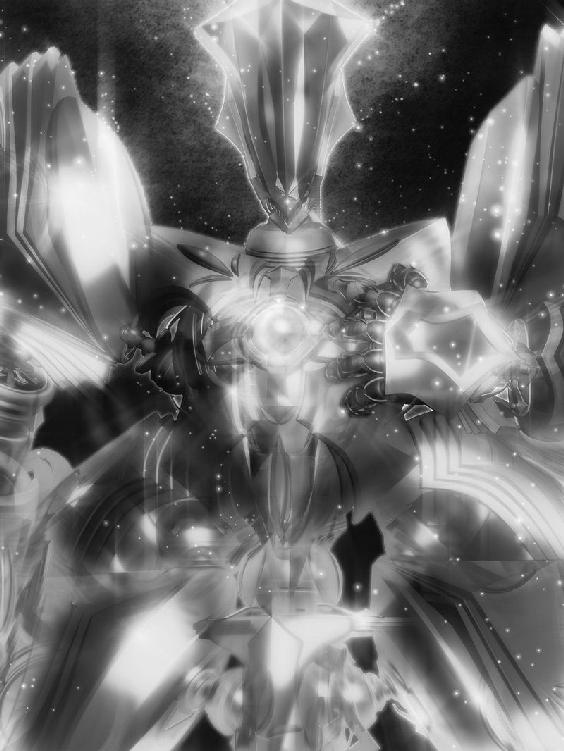

| リズベルルの魔～光のヴィルフォーナ～ ほんとうの物語シリーズ | |
| ときてっと | |
| TOKITETO (2016) | |
リズベルルの魔 シェラダン篇～光のヴィルフォーナ～
ほんとうの図書館１
木漏れ日に囲まれて、その建物はあった。
清涼な木々の香り、何処かに潜んだ動物の息使い。木陰は、緑色に揺らいでいた。
「何の建物かしら」一人呟きながら、イユレールはそっと扉を押す。
一歩足を踏み入れた瞬間、何とも言えぬ埃っぽい香りが鼻を付いた。と、不思議と不快感は無い。
何かお腹の奥をくすぐる様な、それが胸まで登って来てとくとくと音を立てる様な......わくわくする、そんな感触がした。
「だれか、いませんか」しんと静まり返った室内には、小さな声でも良く届く。イユレールは胸元で手を合わせ、あたりを注意深く眺めた。
一見整然とはしていたが、どうにも綺麗に押し込めたまま放りっぱなしと言った印象で、あちこちに聳える本棚には白いものが積もっている。
本棚......そう、本棚だ。「たくさん......」じゃあ、本屋さんなのかしら。イユレールが首を傾げた時、コツ、と音がした。
目を細めて見やれば、奥から奇妙な人影がゆったりと歩いてくる。影が動いているのかと言う様な黒い服に身を包み、滑稽だがそれが何とも雰囲気に満ちていて、この場にとても相応しい様に思えた。
イユレールは胸を膨らませる。不思議な事に、理解した。「ここ、図書館なんだわ」
「そう、ここはほんとうの図書館。いらっしゃいませ、お嬢さん」
黒い男はふわりと笑む。イユレールもつられてくすくすと笑った。
「図書館って、そんな風に出迎えて貰えるんだっけ」
「ここでは、そう言う決まりなのです」
「ほんとうの図書館？」
「そう、ここにはほんとうのお話しか......置いていないのですよ」
男の言う事は謎めいていて、イユレールは少しだけ眉を潜める。男はそれをどう受け取ったのか、恭しく礼をした。
「失礼、まだ名乗っていませんでしたな。私の名はコルグストム。このほんとうの図書館の......そう、司書の様なものです」
「ようなものです？」
「ようなものです」
真面目な顔で頷くのがおかしくて、イユレールは思わず吹き出してしまう。コルグストムはそれが気に入った様で、ほっと胸をなでおろしていた。
「本当のお話って、つまり実際にあった物語......と言う事？」
「それは難しいですね」何処か調子の外れた事を言って、コルグストムは少しの間黙る。「ここにあるのは......何処かであったかもしれない、そう言う物語です。もう終わっているのかもしれないし、そろそろ始まるかもしれません。ただ一つ言えるのは、嘘では無い、と言う事です」
ああ、それは難しいですね......とイユレールは神妙に頷いた。
「正直に言うと、私何だか判らないわ」
「でしょうね」
「それじゃあ司書のコルグストムさん、何かオススメの物語はありませんか？ それを、読んでみます、とりあえず」
「とりあえず、ならこの話はどうでしょう」
そう言って、コルグストムは一冊の本を掲げて見せる。一体いつの間に抜き取ったのか、本棚に近づく素振りも見せず、突然本が現れた......様に、イユレールには見えた。
イユレールはその本を両手で受け取ると、コルグストムはこれまたいつの間に用意したのか、座り心地の良さそうな椅子を薦めてくる。断る理由も無いので腰掛けて、抱える程もある大きなその本を、ゆっくりと開いた。
１．海を断つヴィルフォーナ
関節が軋む。さながら油の切れた機械の様だ。体中に重くのしかかる倦怠感は、何も寒さのせいだけでは無いだろう。
同僚の誘いを断るのは何時もの事だ。向こうも承知しているだろうが、何か決まり事の様に声をかけてくる。内心では疎ましく思われているに違いないと思うと、いっそう気が重くなる。
吐く息が白い。
妙な寂しさが胸中に満ちていた。言ってみれば孤独感だ。不思議なもので、他人と関わる事を煩わしく思う一方、独りでいるのもまた堪える。
それもこれも、学生時代の冬が原因に違いない。あの冬、幼馴染を続けて二人も失ってから、人と付き合うのが怖くなった。
そう、冬だ。あの年もこんな沁みいる様な空気だった。約束の場所に彼女は現れず、それと関係していたかどうか、今となっては尋ねる事も出来ないが、あいつは何処かへと姿を消した。
「......、」深く、胸中の気だるさを吐き出す。そうして苦笑した。学生時代の想い人の死と友の失踪をまだ引きずっているとは、なかなかに情けない。
「けど」思わず声を出して、空を見上げた。雲が掛かって、月は見えない。けれど、と思う。仕方がないでは無いか、と。
これがもし、不謹慎な事ではあるが、犯罪に巻き込まれたのであれば、まだ憤る事が出来た。しかしあれは殆ど偶然の事故だったのだ。遣る瀬無さ以外に何を思えば良いと言うのか。
あいつの事にしてもそうだ。失踪等と言う突拍子も無い行動に出る前に、何故一言相談すら無かったのか......。
結局、立て続けに起こった事件への心のやりどころを見つけられないまま、何度も冬が過ぎてしまった。胸中を満たす寂しさは、あの頃から積もった雪の様なものだ。
俯いたまま足を進め、何時しか無意識の内に静まり返った公園のベンチに腰を降ろしている。項垂れて、思わず両手で顔を覆った。思い出も、明日の仕事も忘れて何時間でもこうしていたい気分だった。どうも今夜は、特に参っているらしい。
冷えたベンチ。刺す様な外気。あるいは闇の静けさすら、体から熱を奪っていく様だ。対して、意識は嫌に研ぎ澄まされてくる。余裕が出来ると、妙な空想が頭に浮かんだ。
もし時間を巻き戻せたなら。俺はあの日、彼女を呼びださないだろうし、あるいは何かが起こるより先に、あいつに電話をかけて、他愛のない冗談を言うだろう。それは自殺だ。今、ここに居る未来の自分を殺す選択。
それは甘美に思えた。あの頃に戻って、全てを上手く巻き戻せたなら、俺はきっと......必要とされるに違いない。そう、今の居場所の無い俺では無く、本来あるべき姿は、そちらのはずだった。
選択されなかった未来の自分を想う。あの冬までは、そこに辿り着くと信じていたのだ。そこまで思って、あまりに都合のよい空想に、我ながら苦笑してしまう。両手を顔から剥がし、けれど目は瞑ったまま、ふっと息を吐く。ぽんと気兼ね無い風に肩を叩かれたのは、その時だった。
「あなた、何処から来たの？」
驚きが吐息となって漏れた。埃っぽい空気が鼻を付く。一瞬何が起こったのか理解できずに目を見開き、辺りを見渡す。
いつの間にか、室内に居た。見覚えの無い建物だ。向こうに見える扉の隙間から、ほんの少し光が刺すだけの、古めかしさを感じさせる石造りの地下室めいた場所である。先程までベンチに座り込んでいた筈なのに、何故か膝をついてそこに居た。
「からだが冷たいわ。さむくない？」
頬に熱を感じる。まるで距離を感じさせない仕草で、両の頬を挟まれたのだ。すぐ目の前に少女がぺたりと座りこんで、こちらを見上げていた。
「き・み・は......」と、自分の口から洩れた言葉に驚く。今一体、何を喋ったと言うのだ。空恐ろしさが背筋をかけた。自分で口走った言葉が、理解できなかったからだ。いいや、理解できたからだった。あまりの事に、パニックになる。
「こ・れ・は、これは、一体」
どうした事だ。己の口から洩れるのは、紛れも無く未知の言語だった。あろう事に、自分はその言語を全く自然に操っている。寒さのせいで、空想が外に漏れ出したのかと疑うほどだったが、その疑念は一瞬で過ぎた。あまりにも、現実感があり過ぎる。空想等では無い。これは体験だった。
「外界って随分寒い所なのね。すっかり冷えてるよ」
ほっそりした体に、あどけない顔立ち。何処か舌足らずな声が、理解し難い現状と合わさって謎めいて聴こえる。丁寧に編まれた柔らかな色の髪が、肩口を滑り落ちた。少女がこちらへ体を寄せて来たのだった。透き通った瞳は、しかし焦点が定まっていない。
「見えていないのか」異国の言葉で思わず呟くと、少女は困った様に眉を落とし、「うん」こくりと頷く。
なんと返して良いものか迷っているのが伝わったのか、少女は鈴が鳴る様な声でころころ笑う。白い肌に紅がさした。今度はこちらが、眉を顰める番だった。
「見て、私の目」
言われて、少女の瞳を覗く。と、驚きのあまり声が出無い。そこに何か映っていた。いや、瞳に映る己の姿と被さる様にして、その中に、何かがあった。
それは琥珀の中に封じられた太古の昆虫の様に、あるいは合成樹脂で固められた標本の様に、瞳の中に封じられている。鎧だった。極めて精巧な作りの......それ自体が生き物であるかのような、ある種芸術作品めいた白銀の巨人。
そう、少女の小さな瞳の中にある筈なのに、何故かその美しい細工や繊細な作りが見て取れた。何よりその大きさだ。それは人に合わせたものでは無く、あるいは巨人が着込む程の巨大な鎧だったのだ。瞳を覗きこんだだけで、そう言った事がまざまざと伝わってくる。思わず、感嘆の息が漏れる。そうして、少女はぱちりと瞬きをした。小首をかしげて、何か願う様な声色で言った。
「あのね、この子を動かしたくて、あなたを招いたの......私、リズベルル。あなたは？」
「俺の名は......、」滑る様に、口が動いた。「俺の名は、ジン」
名乗らずには居られなかった。この不可解な状況を理解しようと言う気も起きずに、ただただ少女......リズベルルの瞳の中の鎧に魅せられていた。
「灯り付けていいよ。ジンは暗いと困るでしょ？」
促されるままに、ジンは壁際にあったスイッチを押す。照明が付いて、ようやく地下室に灯りが燈った。一息付く。ぼんやりと頭が霞んだ。
体が重く、何処か遣る瀬無い気持ちが胸を満たしていたままなのが幸いした。もし平常の精神でこう言った不可思議な事が起きたなら、慌てふためいていた事だろう。
いや、あるいはこれは夢の中の出来事で、現実の自分は公園のベンチの上で凍死しかけているのでは......ぞっとするような想像が脳裏を過る。冷静に考えれば、そちらの可能性の方が高い様に思えた......が、目の前で微笑んでいる少女が現実の存在である事は、先に感じた通りである。これが夢か空想なら、およそ現実に並ぶ想像力と言える。新たな才能が開花したとしか思えなかった。ぐるぐると様々な想いが浮かんでは消える。冷静でいるつもりでいて、やはり相当混乱しているな、とジンは深く息を吐いた。
「でも、びっくりしちゃったな。まさかジンみたいな人が現れるだなんて思いもしなかった。私、これが最初で最後だと思って招いたんだよ。それが......本当にびっくり」
少女......リズベルルもまた沸き立つ気持ちを抑えられない様子で、ぴょんぴょん跳ねてみせる。ジンはその様子に思わず頬を緩めた。思えば、こうして屈託無い声で名前を呼ばれる事等何年ぶりか......。
「いや、そんな事よりも」
「うん？ どんな事？」
リズベルルの透き通った瞳がきょとんと瞬く。ジンは額に手をやって、どうにか心を落ち着けようと努める。ようやく、危機感めいたものが沸いてきた。一体全体、俺はどうしてしまったと言うのだ......と。
「リズベルルと言ったな......俺を招いたとはどういう事だ。君は......いや、そうだ、その瞳は......？ いいや、違う。そんな事よりも先に......ここは何処なんだ」
「ジンはあわてんぼうね。そんなにいっぺんに聞かれても」と、リズベルルが困った顔で首をかしげた時だった。
ざばんと、波の音がした。
「海だ」
と、突然表情を強張らせ、リズベルルが呟くのと、高い位置にある地下室の扉が勢い良く開かれ、そこから黒々とした水が恐ろしいまでの勢いで流れ込んできたのは、殆ど同じだった。
きゃっと短く悲鳴を上げて、リズベルルが身を縮ませる。ジンは素早く少女の傍に駆け寄り、その肩を抱いた。黒水の流れは緩やかとは言い難いまでも、まだ余裕がある。なんとか外に出なければならないが、盲目の少女に果たして何処までの無茶が可能だろうか。そう考えている間にも、水は刻々と地下室の床に溜まり始めていた。
「リズ！ リズベルル！ そこに居るな!?」と、第三者の声が響く。見れば、開かれた扉からロープが投げ込まれ、それを伝って一人の男が降りてくる所だった。
「ノルアード！」リズベルルは声のした方を見て一瞬ぱっと顔を輝かせるが、すぐに表情を曇らせた。少女の様子に男......ノルアードが気付いたかどうか、その様な素振りも見せず水をかき分けて少女の前に立った。
「馬鹿な事を......あまり私を心配させるなよ、リズベルル」
言葉とは裏腹に、ノルアードの声色は優しげだ。やけに上等な服を着崩している様子から、急いで駆け付けたであろう事が判る。一方でリズベルルは、何処か不貞腐れた風に唇を結び、俯いていた。
ジンは僅かに、ノルアードに反感を持つ。と言うのも、この男は先程からジンの事をまるで無視したかの様に一瞥もしないのだった。まるでいないものと扱われているようで、面白くない。
「おい、説明をしてくれ」思わず口を挟むと、リズベルルがはっと顔を上げ、ジンの方を見て唇に指を当て、悪戯っぽく笑む。どう言う意味だ、と首をかしげると、リズベルルは一つ頷き、ノルアードを見上げた。
「ごめんね。ごめんなさい......ノルアード。でも、私どうしても」
「良いんだ、判っている。先生の残した屋敷を守りたいのは、私だって同じだ。けど、すまない。トルフは皆、海が川に流れ込むのを防ぐので精一杯......こちらまではまだ手が回らない」
ノルアードが悔しげに声を絞り出すのを聴いて、リズベルルはその澄んだ目を大きく揺らした。
「もしかして......私の事、一人で探しにきてくれた......？」
「当り前だ、私は何より......」と、ノルアードはその先の言葉が見つからないとでも言う様に唇を震わせ、それきり黙りこむ。ジンは見ているのがじれったくなって、思わずリズベルルの耳元で囁いた。
「もう随分、水位が上がってきている様だが」「たいへん！」
少女の声に、ノルアードが表情を引き締める。扉から降りてくる時に使ったロープをリズベルルの細い体に巻きつけた後、「失礼」と断ってから軽々と持ち上げ、流れ込む水に逆らって扉への階段を登り始めた。ジンもまるきり無視されている事に内心やれやれと首を振りながらも、その後に続く。
「まさか、俺の姿が見えていないと言う訳ではあるまいな」ジンが思わずそう漏らすのが可笑しかったのか、リズベルルはころころと笑った。「ジン、あなた今、私の瞳の中にいるのよ」
少女の掴み所のない言葉に思わず聞き返そうとした時、ふと足元の水の流れが軽くなった。
扉の先は硝子屋根のある庭となっていた。元は手入れが行き届いていたのだろうが、今や黒々とした水に何もかも押し流されてしまいそうである。あちこちに溜まりつつある黒水を避けながら、ノルアードの先導で進む。
しかし、瞳の中にいるとはどう言う意味だ。考えを巡らせても、答え等出るはずもない。しかし、眼下を流れる水に自身の姿が反射していない事が全ての様な気がした。まさにジンの姿は今、ノルアードに見えていないのだ。
では、先程から足の付け根よりも高く上りつつある黒水が、確かにジンの足にぶつかって飛沫を上げているのはどう言う事だ。そもそも、地下室の灯りを燈したのは自分では無いか。すると、見えないだけで実体はここにあると言う事になる。
まるで中途半端な幽霊の様だ、とジンは苦笑した。笑う他に、気を紛らわす手が無い。
「不味いな」苦渋に満ちた声が聞こえた。はっとして顔を上げれば、ノルアードがリズベルルを抱きかかえたまま足を止めている。考え事をしているうちに、黒水は今や膝の上辺りまで達していた。流れも強く、先へ進むどころか気を抜くと転びそうになる。硝子屋根がそこで終わっていた。伝って来たロープは、屋根を支える柱に結ばれている。ロープを掴んでいれば、暫くこの流れの中でも持ちこたえられるだろうが、それも何時まで続くだろうか。来た道を振り返れば、今は水の中にぽっかり空いた穴となった地下室への入り口と、その向こうには大きな屋敷が見える。ジンは息を飲んでリズベルル達の方へ向き直り、そして言葉を無くした。
初めは景色を包むほど濃い雨が降っているのかと思ったが、違う。眼前に、川があった。文字通り、目の高さに波がある。と言うのに、黒水の波は決してこちらへ向かって零れる気配が無い。奇妙な事に、それは透明なチューブの中を流れて居るかの様に、形を保ってそこにあるのだ。殆ど黒々としたゼリーの塊とでも言うべきものだった。何か目に見えぬ壁か、透明の膜とでも言うべきものに阻まれるかのように、空間に水が溜まっているのだ。水音を聴いたリズベルルが、不安そうに喉を鳴らした。更に嵩を増した黒水は、この空間に流れる川から溢れ出たものらしい。見た目には零れていない様に見えて、どうやら膜の薄まった個所から漏れ出している様だ。
では、もしこの水が全て外に溢れだしたとしたら......想像して、ジンは息を飲んだ。
「飛行船は来ないの？」
「今は川向うだ......あちらの亀裂を埋めたら、直ぐにでもトルフ隊をこちらへ運べるようにと思ったが......ここまで急に流れ込んで来るとは」
リズベルルがノルアードの腕の中で目をぎゅっと瞑り、何か決心する様な素振りを見せた。確かな状況は判らないが、どうやらこの黒水はノルアードの想像を超えて沸き出で、じきに決壊しようとしているのでは無いか......？
ジンはほうっと息を吐いた。これが凍える寸前の夢であれおよそ理解の及ばぬ現であれ、自分の運命はさほど変わらなかったらしい。と、諦めにも似た気持ちが胸を満たそうとした時、リズベルルが、似合わず凛とした声で言った。
「あるよ」
思い当たる節があるのか、いや、もしかしたら初めから気付いていたのかもしれない。ノルアードが目を見開いて、悔しさを押し殺すように唸る。「しかし......」
「あるよ、それもガストルフ級の弦奏鎧、私の眼の中にある！」
「無理だ、無事で済む保証が無い！ よしんば外に出せたとして......動かす事が出来ない！」
「できるもん！」
と、リズベルルの澄んだ瞳が、ジンを見た。あるいは、ジンを見据えたのは......その瞳の中で眠る、鎧だったのかもしれない。
「ジンならきっと動かせる」
信じられないものを見る様な目で、ノルアードがジンを凝視していた。「貴様、何時から......そこに......？」目を細め、眼下を見れば、黒水に反射する影があった。
紛れも無く、自身の顔だ。ジンは大きく息を吸った。これまで嗅いだ事の無い匂いがする......そうか、俺は本当に、招かれたのか。
訳も判らず、ジンは頷いた。いや、頷く他無かったのかもしれない。抗い難い何かが、ジンを奮い立たせていた。根拠の無い確信があった。「出来るかもしれない」リズベルルもまた頷く。ノルアードが何か叫んだ。その時には、生じていた。
リズベルルの瞳の向く先に、像が結ぶ。球体だった。生物めいた脈動があったかと思うと、その球を破り、中から新たに破片が沸き出す。まるで動物の骨の様なそれらは、次々に組み合わさり、機械的に噛み合って、瞬く間に姿を成していく。
ジンはその工程に、殆ど見とれていた。黒水が透明な膜を破って溢れ出た時も、動けなかった。いいや、動く必要が無かったのである。
濁流となって押し寄せる黒水を、巨大な影がその背で遮っていた。ノルアードが息を飲み、リズベルルは歓声を上げた。ジンはただ、痺れた様にその影を見上げ......笑む。
「海を断ち、天舞う音色......ヴィルフォーナ！」
少女の瞳の中に映っていた鎧が今、実体となってそこに跪いていたのである。
「封印が......解けたと言うのか......！」
ノルアードの叫びを合図としたかのように、波飛沫が黒々と高く立ち登る。しかし、それは不動の鎧に断ち切られ、雫の一滴すらジン達に触れる事は無かった。
鎧の背に阻まれて生まれた２本の黒水の流れの間で、ジンは頷く。呼び掛けられた気がしたのだ。純白の鎧......リズベルルは今しがたヴィルフォーナと呼んだか......に一歩足を踏み出すと、まるでジンの意思を汲み取るかのように、鎧は頭を持ち上げた。
ぎしぎしと金属の軋む音と共に、頭部と胸部とが開いて行く。すると、人の乗り込めるスペースが見て取れた。重力めいた力にジンは半ば吸い寄せられる様に鎧の中に乗り込む。
「直接動かすつもりなのか......!?」困惑気な声でノルアードが何か言った様な気がしたが、それは波の音に掻き消され、ぼんやりとしか聞き取れない。今はヴィルフォーナの背に阻まれて流れを弱めている黒水の塊だったが、次第に不可視の壁が弱り、亀裂を生み、新たな決壊を引き起こそうとしているのが気配で判った。ジンは心が急くのを制し、掌を強く握って、開く。眼前にあるリングを掴んだ。煌びやかな装飾が成されたそれは、まるで手綱だ。同じように、眼下のペダルリングに足をかける。楽器を思わせる幾つもの弦が伸び、それらは鎧の四肢と繋がっているらしい。いける、と、知らず口元に笑みが浮かんでいた。「らしくないが......こういうのには憧れたものさ。行くぞ！」弦が引き絞られ、弦奏鎧......ヴィルフォーナが立った。ばっと音を割き、黒水が跳ねる。
「......っ！」手で、払った。素手では無い。鎧の......ヴィルフォーナの拳が、黒水を叩き、蒸発させる。軽い。ジンの思考に寸分の狂いも無く追従してくる......成程、鎧だ。ジンはヴィルフォーナに乗り込んでいるのでは無い。これを着ているのだ。ジンの心は今、巨人と化していた。
「已むを得んかっ......おい、貴様！ 招かれし者よ！」苦渋の表情のノルアードだった。「貴様にヴィルフォーナと......そしてリズの命を託す！ 背中だ！ 背中の剣を取れ！」ジンはリングを握ったまま、背を探った。ヴィルフォーナもまたジンの仕草をなぞる様に動く。そして......背負っていたそれを、掴んだ。柄だ。一閃の内に抜き放ち、空を断つ。短剣！ その短い刀身から次々に刃が滑り出し、噛み合い、鋭く長い刃を成す。ばぁんとそれこそ楽器めいた、金属を打ち鳴らす音がした。
細かな刃が並び合って出来た剣であるはずなのに、表面は鏡の様に滑らかで、光すら断ち切らんばかりの輝きだ。「使え！ 我がフィレントア家に伝わる、ニトクリス玄鏡石より研ぎだされた宝剣。時すらも断つ、メイルレヴァンの剣だ！」
ジンの喉から、獣めいた唸りが漏れた。心が浮き立つ。脈動する。憂いなどすっかり吹き飛んでいた。メイルレヴァンの剣を振るう。眼前の......黒水に向けて。
驚くべき鋭さだった。「成程、業物だっ」中空に溜まる黒水の塊が、すっぱりと両断されていた。それはノルアードの予想をも凌いでいたのか、彼は絶句して目を見張る。ヴィルフォーナは今振り切ったばかりの剣を静かに傾ける。しゃきり、と小気味好い音と共に、光を受けて刀身が輝く。切り落とされた黒水が地に落ちる事は無かった。忽然と、消えていた。勝利を歌うかの如く、ヴィルフォーナ......ジンはメイルレヴァンの剣を頭上に振り上げた。弧を描き、そのまま刃を、今になって断ちきられた事に気付いたのか、ようやくちゃぷりと音を立てて揺れた黒水の残り半分へと突き立てる。鐘を打ち鳴らした様に剣が響く。ジンはそして、断ち斬ったと同時に消え失せた黒水が何処へ行ったのかを知った。
地面に突き立てられたメイルレヴァンの剣、その鏡の刃の奥へ奥へと、黒水が流れ込んで行くのである。まるで剣に映った風景の向こうに、何か広大な空間があるとでも言う様に。驚きの声を上げる暇も無く、黒水は地下室に流れ込んでいたものまでも含めてすっかり鏡の剣に吸いつくされてしまった。まるで映像を逆回しで見ているかの様な光景だった。
「......終わったのか」ジンはふっと息を吐き出す。急に腕が痺れた。疲れがどっと押し寄せてくる。両手をリングから離すと、ヴィルフォーナの頭部が持ち上がり、外の空気が鎧の中へと流れ込んできた。もう、黒水は何処にも見えない。
と、思った矢先、視界に暗がりが映る。まさか、また水が沸き出してきたと言うのか......とぎょっとするが、違う。木陰に誰か立っていた。頭から足の先まで黒尽くめの人影。一瞬、視線が交わったと思いきや、その人影は身を翻し、直ぐに視界から消えていく。
その人影について考えを巡らせる暇は無かった。足元でわぁ、と歓声がした。見れば、リズベルルの透き通った瞳がこちらを向いて揺れていた。「ほんとうに......ほんとうに動いた......」ぽろぽろ涙を零しながら、けれども曇りの無い表情で笑むリズベルルを見て、ジンはほうっと息を吐く。
少なくとも、目の前のこの笑顔を曇らせなくて、良かった......と。
「おい、見たかよ今の」
足元から声がして、黒尽くめの影は歩を止めた。その拍子に、纏ったコートがほっそりした体に巻きつく。整った顔に暗く影を落とした、何処か諦めを張り付けた様な印象の男だった。
「思いの外、綻びが激しい。此処も長く無いだろう」
「違ぇーよ。見たろうが、あの鎧。あれはヴィルフォーナだぞ、印は球だ」
男の足元で、背の高い草が揺れた。声はどうやらそこから聞こえて来るらしい。男は一度振り返って、向こうからは見えないであろう木々の間から、今しがた黒海を断ち斬った鎧の方を見る。
鎧は蜃気楼の様に揺らいだかと思うと、霞の様に薄れ、少女の瞳に吸い込まれて行く。男が瞬きする間もなく、弦奏鎧はすっかりその巨体を隠してしまった。気を失って倒れかける少女を、慌ててノルアードが抱き支える。
「確かなのか」黒尽くめの男はふっとノルアード達から視線を外し、何か思い詰めた表情で眼下の声の主へと問う。がさがさと草の擦れる音がそれを肯定していた。
「何故俺が長い事この街に留まっていたと思う？ この街にヴィルフォーナが伝わっていたからに決まっているだろうが。球の魔でしか動かない弦奏鎧が伝わっていると言う事は、過去にエコーデュオンから招かれた奴が居たって事じゃねーか。つーことはだ、未来に招かれるものもまた現れる、だろう？ そしてそれが今って訳よ......っておい、行っちまうの？」
声が引きとめるのも無視して、黒衣の男はつかつかと歩いて行ってしまう。姿の見えない声の主は、思案気に喉を鳴らした。
「こいつはもしや、ズバリ当たりだったりしてな」
茂みを掻き分けて現れた灰色の毛並みが、ぽつりと呟いた。
コ、コ、コと、何処からか時計の振子が刻む音が聞こえていた。ジンは壁に背を預け、腕を組み、じっと扉を見つめるしかない。
ヴィルフォーナは消え失せてしまった。再び、少女の瞳の奥へと封印されたのだ。鎧が姿を隠してしまうと、糸が切れたかのようにリズベルルは気を失った。ノルアードは殆ど顔を真っ青にして少女を抱えると、屋敷の扉を蹴り破らんばかりの勢いで開き、二階の一室へ飛び込んだのだ。部屋に入りそびれたジンは、ただ立ち尽くしていた。まだ、手に感触が残っている。
剣を振るった高揚が。
あの時、確かにジンはヴィルフォーナと一体であった。思うままに剣を振るい、黒水の濁流を薙いだ。
憂いや、渇き、あるいは欠落。そうしたものが、ジンの心には常に潜んでいた。「いや、隠れるどころか......」思わず唇を歪め、ジンは一人笑む。そう、そう言った暗く陰った感情こそ、ジンの胸を占める大部分であったのだ。
その陰りが、今や嘘の様に消えていた。むしろ晴々として、浮足立つ様だ。勿論、一向に見えてこない状況には混乱していたが、それすら瑣末だった。ただ、倒れたリズベルルの事だけは気がかりではあったが......。
先程から、扉の向こうから何か話し声が聞こえていた。リズベルルが目を覚ましたのだろうか。あの少女とは、二言三言交わしただけでしか無い。しかしそれでも、このおよそ判断し難い状況の中で、ジンを唯一理解してくれそうな相手ではある。そもそも、様々な断片から察するに、あの少女がジンをこの世界に招いたのだ......もっとも、〝世界〟として良いのかがそもそもの疑問ではあった。一番可能性が高いのが〝夢〟であるし、〝幻覚〟と言いかえるのが平穏かもしれなかった。あるいは過去と言う事はまず無いだろうが、〝未来〟ならあり得無くは無い。が......ひとまずは、〝世界〟としておこう。黒い海が脅かす、不思議の世界だ。まずは様々な疑問を整理して、自分の立ち位置を固めてしまいたかった。
と、考え込んでいると、不意に目の前の扉が開いた。ジンは思わず体を浮かせる。ノルアードだった。一瞬、彼に自分の姿は見えているのだろうかと躊躇するが、杞憂の様だ。視線が合う。居を決してジンは口を開いた。
「彼女......リズベルルは、平気なのか？」
「今、眠った所だ。疲れたんだろう......リズは、目が見えないんだ。想像してみろ、何も見えない闇の中で波音が迫ってくる恐ろしさを。お前ならどうだ。耐えられるか？」
鋭く睨みつけられて、ジンは閉口する。この男にとってジンの得体が知れない事は判らないでも無いが、感謝されこそすれ、理不尽に責められる謂われは無い。黙ったままで居るジンの胸中を察したのか、意外にもノルアードはきまりが悪そうな顔をした。どうもこの男はこの男で、かなり取り乱しているようだと気付いて、ジンは表情を和らげる。
「この屋敷はどうなんだ。さっきみたいな事が、また起こるんじゃ無いか」
「ふん、外の国から来た貴様には判らんだろうが、あんなもの。この国では日常茶飯事だ」
「そうか、俺には大事に見えたけれど」「何？」すっとノルアードの目が細められる。そう言えば、早くもこの妙な言葉にも慣れて来たな、と思いながら、ジンは自分の口から流れ出る未知の言語を、出来るだけ慎重に聴こえる様に喋った。
「そう、大事だ。普段あの黒水は、大した脅威じゃ無い......恐らくある程度対策の取れた、災害だ。けど、今度のは多発的で、大規模だった。一方で手一杯になる位には。それに、普段からああならば、地下室等掘る訳が無い」
ノルアードは暫くジンの顔を値踏みする様眺めていたが、やがてどうも納得の行かない様な表情で視線を外し、ずかずかと歩き出す。「俺はこれから行かねばならん。お前の言う通り、今度は手一杯だったのだ......」階段を降りながら、一度ジンを振り返って憮然とした表情で言った。「ジンと言ったか。お前が居なければリズも危なかった。助かった」「ノルアード、何故俺がリズベルルに招かれたと判った」名前を呼ばれた事に驚いたのか、あるいはジンの問いに意表を突かれたのか、ノルアードは立ち止まる。
「この街に、お前の様な黒髪黒眼は居ない。それにお前、あの時あの場に突然現れたろうが」
背を向けたままのノルアードの声には、心なしか可笑しげな響きが混じっている様に感じられ、ジンは彼の視界の裏で肩を竦める。ジンにしてみれば、ずっとあの場に居たのだが、と。
「ジン、俺はあの子を、リズベルルを信頼している。そのリズに招かれたお前も、また信用に足るデュオンであると信じるしかない。お前の言う通り、間を置かずして海が来る可能性も僅かにある。もし危険だと思ったら、ヴィルフォーナの封印を解き、あの子を守って欲しい。では、任せたぞ。詳しい話は次にしよう......くれぐれも、リズベルルに対して妙な気を起すなよ！」
矢継ぎ早に言って、ノルアードはジンが声をかける間もなく屋敷を飛び出して行った。頭の中をぐるぐると廻る疑問が行き場を無くし、ジンは追いすがる様に伸ばした手を、静かに下げる。溜息が漏れた。
「まぁ気持ちは判らないでも無いが、そう焦るなよ、ジン」
全くの不意打ちで声をかけられ、ジンは飛び上がりそうになる。間違い無く、この世界に招かれてから一番の驚きだった。声の主は、眼下に居た。
「何だよ、今さら驚く事かよ。お前、意外と抜けてそうだなぁ」
からかう様な青年じみた声の主は、毛玉だった。灰色で、くりくりした目が二つあって、何が楽しいのか尻尾をくねくね動かしていた。
「ニヤニヤ笑った方が良いか？ だけど残念ながら、出たり消えたりは出来ないんだな、これが」
灰色の猫が、やけに人間臭い仕草でぱちりとウィンクする。
「ここでは、猫が喋るのか......」
突然の事に息が継げず、声が擦れる。ジンの言葉に、猫は髭をぴくぴくさせて喉を鳴らした。どうやら笑っているようだった。
「そんな訳無いだろ？ 猫ってのは、人間とは体の作りからして違うんだからよ」
どの口が言うか、とジンは唸る。
「じゃあ自分はどうなんだっつーの。お前、この国の言葉を誰から習ったんだよ。こっちに来たら知らず喋れたんじゃないのか？ だったら、俺だってそうだよ」
「つまり、その......お前も何処からか招かれて来た......と？」
「そうそう、話が早いじゃ無いか。まぁ、俺が説明係になってやるから、ちょっと来いよ、ジン」
言って、猫はたったと駆けて行く。慌てて後を追うと、化猫は玄関の前で尻尾をぱたぱたさせ、扉を開けろとばかりに座り込んでいた。ジンが扉を押すと、猫は開ききるのを待たずに扉の隙間からするりと外に飛び出した。そのまま、例の地下室に降りて行く。
「大体この手のは、物語とかだとさ。異世界に招かれるのは子供だったりするんだよな。その点俺は猫で、お前は大人だから、話も通じやすくて良いよ。これが子供だったら、泣くわ喚くわで大変だったぜ」
何が可笑しいのか気の良い笑い声を立てて、猫は机に飛び乗った。ジンは先程の記憶を頼りに、手探りで照明のスイッチを入れる。温かみを感じさせる色の灯りに照らされて、僅かに埃を被った本棚や、机の上の書類等がぼんやり浮かび上がる。
「聞いて良いか。俺もお前も、招かれた者はその国の言葉を喋れるようになると言うのは、どう言う理屈でそうなる？」
「変な事を聞くなあ、ジンは。そんなの、不便だからに決まっているよ。お前らの言葉で言うと、〝最適化〟って奴だよ。この国に招かれる時に、一番良い形に最適化されるって事だな。そう考えると、重力とか空気とかそれこそ言葉とか、難しく考えなくて良いだろ？ 適応された形で招かれるんだからさ。まぁ、理屈とかは判んないよね。俺は猫だし」
あっけらかんと言われると、ジンはもうそれ以上追及できなくなって、ただただ猫の言葉に耳を傾けるしか無かった。何となく、不安が浮き彫りになって行く様で心細く思う。何せ、相手は猫だ。
「何から話そうか。そうだな、まずはここが何処かと言う事からだが、まぁそれは俺にも判んないんだよね」
「お前、俺をからかっているのか」
いや、と猫は首をかしげ、机の上をぽてぽて歩いて、隅の方に乗っていた三角錐をぺたりと触った。「一応、確認だけど。お前地球から来たんだよな？」恐る恐ると言う風に尋ねるので、ジンは小さく頷いてやる。すると、猫はぱっと顔を輝かせた......様に見えた。嫌に人間くさい猫である。
「じゃあ、地球儀ってあったろうが。これはこっちの世界のそれだよ。この世界の小模型と言う奴だね」
「このピラミッドみたいな三角が......？」
猫が踏んでいるそれは、硝子かアクリルか何かで出来た透明な三角錐で、言われてみれば、底辺には地図の様なものが描かれている様にも見える。そこで初めて気付いたが、言葉は理解できても、文字は読めない様だった。
「ああ。この世界は、これでエンダージェンと言う一つの国なんだ。ジンも地球の言葉とエンダージェンの言葉では少しニュアンスが違うものがあると後々気づくと思うけど、〝世界〟と言うのもその一つだな。ここでは世界と言うのは国を指す言葉さ。で、この国は王を中心に置いて、幾つもの街に分かれてる。三角錐の中心点が王城。そこから、辺まで放射状に線を引いて考えてみてくれ。そうして出来たそれぞれの三角形が街だよ。今俺達が居る街は、シェラダン。都会では無いけど、豊かな街だ。良かったね」
「待て待て、詳しいじゃないか。お前はさっきここが何処だか判らないと言ったろう？ あれはどうした」
「ジンこそ、見て気付かないのか。この国はピラミッド型なんだぜ」
「あ......」
「そう言う事。宇宙のどっかとか、そう言うレベルじゃ無いって訳。少なくとも惑星とか言う考え方はエンダージェンでは通じないな。地球とはあり方がまるで違う」
「......すると、この国には宇宙に相当する概念は無いと言う事なのか？」だからどうだと言うのだ、と思いつつも、尋ねずにはいられなかった。
「んー、いや、と言うか。この国の外は海だよ」
「そう言えば、リズベルルはあの黒水を海と呼んだ......」
脳裏にあの不可思議な情景が蘇ってきた。空間から沸きだす黒水......いや、海か。そして、リズベルルの瞳から現れた鎧。ジンはそれに乗り込み、鏡めいた刀身を振るったのだ......。
「どうした？ ジン、黙り込んじゃって。猫に舌を取られちゃったのか？ まぁ、とにかくこの国の外はすっかり海なんだよ。この三角錐を水道の下に置いた所を想像したら近いかな。ざーっと表面を絶え間なく水が覆っている状態なんだな。で、厄介な事に時折海は結界を破って国の中に入ってきちゃう。結界と言うのは、三角錐の表面の事だな。まぁ何となく判るだろ？ 隙間が出来て、中に海が入ってきたらやばいって事くらいさ。実際、さっきも危なかったし」
「だが、あの時は中空に全く突然亀裂が走って、そこから黒水が傾れ込んできていたんだ。結界と言うのが......この模型で言う所の、透明な板の部分だと言うなら、それこそ亀裂はこの国の端にしか出来ない筈じゃないか？」
「そこが難しい所だよ。一説によれば、海とこの国とは存在を競い合っているんだそうだ。今この国は安定しているけど、この安定が崩れると、とたんに隣り合った次元にある海に存在を取って代わられちゃう。要するに、海とこの国とはそもそも表裏一体となっていると言う事だな。国が表に出ている時が、安定した状態。安定が崩れると、裏、つまり海による浸食が始まる。だから、亀裂と言うのは不安定さそのものと言う訳。逆に亀裂さえ塞いでしまえば、海は引く。この地下室が良い例だ」
言われてみれば、先程あんなに黒水が流れ込んできていた筈なのに、地下室は何処も湿った様子が無い。せいぜい、物が僅かに動いている程度だ。
あの時は夢中で判らなかったが、言われてみれば、ジンの衣服も同様だった。黒水に浸かっている間は確かに濡れた様に感じたが、服自体は全く渇いていた。
「とは言えなるべく海には触れない方が良い。あれにずっと触っていると滅びるんだ」
「滅ぶ？」
「そうとしか言い様が無い。ずっと海に浸かっていると、あらゆる物質はまるで悠久の時を超えたかの様に朽ちて行くのさ。まぁ言った所でピンとは来ないだろ？ ともかくこの国は常に海による浸食の危険がある事を覚えておけば良いよ」
「......判った。今はとにかく、話を聞くだけ聞いておきたい。考えるのは後にしよう」
「ジン、お前は話が判る奴だなぁ。それでだ、この海を外界に押し返す方法として、最も良く用いられるのがニトクリス玄鏡石だな。大体、磨いて剣にする。どう言う訳か知らないけど、海はこの石の向こうに流す事が出来る。すっごく腕の立つ奴に使わせたら、空間に生じた亀裂を断つ事だって出来る......ジン、お前エコーデュオンで何か習っていたのか？ 剣道とか、フェンシングとかさ。あ、居合か？」
聞きなれない響きの意味は判らなかったが、ジンは首を振って肩をすくめた。だよな、と期待していなかった風に頷いて、猫が髭を揺らす。
「続けるぞ？ ニトクリス玄鏡石から鍛えられた剣は並大抵の力じゃ振るえない。でっかいからな。だからほとんどは弦奏鎧に持たせるんだ。ここでようやく、お前がこの世界に来た理由に繋がる。良いか？ この国では外界から魔を招く。そうして、形骸に宿らせる事で使役する」
「すまないが、急過ぎて良く判らない。どこがどう繋がったって？」
ジンは額に手をやって眉を寄せた。そろそろ頭の中がごちゃごちゃになって整理が付かなくなりそうだ。猫はまぁ待てよという具合に喉を鳴らし、尻尾でぱたぱた三角錐を叩く。本当にこの猫を信用して良いものか、ジンは今さらの様に悩む。
「ここで言う形骸とは弦奏鎧の事だ。エコーデュオンでだって、あんな鎧を俊敏に動かそうと思ったら、相当なエネルギーが必要だろ？ エンダージェンでも同様だ。だからエンダージェンでは、エネルギーを外界から持ち込む事で解決する。つまり魔とは、外界よりもたらされるエネルギーと考えられる」
「俺は......確かにあの鎧に乗って、動かしたが、エネルギー呼ばわりとは」
「ジン、お前は例外だよ。弦奏鎧にはそれぞれ印があるんだ。印とは形質の事だ。三角の印には三角の魔。四角の印には四角の魔。それぞれ同じ形質を持ったもの同士で無いと反応しない。この国はピラミッド型だから、三角の印が最もポピュラーだな。弦奏鎧も、三角の印を持つものが多い」
「なら、みんな三角の印を持たせて作れば良いじゃないか」
「大体はそうだよ。弦奏鎧には種類があって、トルフは小柄である程度製造の工程が決まってるから、ライドムルド......三角の印が押されているものが多い。問題はガストルフ級さ。これは殆ど一点ものと言って良い。トルフとは比べ物にならない年月を費やして職人の手で組み上げられる最上級の弦奏鎧......ヴィルフォーナもこれに当たる」
「ヴィルフォーナ......」
ジンはリズベルルの瞳に封じ込められた、あの鎧の事を思い浮かべる。
琥珀の中に沈んで眠る様な、ヴィルフォーナの姿を。
「ヴィルフォーナの印は、エコーデュオンだ。エコーデュオンとはエンダージェンで球を表す言葉だよ。そして球は特別な印だ。完全なもの、全てを内在するもの、あらゆる次元に遍在すると言われる超越的な観念だ。ヴィルフォーナを動かすには、球の形質を持った魔が必要だった......そこで、リズベルル嬢はこれを招いた。球状の世界からね......エコーデュオンとは、エンダージェンでヨグソトース球......つまりは地球を意味する言葉でもある」
「つまり俺は、あの鎧......ヴィルフォーナを動かす為にこの世界に招かれた魔、と言う事だな？」
全く、頭の痛い話だった。
「まぁでもジンは運が良いよ。既にノルアードの奴に恩を売ったじゃんか。あいつはこの街の剣主だからね」
「つるぎぬし？」
「王から対の剣を預かっている者の事だよ。街の水門を守る役だ。この街では代々フィレントア家が剣主をしてる。まぁ、街で一番偉い奴と思えば良い。ノルアードは現当主と言う訳だね」
実際の所、そんな話を聞かされた所で生返事しかできず、ジンは顎をさすった。ともかく、この世界においてはそう悪い現状でも無いらしい、と言う事か......疑念は尽きないまでも、元々希薄だった焦りはすっかり消え失せている。人と話して気が落ち着いたのかもしれなかった。相手は、猫だけど。
「少し聞いても良いか？ お前の言う剣主のノルアードは、俺を見てデュオンと呼んだ。デュオンとは何だ？」
「ああ、それは魔の難しい呼び方だよ。古い呼び方だな。他にも悪魔とか色々呼び方はある。まぁ、覚えなくて良いよ、そんなの」
「それから、初め俺の姿はノルアードに見えなかった。リズベルルは、俺が彼女の瞳の中に居たと言った。あれはどう言う意味だ？」
「それも気にしなくて良いよ。お前はヴィルフォーナと言う形骸に招かれた魔だから、ヴィルフォーナの封印を担っているリズベルルの眼球を経由してこの国に招かれたと言うだけの話でさ。この国に定着したら、それで安定する」
「普通、招かれた魔と言うのは最終的にどうなる？」
「消費されるよ、もちろん」猫はそっけなく言った。
「その、つまり......俺達もその通りと言う事だな？ お前がこの世界に招かれてどれほど経つのか知らないが、なかなか精通しているようだ。そんなお前がこの国に留まっていると言う事は、端的に言って、元の世界に帰る方法は無い......と言う事か？」
「何だ、ジン。お前帰る気があるの？」
何を言っているんだ、とでも言う様な口調で言われて、ジンはぎくりとした。そうして、初めて自覚する。焦りが希薄だったのではない、そうか......そもそも自分は、元の世界に帰る気など無かったのだ、と。
「一つ教えておいてやるけれども、魔と言うのは契約によって招かれるものだよ。どちらか一方の都合では招かれないものだ。そもそも意志があるんだか無いんだか判んないエネルギー......力の奔流とでも言うものを招く訳だから、ある意味では一方的だよね。まぁ奴らは奴らで消費される事を望んでこの国に招かれているのだと言う見かたもある。だがエコーデュオンに対する契約は違う。エコーデュオンの魔には形骸がある。そもそも形骸に対して、形骸の無い魔を招く事が前提としてあるのだから、これは基本的に成立しない。無理矢理招いても、失敗する。けど、時折招く者と招かれる者で利害が一致する時がある。その上、拠となる印の形質......ジンの場合はヴィルフォーナの球の印だな......が特に一致する事も稀にある。この場合は上手く良く。とは言え、普通は起こり得ない。印にも一つ一つ癖みたいなものがあるからな。形質がぴったり合うもの同士が現れる事等奇跡の様なものだ。ジン、だからお前は例外なんだよ。逆を言えば、招かれたくない奴は招かれる訳が無い」
「......」
「まぁでも、帰りたいと思うならリズベルルと契約しなければ良い。お前はまだリズとなんとなーくしか契約して無い状態だ。約束事をなるべくしなければ良い。それから、帰る場所を失くさない事。ぼんやりしてるけど、これを守っていれば絶対に帰れない訳でも無い......それより俺はもう眠いよ、ジン。これ以上の話は今度にしよう。猫は眠たがりなんだ」
言うだけ言って、猫はくたびれた風に欠伸をすると、跳ねる様に階段を駆け上り、地下室から出て行った。取り残されたジンは、重い足取りでその後を追う他無い。自覚の無い胸中を指摘された形になったのが、思いの外ショックだった。
外に出ると、いつの間にか日が落ちて、辺りは暗くなりかけている。勿論、星は見えない。ジンは深く息を吐いた。
甘い香りで目が覚める。ゆっくり体を起こすと、おぼろげな視界に映る腹から灰色の毛玉が転がり落ちた。抗議する様な鳴き声を無視して伸びをすると、関節の節々にちりちりした痛みが走った。
ここは何処だ、等と間の抜けた自問はしない。現実逃避ならば、夢を見ずとも事足りた。まさに今、ジンを包む現実こそが......全く逃避と言うに相応しい不可思議さに溢れているのだから。
昨晩は結局、リズベルルの屋敷のソファーの上で横になっているうちに眠ってしまった様だった。我ながらなかなか図太い神経をしていると苦笑する。もっと思い悩むべきなのだろうが、むしろ拠り所となるものが何も無い今は、エコーデュオンに居た時よりも余程さっぱりして良かった。胸中に僅かに残る陰りを肺の外に押し出す様に、ジンは大きく息を吐いた。立ち上がって、首を回す。リビングから続くキッチンに、リズベルルの姿が見えた。
近寄って見れば、盲目の少女は両手で火にかけたフライパンを支えている。甘い香りは、そこから漂っていた様だ。その傍で、フライ返しを担いだぬいぐるみが、ちょこまか動いていた。
「......」
ジンが口をぽかんと開けている間に、ぬいぐるみは自分の背丈ほどもあるフライ返しを上手に扱い、小麦色に焼けた円盤を持ち上げると、皿に移す。リズベルルがゆっくりとした手つきで新たな生地をフライパンに流し込み、頃合いを見てぬいぐるみがそれを裏返し、と言う作業が繰り返された。
成程、これが魔を招くと言う事なのだ。ジンは半ば気の抜けた思いでそれを見ていた。思っていたよりも、地に足の付いた使い方だった。
「おはよう、ジン」
何時から気付いていたのか、リズベルルが向き直り、ふわりと笑んだ。「......おはよう」不意を突かれた様になり、ジンは短く呟く。
「向こうのテーブルに掛けていて」「しかし......」「いいの」唯でさえ気が引けるのに、とジンは相手の目を見て逡巡するが、当のリズベルルにきっぱりと言われると従う他ない。ジンは言われるままに椅子を引いた。両手にそれぞれ皿を持ったリズベルルがゆっくり歩いてくるのが気が気で無い。
「昨日はごめんね。ノルアードに何か、言われなかった？」
問われて有りのままに話すのも野暮だろう。ジンは首を振る......と、それが相手に見えていない事に遅れて気付く。
「......いいや。それよりも体はすっかり平気なのか？ 彼......その、ノルアードも、心配していた」
「うん。ちょっと疲れちゃっただけだよ」
リズベルルは小首を傾げて両手を上げ、どうぞ、と言う風に笑う。テーブルの上をぽてぽてとぬいぐるみが歩いて来て、ジンにフォークとナイフを差し出した。続いて、小ビンを抱えてやってくる。中身は蜂蜜の様だった。
「まるで魔法だ......」受け取りながら呟くと、リズベルルは可笑しそうにころころ笑った。
「ジンって難しい言葉をしってるね」
言って、自分のケーキにナイフを入れる。殆ど一口二口で終わってしまいそうな小さな円だ。一方ジンの皿にはその３倍はありそうな円盤が塔を築いていた。こいつは骨が折れる。
「ジンの国にも、ホットケーキってあった？」
「まるっきり似たようなのがあった。けど......そう言えばもうずっと食べて無い......」
それどころか、こんな気兼ね無い雰囲気で誰かと向かい合ってする食事すら久しい様な気さえした。不思議なものだ。リズベルルとは、まだ殆ど言葉も交わしていないと言うのに。こうしていても、何故か居心地の悪さをこれっぽっちも感じない。
それはあるいは、少女が盲目であるからかもしれない。そんな風に考える自分を少し情けなく思ったが、リズベルルの透き通った瞳は、何かこの子の前で取り繕っても無駄だな、と諦めさせるような色をしていた。
「おいジン、ジン～。そんなに食える訳無いって。俺にもちょっとくれよ」
いつの間にか、例の灰色猫がジンの肩によじ登り、耳元で囁いていた。灰色の尻尾が揺れるたびに、ちくちく爪が刺さってくすぐったい。「判った。判ったからちょっと降りろ。爪を立てるんじゃ無い」
ジンの抗議を耳にして、リズベルルが不思議そうに首を傾けたので、ジンは猫の首元を掴んで肩から剥がして、ぬいぐるみの隣に座らせる。「猫だ。灰色の。一体、何処から入り込んだんだろう？」何と薄情な人間だ、とでも言う様な半眼で、灰色の猫が鳴く。「なー」まるで猫を被っていた。
「それ、アオゾラだよ」とリズベルルが言った。
「青空？」どちらかと言うと曇り空では無いか。言葉尻からジンの考えている事が判ったのか、リズベルルが笑う。
「アオゾラは時々うちに遊びに来るんだよね。ほら、ホットケーキ、たべる？」そう言ってリズベルルが最後の一切れの刺さったフォークを差し出す。実際の所、それは的外れな方向だったが、灰色猫......アオゾラは音も無く近寄ると満足そうにホットケーキを頬張った。そうしてジンを見て、何故か得意気な表情を作る。
「今、食べた」「うん」大きく頷くリズベルル。ふわりとした笑顔のまま、頬杖を付いて、ジンの方をじっと向いていた。もうあとは夢中だった。思えば昨日から何も食べていなかったし、他の事に気を取られて意識していなかったというのもあったが、気付いてみれば空腹だったのだ。山の様にあるかと思えたホットケーキはみるみる減り、物足りない位だった。すっかり平らげる。途中ぬいぐるみが紅茶の入ったカップを持ってやってきたので、瞬く間に飲み乾す。ナイフとフォークが皿にぶつかって、カチリと音を立てた。
「おいしかった、ジン」リズベルルが不安そうなのが、ジンには逆に不思議に思えた。「ありがとう。凄く美味かった」言ってから、あまりに自然にそんな言葉が出て来た事に驚く。俺は何処か浮ついて無いか、等と考えてしまう。
胸を撫で下ろす様にほっと息を付いたリズベルルが皿に手を伸ばすのを、ジンは遮った。「片付けは俺がやろう」返事を待たずに皿を重ね、キッチンへ運ぶと手早く洗い水気を取る。果たしてこの世界での皿洗いの作法はこれで良かったろうか、と妙な事を思いながら一息付いて振り返ると、丁度衣服の入った籠を両手で抱えたリズベルルがゆっくりと戻ってくる所だった。
「ジン、きっと昨日は汗をかいたまま寝ちゃったよね。良ければお風呂、使ってください。これ、着替えの服......お父さんのだけど、下着はまだ開けて無い綺麗なのがあったからどうぞ。その、サイズが合ったら良いけど。私、うっかりしてたかも。ジンみたいな人が来てくれるとは思わなかったから、何にも用意して無かった」
「いいや、助かる」言って、ジンは籠を受け取る。ざっと中身を見れば、まだ封の開けて無い下着と、手探りで持って来た為だろう、衣類が何枚か適当に混ぜられていた。組み合わせればそれなりに見られる格好にはなりそうだ。案内をすると言うリズベルルを制して、ジンは猫を手招いて廊下へ出た。
「アオゾラ、俺はこの国でやっていけると確信を得た」
浴槽に湯が張られているのを見て、ジンは足元をぽてぽて歩く灰色猫にそう呟く。
「何だかすっかり餌付けされてるみたいじゃねーの」
アオゾラは嘯いて、ふてぶてしく笑う。先程までは可愛気を見せていた様な気もしたが、気がしただけだった。
ジンは早速シャワーの蛇口を捻る。初めは冷たい水が、徐々に温水に変わって行った。不思議とそんな事でほっとする。
「まぁ生き物と言うのはさ、何処で進化しても似た様な道を辿ると言う事だよな。風呂の蛇口を捻ったら、そりゃあお湯がでるわな」
「猫が判った様な口を聞くなよ。そのお喋りはリズベルルには内緒なのか？」
「まぁ人語を喋る猫とかはちょっとマズイよね。面白すぎてサーカスとかに売られたら俺困るもん」
「お前も、苦労しているんだなぁ」
ジンはお湯の飛沫の中に顔を突っ込んで、思う存分体に浴びた。昨日から張り詰めていたらしい体の緊張が、一気に抜けて行く。あちこち痛かった部分が解れて、ぎこちなさが薄れて行った。疲れが取れて行く。
「ジン～、シャンプーしてよシャンプー」一体何処の世界に洗髪をねだる猫がいるのだ、と文句を言いそうになったが、ここに居た。字は読めなかったが、適当なボトルを取って中身を手に取り、灰色の毛玉を乱暴にかき交ぜてやる。いっそこいつで中身を確かめてやろう。アオゾラは猫らしい声で気持ちよさそうに喉を鳴らした。
「しかし、驚いたな。魔を招く、と言うのは、お前の言う通り本当に悪魔でも招いているかの様だった」
「それは古い呼び方だって言ったじゃん。まぁ、昨日は結構難しく説明したかもしれないけれど、要するに形骸と言うのは器の事だよね。器があって、それを満たす魔があれば良い」
「さっきのは、その、器と言うのがぬいぐるみだったと言う事か。あれは目が見えなくとも、ああして自然に動かせるものなのか？」
「招き主は魔に指向性を与えて動かすんだよ。あの場合、リズベルルはまだ目が見えていた頃の記憶に頼って、例えばこの辺に机があるだとか、この辺にコンロがあるだとかそう言った事だな。それを元に、魔に指向性を与えて導いている。ぼんやりしたオーダーを与えて仕事をさせている様な感覚かなぁ。まぁジンの常識では理解し難いかもな。それに、リズベルル姫は特に魔を招くのが上手い。あれは才能だよ、お前だって目を瞑ってラジコン動かせとか言われたら困るだろ？ でも才能がある奴にはそれが出来ちゃうんだなぁ」
何故か得意気になるアオゾラは今や泡玉と化していた。ジンはシャワーでそれを流してやりながら、眉を寄せる。
「するとあの子の目は先天的な疾患じゃ無いと言う事か......？」
「いや、病気じゃねーよ。話せば長いけど色々あったんだよね......まぁ言わないけど。ぐえ」
思わず手に力がこもり、絞られる様な形になったアオゾラが呻き声をあげる。失敬失敬、とジンは手を緩めた。
「あのねえ、俺はお前の事を思って黙っているんだよ。本来お前が知らない様な事を予め知っていたらおかしいでしょうが。特にこの世界の人間関係とかね。勿論、基本的な事は教えるよ。必要な事だからね」
言われてみればそんな気もした。あまり根掘り葉掘り聞いて、何処かで墓穴を掘らないとも限らない。うっかり相手が知っていて欲しく無い事を口にして、それを誰から教わったのだと追及されると言う事も十分あり得た。まさか喋る猫に教えてもらいましたとは言えまい。やはりどうも、浮足立っているようだな、と気を引き締める。
「だったら必要な事を聞くぞ、アオゾラ。この屋敷にはあの子一人なのか？」
「やっぱリズには聞きにくいか。そうだよ、親父さんはちょっと前に亡くなっちゃった。２，３年前だったかな」
成程な、と体に付いた石鹸を流しながらジンは頷く。先程リズベルルが貸してくれた衣服がまだ新しかったのは、本来ならばもう使う者がいないから......と言う事だったのだろう。
「本当ならさ、ノルアードの野郎はリズを自分の屋敷に呼んで、信頼できる使用人だとかを傍に置いて楽に暮らせるようにしてやりたいと思ってるんだよね。でもあいつが誘ってもリズベルルはどうしてもこの屋敷を離れたがらないんだよなぁ。加えてリズはさっきみたいに身の回りの事はある程度自分で出来てしまうし。そもそもさ、〝目が見えないから、馴染みのある場所で無いと何処に何があるかも判らなくて不安なの〟ってあの愛らしいリズベルル嬢に言われてごらんよ。ノルアードが強く出られる訳が無いでしょうが。そう言う訳でリズはノルアードをやきもきさせつつこの屋敷で一人暮らしているんだよね。実際の所は危ない事が合ったら俺がこっそり回避しているから、安心なんだけど」
それは何処まで安心できる保険なのだ、と思いながらジンは浴槽に浸かる。体に沁みて行く温かさとは裏腹に、何処かもの寂しい気持ちが広がった。そう言えば、黒い海が地下室に傾れ込んできたあの時、ノルアードは先生の残した屋敷がどうのと言っていはしなかったか。先生と言うのは、恐らくリズベルルの父親の事だろう。するとリズベルルは、父の思い出の残った屋敷を守りたくてジンを招いたのだろうか。
今、ジンは全く世間から切り離された所に居る。猫の語った事が実際何処まで信用できるのか定かで無かったし、元の世界に戻る方法は目下の所無い様なものだ。視野が狭い時は、目に映るものに強く集中してしまうものである。例えば旅先の宿で暇つぶしに読む本がやけに印象深く感じるのは、それしか思考の向かう先が無いからだ。それと同じで、どうもリズベルルの孤独を勝手に想像して、肩入れしたくなってしまう。
「お前はもうずっとこの屋敷で飼われているのか？」
猫らしからぬ優雅な泳ぎで浴槽に浮かぶアオゾラに指で弾いたお湯をかけつつ、ジンは肩まで沈むと、そう尋ねた。アオゾラは何か不満そうに喉を鳴らす。
「俺は誰にも飼われて無いの。ただこの家で寝泊まりしてるだけだっつーの。やっぱり、リズ一人では心配だからね。俺が見ていないと危なっかしくってとても出て行けないよね......ただ、今にして思えば失敗だったかもなぁ。初めに小さな事件を起こしておけば良かった。そうすれば周りもリズを一人屋敷に住まわせるなんて事無かったかもしんない。けど、俺がフォローしてしまったものだからすっかり皆リズが一人でもやっていけるんだと思っちゃってさ」
ばつが悪そうに、すっかりお湯を吸って一回り小さくなった灰色猫は浴槽に掴まって項垂れた。
「それに、ほんとのほんとは、最初はリズの事何かついでだったんだよね。俺はヴィルフォーナの傍に居たかっただけな訳よ。球の印を持ったヴィルフォーナの傍に居れば、あるいはその魔としてエコーデュオンから誰かが招かれるかも知れないだろ？ ジン、つまり俺はお前を待っていたんだよ」ずばり、と猫が言う。
「何でまた」
「それが俺の使命なのさ。まぁ、俺が自分で勝手に決めたんだけどね。迷ってる同郷の奴がいたら色々教えてやろうと思って。あ、ちゃんと言い忘れてたけど、俺は地球産の猫だからよろしく」
すげーだろ？ とアオゾラは首を反らせてジンを見る。ジンはその無邪気さに苦笑した。つられた様に、アオゾラも笑う。
「まぁでも、ジンは思ったよりリズとやっていけそうで良かったよ。お前、子供とか苦手そうな顔してるからさあ。もっと冷たく当たるんじゃないかと心配だったんだ」
「何だよ、リズとやっていけるって」
「だってお前、これからこの屋敷に住むんだから、そこは重要だろ？」
「え？」
「え？」
一人と一匹の間に、妙な静けさが漂う。ジンはようやく、目が覚めた様な気になった。
言葉は判れど、字すら読めない様な何処とも知れぬ国で、果たしてどうやって生活していくと言うのか。
馬鹿みたいな問題だった。元の国なら、どうとでもなる話だ。少なくとも着の身着のまま放り出されても、言葉が判って、あとは一先ず財布さえあれば何とかなる。ジンは脱衣所で脱いだズボンのポケットに入っているであろう財布の中身を思い出す。
言葉が通じる、と言うのがいけなかった。油断していたと言っても良い。ここはジンにとってみれば、外国なのだ。財布の中に入っている通貨......あれらはすっかり価値を失った記念メダルでしか無い。紙きれでしか無い。この国でジンが頼れるもの等無いのだった......唯一人、ジンを招いたリズベルルを除いては。
猫の言う通り、どちらかと言えばジンは子供が苦手だった。いや、苦手だと意識した事すら無い。あの年代の少女とは、接点すら無かった。そんな相手にどう接すれば良いと言うのだ。先程までは出来ていた事が、今やすっかり方法が判らなくなっていた。俺はどんな風にあの子と喋っていたんだっけ？
「まぁ、深く考え込みなさんな。適当にやってれば何とかなるって」
なるだろうか。ジンは大きく溜息を吐く。
「お、ピッタリじゃねーか」リズベルルに渡された服を着たジンの足元をぐるぐる回りながら、アオゾラは満足気に言った。「ま、男の服なんてどうでも良いけどさ。ジンなんか、どうせ向こうでも気を使っていなかったタイプだろ？」
「なんか、とは何だ。猫のくせに。お前など全裸では無いか」実際の所、言い返せないのが痛い。アオゾラは見透かしたように腹を抱えて笑い転げた。「だって猫だもの」
可愛げのある姿で、可愛げのまるで無い事を言われると、どうも余計に腹が立つ。ふてぶてしい猫をこいつめと言わんばかりにタオルでわしゃわしゃ拭いてやる。リビングに戻ると、丁度向こうから話し声が聞こえて来た。ジンは開け放たれたままのリビングの扉の前で様子を窺う。リズベルルと向かい合う様な形で、ソファーに座った老齢の男が手元のバインダーに目を落として何か話していた。足音を立てたつもりは無かったが、すっとリズベルルの顔がジンの方を向く。それに釣られて視線を動かした男の目が、ジンを捉えた。何と声をかけて良いものか迷う。自分は何者かと言う事を、人と会う度に説明せねばならないのかと思うとうんざりしたが、この時ばかりは杞憂だった。
「おお、君がジンか。リズベルルに招かれた？」
男はウェスターと名乗り、この街で医者をやっているのだと自己紹介する。見れば着ているものは白衣だし、手に持っているのはカルテの様だった。
「今朝ノルアードの坊主からの電話で叩き起こされてな。リズベルルの瞳の封印が解かれたので至急見に行ってくれと頼まれたかと思えば、ジンと言う男が居るから、妙な事をしないかどうかくれぐれも気をつけろ等と言う。全くあれは、最近落ち着いてきたかと思ったが我儘なのは相変わらずだな。わたしにも予定があると言うのに、一方的に捲し立てられた」
ウェスターの口調は茶化すようだったが、リズベルルは赤くなって身を縮める。「ごめんなさい、先生」か細く言うリズベルルに、ウェスターはおどけて言った。
「何、今に始まった事じゃ無い。坊主の焦り様も判るつもりだ。大方昨日の後処理で自分が様子を見に来られない代わりに、わたしを寄こしたと言う所だろう。それだけ信頼されていると思えば悪い気はせん。ともかくだな、リズベルル。わたしはお前さんの目に関してはそう重く見とらん。封印を解く事が出来た以上、良い方向へ向かっていると考えるべきだろう」
「はい」
リズベルルはウェスターの言葉にこくりと頷いた。さて、と今度はジンの方を向いて、ウェスターは白髪交じりの髪の毛を撫でる。
「ジン、お前さんはどうだね。この国に来て何か変わった事は？ 具合が悪くなったりだとか」
「いえ、特には......」言いつつも、そう言えばこの国の言葉が話せるようになったし、変わった事を探し出せば多々見つかる様な気もしたが、それについてはアオゾラの何処かとぼけた話で納得できなくもない。医者に話した所でどうなる事でも無いだろう、と黙っていた。ウェスターは言葉を濁すジンにあっさりと頷いて返した。「まぁ直ぐに出てくるものでも無いだろうな。ただ、急な変化で慣れない事もあるだろう。もし体調が優れなかったら直ぐ相談に来なさい」
はぁ、どうも。等と頭をかきつつジンが頷くのと殆ど同時に、玄関でベルが鳴った。リズベルルが静かに立ち上がる。思わず引き留めようと立ち上がりかけたジンの膝を、ウェスターが黙って押さえた。リズベルルが部屋を出て行くのを見届けてから、医師が言う。
「助けて欲しい時はあの子もそう頼んで来る。そうでない時は好きにさせてあげなさい」
「そう言うものですか......俺はまだ、その......リズベルルとの付き合い方に悩んでいて。何せまだ落ち着いて話もしていないので」
気持ちは判らないでも無い、とウェスターが頷く。
「あの、リズベルルの目は先天的なものでは無いのですか？ 今さっきの話では、治る様な言い方だった」
ウェスターは難しい顔をして、ジンの顔をまじまじと覗き込んだ。皺の刻まれた目尻が下がり、何処か怒っている風にも、悲しんでいる様にも見える。重く深いため息がその口から漏れた。
「さっきはあんな事を言ったが、リズベルルの目が見えなくなってもう５年も経つ。あの子の目は特殊でな。身体的には、全く健康そのものだ。光もしっかり認識しているようだし、これと言って悪い所も無い」
「では、もしかしてあの鎧が......？」
何故そんな事に気付かなかったのか、ジンははっとした。リズベルルの瞳の中で眠る、あの鎧......まるで琥珀に閉じ込められた昆虫の様な、美しいヴィルフォーナの姿を思い出す。
「そう、まさしくあの封印があの子から視覚を奪っておる。正確には、その感覚を阻害していると言った方が良い。全く不可思議な事だが、眼球の機能は正常でありながら、リズベルルの脳はそれを感知しないのだ。お前さん、ヴィルフォーナを動かしたそうだな」医師の目には期待の色が見えたが、ジンは首を振るしかない。
「ええ、けれどヴィルフォーナは再びリズベルルの瞳の中に吸い込まれてしまった......俺に期待されているのでしょうが、俺の国にはそもそも魔を招くと言う概念すら無かった。あの鎧の封印に至っては......」
「そうか......」ウェスター医師は僅かの間考え事をする様に顎をさすっていたが、やがてこの話は終わりだと言う様にぱんぱんとカルテを叩く。ジンが顔を上げると、ウェスターの顔にリズベルルと話していた時と同じ柔和な笑みが戻っていた。
「何、そう簡単に事が上手く運ぶと思っとりはせんよ。それよりも、お前さんが悪人で無い事が判ってほっとしたわい。外界から招かれたと言うから、どんな奴かと思ったが」
「え？」ジンはきょとんとして、思わずウェスターの顔を見つめる。人を安心させる様な、温かみのある笑みだった。
不意に息苦しさを感じて、ジンは唇を噛んだ。急激に熱が冷めて、反感が沸いてくる。まるで昨夜、冷えたベンチに座って項垂れていた頃に逆戻りした様な気分だった。あるいは、倒れたリズベルルを寝かしつけ、部屋から出て来たノルアードの顔が浮かぶ。では、任せたぞ。そう声が聴こえた様に錯覚する。苦しさを振り払うように、ジンは言った。
「そんなに簡単に、俺を信じて良いのか」
医師はジンの胸中を知ってか知らずか、殆ど間も置かずに頷いた。「何か魂胆があったら、そんな風に聞かないだろう」そう言って笑う。
玄関でもう一度ベルが鳴る。「ジン、先生！」リズベルルが声を張り上げて二人を呼ぶのが聞こえた。
屋敷の前に停まっていた車を見て、ジンは思わず感心した。アオゾラの言う通り、人間は何処でどの様に文明を築いても、似た様な発明をするらしい。
運転席の窓から顔を出した女が言う。「はい、じゃあ皆さんちゃっちゃと乗ってくださーい」何処か気の抜けた声だった。ウェスター医師が助手席に乗り込んだので、ジンはリズベルルの肩に手を置いた。彼女を誘導するのに、手を引いたりするよりその方が良い気がした。リズベルルが見上げて笑う。ジンはゆっくりと足を動かし、片手でドアを開けると、リズベルルを促す。リズベルルが後部座席に乗り込んだのを見届けて、ジンもその隣に間をあけて腰を下ろした。
「貴方がジン？ ジン君？」バックミラー越しに運転席の女と眼があったので、ジンは静かに頷く。良く見れば、ジンよりも年下の様で、何処かあどけなさを残した顔をしていた。「あれだね、もっと凄い人かと思っていたけど、普通の人間みたいだね」
ずけずけとした物言いに、ジンは思わず唇の端を緩めた。初対面の相手に向かって随分な言い草であるが、不思議と腹が立たないのは、その言葉尻に余計な棘が無いからかもしれない。「俺は人間だよ」静かに、呟くように言う。
「でも、魔、なんでしょう？ 何か不思議な感じだね」
不思議なのはこの国の全てだ。胸中でそう呟いて、ジンは肩を竦める。思い出したように女が振り返り、ジンを見て言った。「あ、私マールね。ノルアード様のお屋敷で雇われてるお手伝いさん。まぁ使用人って事だね。メイドさん。それじゃあ自己紹介も済んだので出発しまーす」ジンの思い描いていた所謂〝使用人〟とは掛け離れた実像が軽快に言って、車が動き出す。
「それにしても、ノルアード様もちょっと私の都合を考えて欲しいよね。私がリズちゃん家に寄るのはいつも決まった時間なんだからさ。あ、頼まれてたにゃんこちゃんの缶詰め買ってきたから、帰りに渡すね」
「うん。いつもありがとう」リズベルルはふわりと笑んで、それからそこに居る事を確かめるように、ジンの腕に触れた。囁く。「マールには買い物を頼まれてもらったり、すごく助けられてるんだよ」
「どうせ毎日、リズベルルの家にサボりに行っているだけだろう」ウェスター医師の笑い声に、マールの不満げな唸りが重なった。「休憩ですよ休憩」
「でもほんと、うちの時計が鳴ってから１０数えたらピッタリ来るんだよ」リズベルルの声には真剣味があった。何か尊敬する様な色さえ見える。マールは胸を反らせて得意気に笑う。
「時間には正確な方が良いじゃない？ 私こう見えて、結構真面目なんだよね。騒がしい所が苦手だし。その点、リズちゃんの家は郊外だから静かで良いよ」
「自分が一番騒がしいだろうに」ウェスター医師の呆れ声に、ジンは内心頷いていた。特に、声がでかい。「台風の目の様なものだ」医師がそう付け加えたので、何かジンは腑に落ちた気分になる。
「元気なだけですよ元気なだけ。郊外と言えば、昨日リズちゃんの家の近くにまで海が来たんだって？ 珍しいね」
「確かに最近、どうも頻繁に亀裂が走るな」
「で、その海をリズちゃんが片付けちゃったんだ？」
「私じゃ無くて、ジンだよ。ジンがやっつけてくれたの」
「そうそう。リズちゃんに招かれた魔である所の、ジン君が、ね」
ジンは答えず、ただ窓の外を流れていく景色を見つめてた。先程まで見えるものと言えば木々や緑だったのが、いつの間にか建物が増え、人が行きかい、活気が増えていた。皆一様に明るい表情を浮かべて、眩しい位だ。ふとジンは、このエンダージェンにおいても、自分の居場所など何処にもないのでは無いか、と錯覚する。あの温かい場所に、どうやって入っていけるだろうか。この車の中の賑やかさにも、街にも、溶け込める気がしない。アオゾラが言っていた街の名前を思い出す。「シェラダン......か......」思わず呟いていた。「ジン」と、腕を引かれて見やれば、リズベルルが微笑んでジンの顔を覗き込んでいた。いや、正確にいえばその瞳はジンを映していた訳では無い。ただ、虚空を見つめるばかりだ。澄んだ瞳に、弦奏鎧ヴィルフォーナが浮かんでいた。リズベルルの唇が動く。何だかその動きが、やけにゆっくりと、確かに見えた。
「ようこそ、だね。ジン」
あまりに真っ直ぐな言葉になんと返せばよいのか、ジンは戸惑う。その時になって初めて、例のお喋り猫がいつの間にか姿を消している事に気付いた。車に乗る直前まで足元をうろちょろしていた気がしたが、付いて来なかったらしい。こう言う時にアドバイスしてくれたら良いのにな、と理不尽な事を思う。考えあぐねていると、車が静かに停車した。
「そして此処が、我が街の剣主、ノルアード様のお屋敷ですよー」
まるでバスガイドか何かの様に、マールが言った。
リズベルルの家も大きな屋敷だと思ったが、フィレントア邸はジンの感覚からすると全く想像を超えていた。
広く何処までも続く様に錯覚するほどに長い廊下を、マールはすいすい歩いて行く。リズベルルはウェスター医師に手をひかれ、ジンはその後ろをついて歩いていた。足音がやけに響いて感じられる。
ジンは意を決して、先頭を歩くマールに声をかけた。
「まだ、俺がここに連れてこられた理由を聞いていなかったが」
「さぁ？ 私はリズちゃんの具合が平気そうだったらウェスター先生とジン君を一緒に連れて来るように言われただけだし」
ジンの胸中を知ってか知らずか、マールはあっけらかんとそう告げる。尤も、聞かずともノルアードがジンを此処に呼び出した理由にはある程度見当が付いては居た。
〝詳しい話は次にしよう〟去り際、ノルアードはそう言った。その次の機会を早々に設けたと言う事だろう。ウェスター医師がリズベルルの様子を見に来たのは、予めジンの事を試す意味合いもあったのかもしれない。まだ信用はされていない訳だ。ジンは聞こえない様に溜息を吐く。当り前の話だ......もし立場が違えば、ジンだって突然現れた異邦人をまずは疑ってかかるだろう。
「ノルアード様、お連れしましたよ～」マールが若干畏まって、けれども何処か気が抜けた風な声で一際大きな扉をノックする。「開いている」静かに、重々しく中からノルアードの声がした。
「じゃあまぁ、がんばってねジン君」何を思ったか、気の毒そうな目で言うマールを残し、ウェスター医師を先頭に、ジンとリズベルルは部屋の中に足を進めた。ノルアードは、窓の外を眺める様に立っている。
「ウェスター先生、申し訳ありませんが先にリズベルルと話をさせてもらっても構いませんか」窓に目を向けたまま、ノルアードが静かに言う。ウェスター医師は若干眉を顰めたようだったが、咳払いをしてから頷く。「昨日の事もある。リズベルルもジンも本人が思っているより疲れている事だろう。そして何よりお前さん、昨日は一睡もしていないのだろう？ あまり無理はしない様に」言って、ウェスター医師はジンに目配せし、部屋を出て言った。扉の向こうでマールが医師に話しかけている。二人の声が遠ざかって行くのを待ってから、ようやくノルアードはジンとリズベルルへ振り返った。その目は医師の言う通り若干赤みがかっており、表情からは疲れが感じ取れる。アオゾラの言った言葉をジンは思いだした。〝まぁ、街で一番偉い奴と思えば良い〟......あの時はさっと聞き流していたが、この屋敷を見るにあながち冗談と言う訳でも無いらしい。偉い奴には偉い奴なりに、色々と背負いこむものがある、と言う事か。
ノルアードは疲れた目でまずリズベルルを見て、それからジンに視線を流し、再びリズベルルの方を向く。目を閉じて口を開いた。
「さて、まずリズベルルには聞きたい事がある」思いの外、突き放す様な声だった。リズベルルが隣で身を固くするのが判る。「昨日、あの一帯に亀裂が生じる事は、観測塔からの報告で予め判っていた事だ。勿論警告もあった......私はリズベルル。君に直接電話で避難する様言った筈だね。その時君は何と言った？ これからウェスター先生と一緒に街へ行く所だ、とそう言った。しかし現実にはウェスター先生は君と一緒では無かった。それを知った時、私がどう思ったか判るか？ ......リズベルル、君は嘘を付いて屋敷に残った。その事に関して、何か言う事はあるかね？」
「私......私、」リズベルルは消え入りそうな声で呟き、俯く。泣くまいと我慢しているのか、肩が震えていた。
ノルアードはリズベルルが何か言うのを暫く待っていたが、やがてふっと息を吐き、表情を緩めた。ジンは思わずはっとする。疲労の奥に、温かなものが見て取れた。この男は、心底リズベルルの事を案じていた。その事が、一瞬にして見て取れた。しかしその優しげな表情は、リズベルルには伝わらない。耐える様に肩を震わせている少女の胸中を思うと、何とも歯がゆかった。
「私はリズベルルを信頼していた。だから一人で大丈夫だと言う君の意見を尊重したのだ。しかし、君はそんな私を裏切った。もう勝手を許すわけにはいかないな」
弾かれた様に、リズベルルが顔を上げる。あたふたと何か言いたげに口を開くが、声にならずに次第にその視線は落ちて行く。その時不意に、ノルアードの視線がジンを捉えた。正面から見据えられ、ジンは目を細める。ノルアードは声色こそ怒っている風を装っていたが、その表情はまるで穏やかだ。それはリズベルルが何か言いだすのを待っている様にも見えたし、あるいはジンを試している風でもあった。
「何より、また海が来るかもしれない。昨日の様な事がまた起こった時、対処できる保証は無いのだ」
ノルアードが言い放つ。ジンは思わず、リズベルルの肩に手を置いていた。びっくりした様にリズベルルが背筋を伸ばす。
「ならば」とジンは知らず声をあげていた。脳裏では、このまま流れに任せた方が良いのでは無いか、と言う考えが浮かぶ。
どう考えてもリズベルルがあの屋敷で一人暮らすのは危なっかしい気がしたし、アオゾラの言う通り誰かの目がある所で生活した方が良い様に思える。
だが、リズベルルは危険を冒してまでジンを招いた。それは何の為に？ 決まっていた、あの屋敷を守るためだ。最初で最後......リズベルルは初めそう言っていた。そして殆ど奇跡の様な率でジンを招いたのだ。
灰色猫が言うには、魔とは、招き主と魔、双方の利害が一致した場合にのみ招かれるものらしい。言いかえれば、両者には何か叶えたい願いがあると言う事になる。リズベルルの願いとは、恐らく父の残した屋敷を海から守る事......では、ジンの願いとは何なのだろうか。
恐らくそれは潜在的なものだ。ジンが潜在的に持っている願い。それを叶える為に、ジンはこの国に招かれる事を承知したと言う事になる......気付けば胸が高鳴っていた。俺は何を願っている。そんな事、自分でも正確に判る筈は無い。しかし、もしかしたら見つけられるのでは無いか、と言う期待が膨れ上がってくるのは判った。
そう、あるいはジンは、自分の居場所を見つける為に此処に来たのではないか。
〝必要とされる事〟それがジンの願い。
「ならば俺が、彼女を守ろう」気づけばジンは、そう口走っていた。「俺が傍でリズベルルを守る。ヴィルフォーナを駆って」
「お前が？」ノルアードの目が、すっと細められた。ジンは頷く。口にしてしまえば、後に引けない。
「信用が置けないと言うなら、案ずることは無い。俺は契約の通りにリズベルルの魔として振る舞おう。ヴィルフォーナの魔としてある事が、どうやら俺の望みでもあるらしい」
と、今度はジンがノルアードの目を射抜かんばかりに見つめる。あるいはこれは、この男との契約でもあるのだ。
「そして、俺はお前の剣となろう。ヴィルフォーナの振るうメイルレヴァンの剣は王が剣主......フィレントア家に与えし対なる剣の一振りと聞く。ならば俺は、お前の剣でもあると言う事だ。俺はお前を裏切らないと誓おう。故に、お前のリズベルルへの信頼もまた裏切られていないと言う事になる。例えあの時、お前が駆け付けずとも、リズベルルは見事に自分の招いた魔によって事態を打開していた筈なのだから」
「あの！」と、いつの間にかジンの腕に手を回したリズベルルが、声を張り上げる。肩の震えはとうに収まっていた。まだ何処か探る様な、けれども確かな意思を持って、少女はノルアードの方を向いて口を開く。
「私......その、ノルアードに嘘ついちゃった。だから、だから......ごめんなさい......」
拍子抜けした様に、ノルアードが表情を緩める。尤も、その言葉にもっと沢山の意味が込められている事に、ノルアードもまた気付いている様だった。仕方がないな、と言う風に肩を竦めたノルアードが、ジンを見て唇を緩める。何処か挑戦的な表情にも見えたし、参ったよ、と言う様でもあって、ジンはただ頷いた。
「嘘をついた事、簡単に許す訳には行かない。危うく命を落としかねない嘘だったのだから。けれど......あの日の海、もしかしたらこの街を押し流す規模でもあった......手が回らなかったのは、完全に私の読み違えだ。もし、リズがヴィルフォーナを使おうと考えなければ、シェラダンは沈んでいた。それは認めなくてはならないな」
ぱっとリズベルルの表情が輝き、それからみるみる紅がさした。そんな少女を見て、ノルアードが首を傾げ、優しげに笑む。温かみのある声色で言った。
「助かったよ、リズ......」
嬉しそうにリズベルルが頷くのを見て、ジンはすっかり腹を決めていた。
この国で、どうにかやって行こう......と。
２．天舞う音色ヴィルフォーナ
子供向けの絵本を片手にジンが唸っていると、灰色猫が何処からともなくぽてぽてと歩いて来てからかう様に笑った。
「何だよジン、お前意外と可愛い趣味だな」表紙に描かれた子竜の絵を尻尾でふさふさと撫でながら猫が言う。
「リズベルルに借りたんだ、字が読めないと不便だと言う事がこの数日で良く判った」
言って、ジンはペンの頭で猫の尻尾を撫でてやる。アオゾラはそう不満でも無さ気に喉を鳴らし、力を抜かれたかのように座り込んだ。
「お前割と殊勝だね。暮らしているうちにそんなものどうとでもなるってば。そう言えばこの部屋も随分片付いたじゃん」
生返事をしつつ、ジンは首を回した。関節が軋む音と共に、視界が回転する。リズベルルが宛がってくれた部屋は元々物置として使われていた様で、それも彼女の父親が亡くなってからは殆ど出入りしないままであったと言う。リズベルルは「ちゃんと人、住める部屋かな？」等と不安そうに首をかしげていたが、物置と言えど元からしっかり整理されていた事が幸いし、寝泊まり出来る状態にするのにそう苦労は無かった。
元々、ジンは着の身着のまま私物等何一つ無い訳だから、ちょっとくらい物置の名残があった方が賑やかで良いと言うものだ。
そうして地に足が付いた所でまず始めた事は、この国の文字を覚える勉強である。初めは全くお手上げの状態だったが、冷静に考えてみれば言葉自体は口に出して確認する事ができるのだし、取っ掛かりさえ見つかってしまえば何とかなる様にも思えた。ひとまず文字の形を暗記してしまって、後はメモを取ったノートを片手に、子供用の絵本をぼんやりと読む位ならばどうにかなる。
「ちょっと此処に何か書いてみせてよ」アオゾラが広がったノートの上を尻尾でトントンと叩く。どうも偉そうな猫である。ジンはペンを滑らせてさらさらと練習の成果を見せてやった。
「なになに......〝これはリンゴです〟......ジン、お前なぁ～。こんなの日常会話で使わないでしょーが」
「基本だろ、基本」
ジンが呟き、基本ですか、とアオゾラが半眼で言う。と、その時窓の外からがしゃんと盛大に何かが落ちる音と共に、悲鳴が聞こえた。「あわわ～」リズベルルの声だった。
何事だ、と一人と一匹で顔を見合わせるや否や、ジンとアオゾラは慌てて扉を押しあけ階段を駆け下り屋敷の外へと飛び出す。「裏だ。倉庫がある」硝子屋根のある庭を一気に走りぬけると、アオゾラの言う通りそこには木組の簡素な小屋が立っていた。入口の近くで、リズベルルがぺたりと腰を抜かしていた。随分大きな音がしたと思ったが、見る限り大きな落下物は見当たらない。代わりに、大きさの違う如雨露がいくつか近くに転がっていた。どうも棚の上に置いてあったそれらが何かの拍子に落ちてぶつかり、大きな音が響いたらしい。状況を察すると、ジンは苦笑しながらリズベルルの手を取って抱き起してやる。
「ありがとう、ジン。おっきい音がしたから、びっくりしちゃった」照れたように両頬を手で挟んで、リズべルルがはにかむ。「ちゃんと覚えてるつもりだったんだけど、あんまり裏には来ないから失敗しちゃった」どうも記憶違いで柱にぶつかるか、躓くかして棚の上の物をひっくり返してしまったらしい。しっかりしている様で、やはりままならない事もある様だ、とジンは少女の瞳を眺めて思う。
「何か探し物だったら、手伝おう」如雨露を棚の上に戻しながらジンは言う。エプロンをぱたぱたはたきながら、リズベルルは思案顔だ。その様子を暫く眺めていると、リズベルルはおずおずといった様子で言う。
「うんと、じゃあ、探し物と言うか。ジンにおねがいなんだけど......その前に聞いていい？」
頷いてから、リズベルルには見えていない事に気付いて声に出す。「ああ」
「ジンの国にも、自転車って......あった？」
小屋の中に視線をやれば、果たしてそこにはジンの知るそれと寸分違わない形をした自転車があった。籠の中で、用意は万全ですよ、と言う風に尻尾をくねらせてアオゾラが鳴く。抜け目のない奴である。
ペダルを漕ぐ。初めは錆びついた様にギシギシ音を立てていたが、やがて調子が出て来たのかそれも落ち着いて自転車は軽快に走った。
「ジン、ジンっ！ こわいからあんまり早くしないで」
言葉ではそう言いながらも、ジンの腰に手を回したリズベルルの声色は弾んでいた。
僅かにスピードを緩めながら、ジンは言う。「何処へ行くんだ？」尋ねながらも、予めリズベルルから聞かされた通りに道を曲がる。「行ったら判るよ」何故かそっけなく、リズベルルがジンの背中に顔を埋めて呟く。
それ以上聞く事が躊躇われて、ジンは静かに足を動かした。実際、郊外の道は整備が行き届いてこそすれ、周りに見えるのは木々ばかりだし、思いの外場所を把握し辛い。リズベルルの記憶を頼りに走るのは心なしか不安だったが、そこは安心しろとばかりに前籠から顔を出すアオゾラが尻尾で進路を指してくれるのでそれに任せた。本当に行き先が判っているのか、と尋ねたい所だったが、リズベルルが居る手前それも出来ない。この猫と人語で話すには少々厄介な場面が多かったが、少なくとも唯の猫よりは頼りになる......と今の所は思っておく事にする。
「自転車なんて乗ったの、ひさしぶりだなぁ......」暫くして、ぽつりとリズベルルがそう呟いた。「風がきもちいい」誰に言うでも無い様な調子でぼんやり言うので、ジンはただ頷いた。
やがて木々のトンネルを抜けて、自転車は開けた場所に飛び出す。ジンはもう少しで声を漏らす所だった。整然と、白い石が並び立つ広場だった。リズベルルが何処へ行こうとしていたのか察しが付いて、ジンは何とも言えずにただ呟く。「着いたよ」
そこが墓地である事は言わずとも知れた。
「１、２、３......」自転車から降ろしてやると、リズベルルはそう数えながら墓石に触れつつ歩いて行く。途中からは無言になって、目的の列に辿り着いたのか一度曲がると、今度は何も触れずにすたすたと歩いて行く。
そうして一つの墓石の前で立ち止まると、リズベルルは膝を付いて石に掘られた名前をなぞった。「あったあった」妙に明るい声を上げると、エプロンのポケットから小さな如雨露を取り出す。「ちょうど良いから持ってきちゃった。ジン、頼まれてくれる？ 水をくんで来て欲しいな」
「行ってくるよ」如雨露を受け取って、ジンは近くに見えた水道まで歩く。足元を猫がぽてぽて追いかけて来たので、リズベルルから十分離れた事を確かめて言った。「やっぱり、あれは」「親父さんのお墓だよ。リズベルルがここに来るのは久々だ。やっぱり医者先生やメイドのお姉ちゃんには頼み辛いんだろうね。ジン、お前信頼されてるよ。何でだろう？ まだ会って日も浅いのに」
それはこっちが聞きたい位だ、と言い掛けるが、考えてみたら答えは一つしか無い。
「俺がリズベルルの魔......だから、かな」
魔と招き主は利害が一致した相互関係にある。恐らくリズベルル自身はそう難しく捉えていないだろうが、あえて説明づけるならそれだ。お互いがお互いを必要とする対等な協力関係......それがリズベルルを安心させているのかもしれない。逆を言えば、ジンもまたそれに従うからこの国に招かれたのだ。
「ま、何でも良いけどさー」ちょっと不貞腐れた様にアオゾラが言った。ずっとリズベルルの傍に居たのに、ここぞと言う時に力になれない事が不満なのだろう。猫には猫なりに悩みがある様だった。
水道の蛇口を捻る。小さな如雨露は直ぐにいっぱいになってしまうが、振り返ってみればリズベルルは何か熱心に父の方へ話しかけている様だったので、暫くそれを眺めていた。
「汲んできたよ」
「ありがとう、ジン」ふんわり笑むと、リズベルルはおっかなびっくりと言った様子で如雨露を受け取り、それを墓石に向けて注いだ。「ほんとは綺麗にしてあげたいけど、今は上手く出来そうに無いから、これで我慢してね」
如雨露の先から、ちょろちょろと水が白い墓石に降り注ぐ。ジンは気づくとリズベルルの瞳を眺めていた。鎧の封印を担うリズベルルの目......何故、ヴィルフォーナを外に出してもリズベルルの視力は戻らないままなのだろう。
封印と視力とは直接は関係していないのか。あるいは、再び鎧が封印されてしまった事が原因なのだろうか。ならばヴィルフォーナの封印を解いている僅かな間だけでもリズベルルの視力が戻らない理由は何だ。考えても答えは出無い。ただ、文字を覚えたら他にも学ぶべき事がまだまだあるな、とジンは思った。
数日の後、ジンは再びフィレントア邸に呼び出されていた。
前回とは違い、車は正面の門では無くぐるりと回った所にある別の門を通り、屋敷の裏側で停まった。以前来た時は建物の影になっていて気付かなかったが、フィレントア邸の直ぐ裏手はぽっかりと大きな穴が開いた様に一段下がった位置に建物が並び、広大な敷地が見下ろせた。ジンがその光景に驚いている事を察したのか、先導する男が振り返る。
「此処が、この街の護りを担う、我々シェラダンの騎士が拠り所とするムストル砦です。立派なものでしょう」
一見寡黙そうな男の顔が、柔和に笑んだ。その表情からは、この街を守る騎士であると言う事への誇りが見て取れる。一方、ジンは困惑していた。
さわり程度ではあるが、おぼろげに文字も読めるようになってきたし、何よりずっと屋敷でごろごろしているのでは格好が付かない。そう思って、マールに何か自分でも出来る仕事は無いか、と相談したのが間違いだった。
いきなりこんな場所に連れて来られて、どう振る舞えば良いのかさえ判らない。人とすれ違う度に、何か期待を込められた目で見られている事に気づくと、嫌な予感はますます募った。リズベルルはノルアードから何か説明を受けている最中で、別行動なのも心細い。何とも情けない話だったが、招き主の居ない所でのジンは、何にも属さぬばかりか己の身も証明できない様なものなので、酷く宙ぶらりんな気持ちになるのである。半ば俯き気に項垂れていると、先を歩く男が閃いたとばかりに手を打ち、ジンの肩を掴む。よくよく見れば、男は嫌にがっしりとした堂々たる体躯をしていた。
「そうだ、是非稽古場を見ていってください」
ジンの背筋を嫌な汗が伝った。何か行き違いがある様に思えてならない。半ば引きずられる様に案内されると、ジンが何か言うよりも早く、鋭い声が飛ぶ。
「先日のご活躍、お噂は聞いています。何でも一太刀の元に海を割り、その剣裁きと言ったらさながら魔人の如き鋭さとか......是非、お手合わせください」
歳の頃はリズベルルよりも４、５は上だろうか。今まさに稽古中です、といった服装の少女だった。汗で前髪を額に貼りつかせ、きらきらと音がしそうな視線をジンに向けている。一体全体何のお稽古ですか、と問うよりも先に、手にした木刀が目に付いた。
いかん。
そう思った時には既に遅く、ジンの手にも木刀が渡される。広い稽古場に人影はまばらだったが、年齢性別様々な人々が、皆一様にジンに視線を注いでいた。
「彼女は今年トルフ隊に抜擢されたばかりの新人です」尋ねてもいないのに、屈強な男がそう説明した。
「ユフィーユです。よろしくお願いします！」
はぁ、と生返事をしつつ動かないジンをきっと見つめ、ユフィーユが怪訝そうに問う。
「どうしました」どうしたら良いのか判らないのです、と言いたい気分だった。「まさか、私が女だからと躊躇われているのですか。では、こちらからいきます！」
閃く様な立ち筋に、ジンの記憶はあっさり途切れた。
「で、こてんぱんにされた訳？ 情けないね。情けなさすぎるよ、ジン君」
腹を抱えて笑いながら、マールがジンの背中をぺしゃりと叩く。湿布薬の冷たさに、ジンは思わず呻いた。全身の筋肉が引き攣るように痛い。
「......返す言葉も無い」
言い訳をする気にもなれなかった。例え弁解した所で、体中の痛みも無くならなければ、ユフィーユに簡単にあしらわれたジンを見て期待が外れたと言わんばかりに失望の眼差しを向けて来た周囲の人々の記憶も消せはしない。何より、虚しい事この上無い。
「ごめんね、ジン。私が傍に居たら、ヴィルフォーナを出せたのに」
申し訳なさそうにしゅんとするリズベルルに、ジンは渇いた笑いを漏らすしか無かった。少し前まで何事も恙無かった気がするが、今やこの醜態。これ以上情けない所は見せられまい、と痛みに耐えながら体を起こす。リズべルルは書類の束を膝の上に乗せ、金色のバッジを手の上で転がしていた。
「やっぱり、断ろうかな。ジンが無理ならどの道私にも無理だし」
ぽつりとリズベルルが呟く。その声がひどく残念そうで、ジンは思わず立ち上がった。
「......！」と同時に、全身にキリキリと痛みが走る。ジンにとっては木刀等観光名所のお土産に等しいちょっと冗談めいた存在だったが、この世界においては認識を改める必要がありそうだった。
「ウェスター先生のとこまで送ろうか、ジン君」
あはは、と笑い声を隠そうともせずにマールが言うので、ジンは肩を落とし、首を振った。
「大体、仕事を紹介してくれるんじゃ無かったのか。そもそも、君は俺の事をどんな風に触れまわっているんだ......お陰で酷い目にあった」
「私は本当の事しか言って無いってば、ねえリズちゃん」急に話を振られて、リズベルルは慌てた様にこくこく首を振る。
「うん、ジンは自分が思ってるよりもずっと凄いんだから！ だからノルアードも、ヴィルフォーナを私達に任せてくれたんだと思う」
「ヴィルフォーナを任す......？」
ジンが首を傾げた時、トントンとドアを叩く音がした。見やれば、半開きの扉に背を預ける様にして、そのノルアードが立っている。これまでのやり取りを聞いていたのか、僅かに眉を落としていた。呆れていたのかもしれない。
「ジン、その事でお前にも話がある。良いか？」
首を横には振れまい。
「リズベルルには、先程私から説明をしてある。お前には直接見てもらった方が早いだろうと思ったのだが......どうだ」
「どうだ、と言われても......この通りだが」
言って、ジンは湿布の貼られた腕を擦った。こんな目に合うなら、リズベルルと一緒にあの書類の束に付いての説明を受けた方がマシだった。ノルアードはふっと表情を崩し、目を細めて口元を歪める。
「お前がリズベルルの周りを守ってくれたらと思ったが......大丈夫なのか......」
「......今更契約を解消は出来ないぞ。リズベルルとも、ノルアード、お前ともな」
「言うな。なら契約ついでに聞くが、率直に言うぞ。ジン、お前トルフ隊で働くつもりは無いか」
ジンは微かに聞き覚えのある言葉を脳裏で反芻する。トルフとは弦奏鎧の事だ。あの甲冑の如き姿のヴィルフォーナ......この街の騎士は、きっとあれを扱うに違いない。
「それはこのシェラダンの騎士にならないか......と言う事か？」
......俺が？ 木刀を握ったユフィーユの姿を思いだし、ジンは苦い顔をする。と、ノルアードは勘違いするなよ！ と言いた気に顔を近づけて来た。
「騎士になるのはリズベルルだ！ お前は、あくまでリズの魔として――」
「判った、判ったからちょっと離れてくれ。......リズベルルは了承したのか？」
先程ジンが乗り気で無い様な素振りを見せた時のリズベルルの落胆ぶりから答えは知れたが、念の為尋ねてみる。
するとノルアードは急にぼんやりと遠くを見る様な目付きになり、深く溜息を付いた。
「勿論だ......リズはこの街を守る為なら頑張ると健気に言った......心優しく、勇敢に成長して......俺は......っ」
感極まった様にノルアードが呻く。何だかこの男の本性を垣間見た気がして、今度はジンが半眼になる番だった。それに気付いたのか、ノルアードはわざとらしく咳払いして誤魔化すが、全く誤魔化しになっていない。ジンはますます呆れる。
「ともかくだ、リズベルルはお前の事を特に気にしていた！ 弦奏鎧を動かすのはお前だからな！ それも、お前は直接あれに乗りこまねばならんと来た。お前の身に危険がある様なら、彼女の一存では引き受けられないと言うのだ！ そこで俺は、お前にこうしてわざわざ尋ねている！ お前、ヴィルフォーナを動かし、黒海がこの街に満ちるのを食い止める役目を引き受けては......くれまいか！」
ジンにそれを頼む事に抵抗があるのか、ノルアードは最後だけ微妙に口ごもると、きっとジンを睨みつけて来る。やりにくいものを感じながら、ジンは窓の外を見た。
活気ある街並みがそこには広がっている。エコーデュオンでも、こうして人が行きかう様子は見られた筈だった。けど、何かが違う、とジンは思う。
あの世界に、あの国に、こんな温かさがあったろうか、と。無かったと言えば、それも違う。けど、少なくともジンはそこに温かみを見いだせなかった。何か窮屈で、欝屈として、とにかく空虚さで一杯だった。
「良いかもな」「む？」
ジンは知らず、呟いている。この街を守れるなら、ちょっと危険な目に合う位、大した事じゃ無い様な気がした。
「リズベルルを守る......と言うのが俺の契約だ。その為には屋敷も守るし、屋敷を守るためには街が無くてはならない。答えは自ずと決まっている」
「そうか」満足気にノルアードが頷いた。「とは言え、実際目の当たりにしないと判らない事もあるだろう。観測塔によれば、２週間後に亀裂が生じるとの予言が出ている。不確かで規模も定かでないが......その時お前とリズベルルには共に来て、トルフ隊の仕事を間近で見て欲しい。答えはその時にもう一度聞こう」
安易な答えは必要無いと言う事か。あるいは、こちらの覚悟を試しているのかもしれない。ジンは静かに頷いた。と、ノルアードは急に表情を引き締める。まるでこれからが本題だ、と言わんばかりの雰囲気に、ジンはいささか面食らった。
「ところでジン......あれからヴィルフォーナを外に出してはみたか？」
「リズベルルには聞かなかったのか？ 一度だけ出したよ。あの屋敷の庭には硝子屋根があるだろう。あの上に積もった落ち葉を掃除したいと言うので、その時に使った」
「弦奏鎧を落ち葉掃除に使うとは......リズはなかなか柔軟な発想をする......」
てっきり怒り出すかと思いきや、ノルアードはしきりに感心していた。ジンは思わず閉口するほか無い。初めて会った時はそれなりの風格があった気もしたが、全くの見当違いだったかもしれない。と言うかあれはリズベルルの前で格好付けていただけなのでは......。
「ま、まぁ......そう言う事だ」
「ふむ......魔を招いた事でヴィルフォーナの封印を自在に操れる様になった、と言う事なのか......しかし、ジン。ならば何故リズベルルの目は元に戻らない？」
急に射抜くような視線を向けられて、ジンは別な意味で口を噤む。確かに、ヴィルフォーナの封印がリズベルルの視力を奪っているなら、ヴィルフォーナを外に出した時点でリズベルルの目が見える様にならないのは辻褄が合わない。
「それが俺にも判らない。そもそも俺にはこの世界......この国の知識が欠けている。魔にしても、封印にしても、俺の元居た国では物語でこそ扱われど、現実には存在しない架空の観念だった。むしろ俺の方が聞きたい位だ。リズベルルの目を元に戻すにはどうすれば良い？ 俺に出来る事があるなら、教えてくれ、ノルアード」
「どうやら......ジン。お前は信頼がおけそうだ」ノルアードが唇を緩めた。それから少し寂しそうに眼を落して呟く。「もし先生が居てくれたら......お前がこの国に招かれた事を切っ掛けに、何か進展があったかもしれないのに......」
そうしてノルアードは上着の内側に手を入れると、そこから一本の鍵を取り出して見せた。鍵、と言ってもとても部屋の錠を閉めるのに使う様なものでは無く、両の掌からはみ出す程もあって、持ち手の先には大きな硝子球がはめ込まれ、全体で何かの装飾めいた形をしていた。
「これは......？」ジンが問うと、ノルアードは鍵が良く見える様に掲げて見せた。ノルアード自身、懐かしむように硝子球を眺めている。
「これは先生......リズの父君に頼まれて私が職人に作らせたものだ。初めは硝子球だけで試していたのだが、どれも失敗に終わり、次なる策としてこうして鍵に仕立てた」
「この硝子球で何を......？」
「ヴィルフォーナの封印を解くつもりだった......だが結局、それが叶う前。鍵が完成するよりも早く、先生は逝ってしまった......この鍵は、だから先生がリズに残したものとして彼女に渡すべきだったのだろうが、どうも決心が付かなくてな。ずっと手元に置いてあったのだ......いつか俺が、この手で封印を解き、あの子の目を......」
言葉に詰まったのか、ノルアードは黙り込む。リズベルルとその父、そしてノルアードの間に何があったのか。何故ヴィルフォーナがリズベルルの瞳に封印されているのか。疑問は尽きない。しかし、ジンにはとても聞けなかった。
言わば、ジンは彼らの物語に途中から首を突っ込む事になったに過ぎない。そんな思いが、やり切れず胸を満たした。
「元よりヴィルフォーナはこのフィレントア家に伝わるガストルフ......そのメイルレヴァンの剣は王より授かりし対なる聖剣の一振りなのだ。フィレントア家の剣主で無ければ扱えない代物。それを今はリズベルルが招き主となり、ジン......お前が動かしている。この事からして不可解だ。私の父も、私自身もヴィルフォーナの封印を解くことはおろか、エコーデュオンの魔を招く事すら出来なかったというのに、何故今になってリズベルルがお前を招く事が出来たのか。俺には判らない事だらけだ......」
「待ってくれよ、代々伝わる鎧なら、ずっと昔にもヴィルフォーナを動かした人が居たって事だろう？ その記録は残っていないのか？」
「遡って曾祖父の代で動かした記録があるにはあるが......どうも脚色が多くてな。当てにならん。それ以降ではずっと封印は解かれないままだ。大体、この街に残ってる記録なんざ俺がとうに調べ尽くしてる。もうあとは......お前に託すしか無い」
言って、ノルアードはジンに鍵を差し出した。戸惑っていると、受け取れと言わんばかりに手を揺らす。ジンは両手でしっかりと鍵を握った。ノルアードの手の熱が移ったのか、じわりと温かい。
「俺はプライドも何もいらん！ ただあの子の......リズの目が見える様になりさえすればそれで良いのだ。お前はヴィルフォーナの魔として外の国から招かれた人間。俺には想像も付かない方法で、あの子の目を治してやれるかもしれん」
「期待されても、困る」
それが正直な所だった。それよりも、リズベルルの父親の事を良く知るノルアードこそが、この鍵の用途を見つけ出すべきなのでは無いかとすら思えた。
ノルアードもジンの困惑は承知の様で、強がりの様に笑んで見せる。まるで何かに縋る様な、自身の不甲斐なさに耐える様な無理をした笑みだったので、ジンは何も言えなくなった。
「封印を解く事も、球の魔を招く事も、俺には出来なかった。だが、お前はどうだ。本来ならば扱えぬ筈のヴィルフォーナを動かした。俺には......それが意味のある事に思えてならん」
「......判った。預かっておく」
ジンが鍵を懐にしまうと、ノルアードは満足そうに頷いた。この男が剣主と呼ばれ、この街の纏め役である理由が少しだけ判った様に思えた。
リビングのソファーに深く腰掛け、昨日の書類の束に目を落としながら、ジンは難しい顔で唸る。
要するに、騎士としての資格発行の手続きや、弦奏鎧を動かす許可証等に関しての説明だったが、絵本をやっと読める程度のジンには難し過ぎたのだ。
驚いた事に、リズベルルは昨日ノルアードから口頭で説明を受けただけで内容を覚えていると言うのだから言葉が出無い。暫く粘って、ジンはクッションに頭を投げ出した。何処の国でも、こう言う手続きは面倒なんだな、等と考える。
ジンの溜息に気付いたのか、リズベルルがころころと鈴が鳴るように笑った。手元に四角い紙製の薄っぺらい箱を抱えて、ゆっくり歩いてくる。
「ジンの国にも、こう言うのってあった？」
言って、箱を傾ける。すっと音がして黒っぽい円盤が顔を覗かせた。それはレコードだった。正確には、エコーデュオンの技術とは違った方法で作られた≒レコードなのだろうが、あんまりそっくりなので可笑しくなる。
「色まで一緒だ」言うと、リズベルルの顔がぱっと笑んだ。そのまま、円盤をプレイヤーに乗せる。リズベルルがジンの隣に腰掛けるよりも早く、音楽が鳴り始めた。
「ねえ、ジン。昨日ノルアードに変な事言われなかった？」
軽快な音楽に暫く耳を傾けていると、ソファーの上で膝を抱えたリズベルルがぽつりと呟く。例の鍵の事を思い出して、ジンは戸惑った。
「ノルアードって、口が悪いから、ジンにイヤな事言ったんじゃないかなって」
心配そうに言うので、そんな事か、とジンは唇を緩める。「何となく、そんな気がしてたよ」ただ、君の前では違う様だが、と胸中で付けくわえる。
「この音楽、ノルアードに貰ったんだ。これだけじゃなくって、私のもってるのは半分くらいそう。これは、晴れの曲なんだよ」
「晴れの曲？」
リズベルルがこくりと頷いて返す。目の見えない彼女は一挙一動に声で意思表示を加えるので、静かに頷くのは新鮮な気がした。
「目が見えなくなってすぐの頃、私ずっと部屋に閉じこもってた。お父さんやウェスター先生が何度も様子を見に来たけど、毛布にくるまってじっとして過ごして、毎日毎日夢ばかり見てた。夢の中では色が見える。景色が見える。光が判る。なのに......目が覚めたら真っ暗。それが嫌だって泣いてばかりいた。けど、」
と、それまで悲しげに眉を落とし、淡々と呟いていたリズベルルの表情が可笑しそうに晴れる。
「突然ノルアードが部屋に押し掛けてきて、バタバタしだしたの。何してるのかなって思ったら、急に大きな音で音楽をかけ始めた......うるさいからやめてって言ったら、ノルアードったら私の手を握って言ったんだよ。〝目をつぶって聴き続けてようやく見つけた！ よく聴けリズ！ この音楽は、晴れた日の日差しの様な音がする！〟って......私、あんまりおかしくって泣いちゃって、それで何だか閉じこもって泣く分の涙も無くなっちゃった」
その言葉通り、リズベルルの顔には笑顔が広がっている。ジンは何だか温かな気持ちになって、それからノルアードの事を少し見直した。
「リズベルルは、ノルアードの事を信頼してるんだな」
「昔は、うちに来るたびに私の事虐めるから、大っきらいだったけど......」
照れたように胸元に抱いたクッションに顔を埋めて、リズベルルはもごもごと口ごもる。そうして首をたむけてジンの方を向いて、心配そうな顔で言った。
「あの、それでね。昨日の事なんだけど......」
「俺の事なら、心配はいらない。リズベルルがこの街の騎士になると言うなら、俺はそれを手伝おう」
きっぱりと言うと、リズベルルは飛び上がらんばかりの勢いでジンに抱きついてくる。ムストル砦の様子を見て何となく察しはついたが、街を守る騎士となると言う事は名誉であり、子供達にとっては憧れでもあるのだろう。
まぁ、何時までもタダ飯を食う訳にも行くまい......と言うのがジンの本音であったのだが、それは黙っておく事にした。
散歩に言ってくると声をかけて出かけると、程なくして足元にぽてぽてと忙しなく足を運ぶ灰色の毛玉が現れた。
「何だ何だ、お姫様一人置いて出かけるとは」相変わらず生意気な事を言う猫だった。
だったらお前が残ればどうだ、と思いながら、ジンは答える。
「この街で暮らしていくからには、俺も自分のサイクルを作らなきゃならない。リズベルルだって一人でしたい事もあるだろう。四六時中一緒に居ると言うのも、お互い疲れるだけさ」
「ふぅん、結構気を使ってるんだ」
「それに次に海が来るのは二週間後......それが判ってるだけ気が楽だ」
言って、ジンは道を脇にそれた。ずっと並んでいた並木が消え、開けた公園が見える。ベンチに腰掛けて一息付くと、不意に冬のベンチに腰掛けた冷たい感触が再び腿に触れた様に錯覚してぎくりとする。勿論ただの錯覚だった。
「それにしてもどう言う心境の変化なんだよ。急にやる気だしちゃって。初めは帰りたい～って泣いてたじゃんか」
「......女の子の前では、格好付けたくなるもんさ」
「お前、結構ナンパだよなぁ。初めはもっとしっかりした奴かとも思ったけど。いや、根暗の間違いか」
尻尾をくねくねさせながら何とも憎たらしい事を言うので、ジンは苦笑する。こいつはなかなか、ズバリとものを言うな等と思う。
「俺がこの国に招かれた事......リズベルルの招きに応じた事への〝見返り〟......とでも言うか。何かある気がするんだ......見つけられる気がする。俺に出来る事を。それが俺の願いなんだって......そう思ったんだよ」
そうして、上着の内ポケットに半ば無理やり挿していた例の鍵を取り出して、まじまじと見つめた。
「こんなのも預かっちゃったしな......」
何だそれ、と呟いて猫が手元によじ登ろうとするので、アオゾラにも良く見える様に差し出して、裏表とひっくり返してみせた。興味深げに唸り、猫が人語で言う。
「ふぅん......これはリズの親父さんの研究だな。成程、リズの眼球とこの硝子球を反応させてヴィルフォーナの封印を解こうって訳か。これは唯の硝子じゃ無いね、相当高価なものだよ。随分な精度で磨き上げてる。鍵の形をしているのも良い発想だ。魔の印からも判るように、形と言うのは重要な要素だからね」
「これで封印を解けるかな？」
ジンの問いかけに、猫はたっぷり悩んだ後、首を傾げて言った。
「まぁ無理だろうね。だって今まで無理だったし。出来たらノルアードか誰かがとっくに封印を解いてるはずだ......まぁ剣主殿は球の魔を招けなかった訳だから、ヴィルフォーナと近しいジンならまだ可能性があるかなぁ......」
「ノルアードもそんな風な事を言っていた。まぁ、しばらく使い道を考えてみるか」
言ってから、ふと思いついてジンはアオゾラの首を擽る。猫の性か、ごろごろ喉を鳴らすアオゾラにジンは尋ねた。
「なあ、病院の場所判るか？」
流石に弁えているのか、ジンが病院に足を踏み入れるとアオゾラはさっと何処かへ走り去ってしまった。
街の診療所と言った趣の建物が、勿論馴染みなど無い筈なのに、不思議と懐かしさを感じさせる。灰色猫が言うには、街の中央にはもう一つ大病院があるらしかった。
一先ず受付で話を聞こうとしたジンは、まさにばったりと言うタイミングで、通りかかったウェスター医師と眼が合い、あっと声を上げた。
「もうこちらの生活には慣れたかね」中庭のベンチ。差し出された紙カップを受け取り、ジンは生返事をする。思い付きで足を運んだものの、何と切りだして良いものか判らない。一先ず、カップの中のコーヒーに口を付ける。じわりと温かさが喉奥に滲んだ。
「実は......尋ねたい事があって来ました」随分悩んでようやく出た言葉はそれだった。
「ほう、嬉しいね。てっきり君はわたしを警戒していると思っていたから」
ウェスター医師が目を細めて笑った。冗談らしい。しかし、ジンは先日の事を思い出して顔が熱くなる。「......すみません」尻すぼみになりながら、そう呟いた。気にするな、と言う様に医師がジンの背を叩く。
「それで、尋ねたい事、とは？」
「......その、リズベルルの瞳の事です」
そう言うと、ウェスター医師はふむ、と頷いて黙り込む。ジンの事を探る様な眼で見つめた。「前にも言った通り、リズベルルの目は少なくとも正常に働いている......としか言いようがない」
「封印がそれを阻害している？」
「そう言う事だな。今の所、私に出来る事は無いと言って良い......医学の範疇に無いと言う訳だな、実に歯がゆい」
「聞きたい事と言うのは、実はその封印の事です。ウェスター先生の考えを教えて欲しい。リズベルルの視力を封印が奪っていると言うなら、ヴィルフォーナを外に出した時にそれが戻らないのは何故だと思いますか。ヴィルフォーナの封印が自由に解ける今、リズベルルの視力がその都度戻らないのは理屈に合わない」
「成程、言いたいことは判る。考えられる事としては......最初に封印が行われた時、視力は永遠に失われた、と言う可能性......初めに最悪の可能性を上げておくが、これは考えたくないな。心情的なものもあるし、そもそも例の封印は前提として人体に対して施されるものでは無い。視力の喪失は副作用的なものだと考える。すると、やはり封印が解ければ元に戻るのが普通だ。だとすると次に考えられるのは、ヴィルフォーナがリズベルルの瞳に再封印される結果が待っている以上、封印の効力は例え対象が外にあっても持続している可能性。あるいは、ヴィルフォーナの封印は完全には解けていない......と考えるか」
「完全に......解けていない......？」
ジンの動揺に、ウェスター医師が頷く。果たしてそれはどう言う意味なのか。ジンの体には、あの時着込んだ鎧の感触......手に掛けたリングの形がはっきり残っている。
「曖昧な言い方になるが、ヴィルフォーナに秘められた力の一部が、まだ封印の奥底に眠っている......とは考えられないかね？ 何処へでも遍在する......つまり根源的形とさえ言われる球の印の弦奏鎧。伝承によれば、ガストルフ・ヴィルフォーナは海を断ち、天を舞うと言う......その力がまだ瞳の中に囚われていたとしたら......」
と、ウェスター医師は意味深長に言ってから、不意に表情を和らげる。いつの間にか、ジンは聞きいっていた事に気付いてはっとした。
「まぁわたしには憶測でしか言えんがね。ただ前にも言った様に、わたし自身はリズベルルの目は治ると信じておる。何か切っ掛けさえあればと思うが......お前さんがその切っ掛けになるかもしれんな」
言って、ウェスター医師は立ち上がった。「そろそろ仕事に戻らねばならん。すまないね、確かな事を応えられなくて」「いえ、ごちそうさまでした」
カップを掲げて見せるジンに微笑み返して、ウェスター医師は白衣を揺らして病院に戻っていく。
その背中を見送りながら、ジンは無意識に内ポケットにある鍵を撫でていた。
「ジン、何を見ているの？」
テーブルを挟んで向かいに腰掛けたリズベルルが、頬を両手で挟んだまま小首を傾げる。ただ黙っていただけかもしれないのに、気配で判ったのだろうか、とジンは傍に立っていたカレンダーを指で弾いた。
「俺の国でも、一週間は７日だったなと思って」
言いながら、本当にそうだったろうか、とジンは思わず不安になった。人間の記憶など曖昧なものだ。アオゾラは最適化と言っていたが、それが行われた時にある程度自分の中でこちらと向こうとの擦り合わせが行われたのでは、等と勘ぐってしまう。
尤もそんな風に考えるのはこの屋敷での生活にも慣れ、余裕が出来てきたからであって、仮にそうであっても不都合など無いのだが、不意に突拍子も無い事を思い浮かべて今自分が置かれてる状況が不思議に思える時が度々あった。
「案外どこも変わらないね」頷いて、リズベルルはころころ笑う。それからカレンダーを引き寄せて、表面を指でぷにぷに押した。「これ、数字が浮き出てるから私でも読めるんだ。マールが見つけてきてくれたの」
成程、見れば確かに数字の部分だけ表面から僅かに浮き出す加工が施されている。そう言った目的でデザインされたものでは無いのだろうが、良く見つけて来るものだ、とジンは感心した。
アオゾラはリズベルルがこの屋敷で暮らしていけるのは彼女の魔を操る才に寄る所が大きいと言う風に言っていたが、実際の所周りの人間が何気ない工夫で彼女を助けているからこそ成り立っているのかもしれない。
勿論リズベルル自身も相当なルールを自分の中に敷いている様で、例えばこの屋敷のあらゆる物には並び順が存在しているらしかった。レコードや食器類、食材に至るまで全てに位置と順番が決まっており、時折変動するそれをどうやらリズベルルは全て覚えているらしいのだ。一度知らずに砂糖と塩の順番を入れ替えてしまい大惨事になってからは、ジンはこっそりその順番を把握しようと努めているが、何分膨大で手に負えない。仕方がないので使ったものは元あった場所に戻す事を心がけていた。
「あと７日だね」ぽつりとリズベルルが呟くのと同時に、時計の鐘が鳴る。遠くで車のブレーキの音が聞こえた。
「お邪魔しますよー」玄関の方からそんな声が聞こえてきて、話はまた今度、と言う風にリズベルルが小首を傾げ、悪戯っぽく笑った。「あれ、二人して向き合って何してんのさ」顔を出したマールに、何も、と言う風にジンは肩を竦めてみせた。
「何となくこうしている事が多い。暇な時は」
「ノルアード様が聞いたら羨ましがるなぁ」
「マール、今日来る予定じゃ無かったよね。どうしたの？」
「いやぁ、なんかこれを持ってけって任されちゃって」言って、おもむろにバックの中から何か取り出すと、テーブルの上に乗せた。ボトンと、太い音がする。紙の束だった。「これ、ジン君のね」
「何だこれ、メモ帳か」絵柄の書かれた細長い紙だった。リズベルルが手を伸ばし、そっと紙の表面を撫でる。「これお金だよ、ジン。ジンの国でもこういうの、あった？」
「ああ、あったけど」言われてみて、そう言えばこの国の紙幣をまだ見た事が無かった事に気付いた。絵本でデフォルメされた挿絵ならあったが、こうして分厚い束にして見せられると、何だか玩具のお金に見えて現実味が無い。俺の国ではこう言う絵柄だったんだよ、と財布から千円札を取り出して見せようかと思ったが、リズベルルには絵柄の違いが判らない事に気付いてやめた。
「これ、この国で一番高価な紙幣」感心する様な口調でリズベルルがぽつりと呟く。見れば、感心していると言うよりその表情はびっくりしていると言った方が良い。ジンも半ば胡散臭いものを見る様な眼で傍らに立つマールを見上げた。「これ、凄い金額なんじゃないか」流石に警戒してしまう。
「前回分の報酬だって。これは非常事態に一般人......と言うか外国人の君を巻き込んだ分と危険手当込み。毎回こんなに出る訳じゃ無いから勘違いしない様にね」
「つまり、海を斬った事への報酬、か」
ジンの言葉に、マールはチッチッチと指を振って答えた。「この街を救った事への恩賞、ね」
「急に言われてもな」突然の事なので、受け取るのを躊躇ってしまう。やましい事等無い筈なのに、何だかそわそわと落ち着かないのはあまりに度胸が無さ過ぎやしないか、とジンは自分を情けなく思った。
尤も、元の世界でも目の前に札束をぽんと置かれた経験等無いのだから仕方が無い事だ。それを言ったら、巨人の鎧を動かした経験も有りはし無いのだが。
「ジン君も小心者だなぁ。私だったらありがたく貰っちゃうけどね」
「わ、わたし悩むかも......」あわあわと手を振るリズベルルに頷きながらも、ジンは考える。それらしく腕を組んで見ながら、札束を眺めた。
今のジンは一文無しだ。この国でやっていくと決めた以上、お金は要る。その為に働くと決めたのだから、どの道今後こう言ったやり取りは発生するはずだ。こうして目の前にポンと置かれるから妙な気がするだけで、そう考えると自然な事にも思える。それに、これはノルアードからの配慮でもある気がした。
よし、と腹をくくって、ジンは札束を手に取った。
「そう言う事なら受け取ろう。俺もずっとリズベルルに厄介になる訳にはいかない」
「え」驚いた動物の様に身を固めて、リズベルルが目を見開く。ころころと良く表情の変わる娘だ。「ジン、出てっちゃうの？」不安そうに睫毛を揺らすリズベルルに、出来ればそのつもりだと答えたいのを我慢してジンは言った。
「いや、身の回りのものくらいは自分で負担したいと言うだけだよ。言わば俺はリズベルルの護衛も兼ねている様なものだから、黙って出て言ったりはしない。それがノルアードとの約束でもあるし」
「じゃあ、半分くらいぱーっと使っちゃいますか。ぱーっと」今までの話を聞いていなかったかの様に、満面の笑みでマールが話に割って入る。どうも初めから、そう言いたいのを我慢していたらしかった。
「そうだな、せっかくだから車でも買おうか。この国では車を運転するのに免許が要るのか？ なら、それも取ろう。そうすればいつでもリズベルルを街に連れて行けるし、買いものだって自由だ」
「ちょちょっ！ そんな事されたら私がお払い箱でしょうが！ 言っとくけどノルアード様からリズちゃんを任されてるのは私だって同じなんだからね！ 大体御使いが無くなったら私どこで暇を潰せばいいのよ！」
「あ、やっぱり暇つぶしだったんだ」
ぎくり、とマールが身を強張らせる。暫くツンとして顔を背けていたリズベルルが、あわあわと慌てるマールの様子に耐えられなくなったのか、我慢ならないと言う風に吹きだした。釣られてジンも笑う。
何だ、俺もなかなか上手くやれるじゃないか、等と思う。
散歩に出かけて来る、と二人に声をかけて玄関を出ると、灰色猫が待ち構えていた。「ジン、街へ行こうぜ」何やら上機嫌に尻尾をくねらせている。
「歩いてか？ 億劫だな」
「途中でバスに乗れば良いじゃん」思案するジンを残して、アオゾラはさっさと歩いて行ってしまう。このまま放っておいても良かったが、まぁ良いと考え直し付いて行く事にした。
暫く一人と一匹で歩く。屋敷が遠ざかってきた所で、猫が口を開いた。「ところでジンさん、貴方お金持ちになったらしいですね」畏まった口調で言う。
「今度から俺が何か教える度に、俺にも報酬を支払ってもらいます」
「現金な猫だな......何をねだるつもりだ」
「それをこれから教えます。今回は最初なので、タダで受け取ってあげましょう」
「普通逆じゃ無いか、そう言うの」
猫の先導でバス停へと向かう。いつでも街に出られる手段は覚えておいた方が良い、とジンは黙って従う事にした。それに、せっかくだからやりたい事もある。
「あのバスは駄目だ。運転手が猫嫌いなんだよ。全く困るぜ」
アオゾラがぼやく。結局、何本かバスを見送る事になった。
ようやく乗れたバスから降りて暫く歩くと、猫はペットショップの前で立ち止まった。まさか仲間を買ってこいとは言うまいな、と考えていると、アオゾラはジンの足から背、肩へとあっという間に飛び移り、耳元で囁いた。「一番高級なの買ってこい缶詰」
何？ と聞き返そうにも人影があってそうもいかない。こんな街中で猫に話しかけていては妙に思われる。ジンは黙って店に入ると棚に並んでいる中で一番値の張る猫缶を買って出た。店の前で待っていたアオゾラは、跳ねる様な足取りで公園へと入っていく。噴水の前のベンチに飛び乗ると、目をキラキラさせてジンを見上げた。
「お前、目が青いからアオゾラって言うのか」今になって気付いた事を口にして、ジンは買ったばかりの缶詰めを開けてやる。汚すなよ、と注意してから猫の前に置いた。
「やべー、ハイパーうめぇ......こんなの毎日食ってたら死ぬぞ。太って死ぬ。猫のフォアグラが出来てしまう」
半ば声を震わせながらむしゃむしゃ缶詰の中を平らげると、猫は満足した様に口元を舌で拭った。
「これが報酬か？」
「そうだぜ。お前は俺が要求する度にあの店で俺の願うものを買ってくるのだ。オッケー？」
「判った判った。しかし今回の缶詰分も何か教えて欲しいもんだな」
「じゃあ聞けよ。俺様今機嫌が良いので、聞いてあげます」
とは言え急には思いつかない。ベンチに腰掛けて考えながら伸びをすると、不意に目に付いたものがあってジンは指差した。「そう言えば、この街には竜のモチーフが多いな」子供用の遊具だった。
他にも、噴水の中で水を吐き出している像もそうだったし、電灯の天辺に居る飾りも竜だ。ああ、あれね、と猫が頷く。
「この街の伝承にある邪竜だな。まぁ街のシンボルみたいなものだね」
「悪い竜なのか？ それがシンボルだなんて妙だな」
「あれはトゥールウと言って、昔人間に悪さをした竜なんだけど、海が苦手でさ。時々人と手を組んで黒海を追い払ったって話が伝わってる訳。まぁ敵の敵は味方と言う理屈でさ。シェラダンのマスコットになっちゃってるんだよね。俺もこの街で何でこんなに支持されてるのかまでは知らないけども、ほら、あの遊具なんて可愛い感じにデフォルメされちゃって。そう言えばお前も絵本読んでたじゃんか」
「ああ、あれもそうか、成程ね」
「そんなどーでも良い事で満足か？ お前、ちょっとは自分の立場に思う所は無い訳？ 例えば騎士の事でさ」
茶化す様に言われてはたと思い付く。「今ぱっと思い付いたんだが、騎士ってのは海からこの街を守る為のものだろ......けどもし戦争が起こったら、あの弦奏鎧とやらは兵器になるんじゃないか？」
「あー、まぁ普通そうなるよね」あっけらかんと猫が言う。おいおい、冗談だろうとジンは頭を抱えたくなった。「けど、それは地球人の考え方だな。考えてもみろよ、この国は王を中心にぐるりと円を描いて成り立っている。シェラダンも他の街も、基本的に接しているのは両隣の街だけだ。そこ飛ばして別な街に陸路で進行する事は出来ない。両隣の街とは仲良くしておくのがセオリーだしね、地理的にも戦争は起こりにくい。とにかく剣主と言うのは、隣街には絶対に迷惑をかけないように考えてるもんさ、あるいは自分の街以上にね。考えてもみろよ、砦が街の中心にあるだなんて妙じゃないか。あれはいざとなったら黒水を街の中心に集めて隣街に被害が及ばない様にする為のものでもあるんだ」
「そう言えば、此処は世界が丸ごと一つの国なんだったな。じゃあ街同士の争いは無いと考えて良いのか？」
「いや、あるにはあるけど、最近は聞かないね。特にシェラダンは平和なもんだよ。この街に居る限り、お前の地球脳な常識は役に立つ。他の街じゃ、そりゃあ勝手が違う所もあるけどさ。それに弦奏鎧が兵器になりにくい理由はもう一つある」
「と言うと？」
「同じ形質の魔同士は強く衝突すると危険だ。殆ど爆発物と言っても良い。単純に使いにくいんだよ、大体何処も鎧を動かす魔は似たり寄ったりだから。まぁジンは気にしなくて良いかもね、球の魔は数が少ないから」
「だとしても、人間と戦うのは御免だな」
「納得した所で今回分はおしまい。今後とも御贔屓に～」
「有意義な講義だったよ。さて」話がひと段落した所で、ジンは立ち上がる。「俺はちょっとムストル砦に行ってみたいんだが」
「何しに行くのさ」
「ヴィルフォーナ以外の鎧を見てみたい。今の話を聞くと尚更な。この間見ておけば良かったんだが......お前も付いてくるか？」
「うーん」アオゾラはほんの僅かに思案してから首を振った。「俺は良いよ、これから猫会議だから」
「こっちの世界でも、猫は集まって会議する訳だ」実を言うと心細い気もしたのだが、ジンは肩を竦めて笑う。それから小さく手を振って、空き缶を近くのゴミ箱に放ると一人その場を後にした。
「何だかまあ、張り切っちゃって」
ベンチに残されたアオゾラが呟くのと、その隣に男が座るのとは殆ど同時だった。頭から爪先まで真っ黒な男だ。影からすっと抜け出てきたかのように、光が無い。
「じゃあ俺達は会議でも初めますかね。で、実際どーなのよ。封印と言うと、お前は本職じゃん？ お姫様の瞳の封印は解けるのか？」
「今の今まで尋ねもし無かったのに、情でも湧いたか」俯いて、絞り出す様に男が言った。
「あのね、お前は何か勘違いしているなぁ。俺は何も出来ないと良く判ってるから今まで何もしなかっただけでさ。大体、周りの連中はとうに手を尽くしている訳じゃない。けど今は状況が違う。俺も一応世話になっている訳だし。あ、でも飼われてる訳じゃないからな」
「お前は、賢いな」
余程驚いたのか、それとも呆れたのか、アオゾラは人と猫の中間の声でみゃはぁー？ と首を傾げる。黒尽くめの男はそんな猫をすっと見て、ぼそぼそと語った。
「......俺が見た所、ヴィルフォーナの封印は然るべき時に解かれる類のものだ」
「今がその然るべき時なんですけど。実際、ヴィルフォーナが無いとこの街は駄目だろ」
「本来なら解かれている筈だった封印が解かれていない。その前に、あのリズベルルとか言う娘の目に封印が移ったからだ。何らかの拍子に......恐らく外から何か力を加えたのだろうが、そうした事が起こる可能性が無い訳では無いが、あれは球の印を持っている。ならば、封印の性質もまた球......エコーデュオンである筈だ。あの娘、何かエコーデュオンに起源があるのかもしれない」
「リズはこの街生まれだぜ。父親もそうだろうし、かーちゃんはどうだか知らないけど......考えすぎじゃねえの？」
「俺には判らん......封印も、今は解けないだろう」
「なんだよ、それ。役に立たない奴」
アオゾラが怒った様に言うと、黒尽くめの男は立ち上がる。灰色猫はぱっと毛を逆立てて、それから申し訳なさそうに呟いた。「な、なんだよー。怒ったの？ 冗談じゃんか」振り返った男の顔に怒りは無く、ただ何時もの疲れた様な表情が無感情に張り付いていた。
「......あるいは、封印を解かなくとも、同じ方法で解消できるかもしれないが」
「え？ なんだって？」
アオゾラが尋ね返した時には、男の姿は初めと同じようにぱっと消えていた。まるで影に戻っていったかのように。
「ちぇ、似たもの同士かと思ったけど、ジンの方がまだ判りやすいな」ぼやいて、灰色猫はベンチから飛び降りると、するすると街へ駆けていった。
「あ、貴方」
不信の眼差しを向けられて、ジンはたじろぐ。ムストル砦にやってきたものの、勝手に中を覗いて怒られはしないだろうか、と弱気になっていた矢先の事だ。出来れば会いたくないと思う人物に出くわしてしまった。
「何しに来たんですか、懲りない人ですね」半眼になってユフィーユが嘯く。
「懲りないって、君な......」やましい事等無い筈だったが、どうも良く思われていない様だ。トルフ隊の間では、きっとジンはノルアードに上手く取り入ったペテン師とでも思われているに違いない。あれだけ情けない姿を見せたのだ、疑われても仕方が無い。
それにしても、ユフィーユの態度は露骨だった。ジンは思わず頬をかいて弁解の言葉を探すが、それがまた気に入らなかった様で彼女の眉はますます釣り上がる。
「お前が坊主の言っとった魔人か。何をしに来た」
間に割って入ったのは、ユフィーユと連れ立っていた老人だった。歳の割にその喋り方には切れがあって、それも鍛え抜かれた身体を見れば頷ける。鋭い眼差しを向けられ、ジンは思わず圧倒されてしまった。
「鎧......弦奏鎧を見たくて」探る様だった老人の目尻が、柔和に下がった。同好の士を見つけたとばかりの表情だ。
「ふん、良かろう。ユフィーユ、案内してやれ」
「え？」ジンとユフィーユの声が重なる。
「あ、アルベルさん！ 良いんですか？」ユフィーユは呆気に取られた様に尋ねるも、老人は答えず、ジンの横を通り過ぎてつかつかと歩いて行ってしまった。取り残された二人で思わず顔を見合わせる。
「今のは？ 何だか偉い迫力だったが」貴方、何も知らないんですね、と言いたげなユフィーユの視線をたじろぎながら受け止めて、ジンは肩を竦める。
「先の代から騎士として剣主様に仕えている、私の大先輩ですよ。あんな風に笑う所、私初めて見ました」老人が去っていった方をちらりと見て、ユフィーユはほうっと息を吐く。それから踵を返すと、速足で歩きだした。
「何してるんですか、こっちです」「案内してくれるのか」「悔しいですが、アルベルさんが言うなら仕方がありません」ツン、とそっぽを向いてユフィーユはそれきり黙ってしまったので、ジンもただ続くしかない。
広い敷地を進み案内されたのは、ずらりと鎧の並んだ広間だった。もっと倉庫めいた殺風景な場所を想像していたジンは、その光景に息を飲む。天窓から降り注ぐ光を受けた鎧達は、静謐を湛えて深く腰掛けていた。まるで一つ一つが名高い美術品だと言われても信じてしまいそうなそれらが、左右に向き合って並んでいるのだ。
「凄いな......」殆ど呑まれそうになりながらも、ようやくジンはそう漏らす。言葉を選んでいる余裕も無い。「......けど、思ったよりも小さい」
そう、確かに此処にある鎧は人間には大きすぎる、巨人の丈に合わせたかと思えるものではあったが、あのヴィルフォーナと比べると小柄と言っても良い。
ジンの率直な感想に、ユフィーユは訝しげな顔をした。
「小さいって、平均的なトルフ級ですが......」
「トルフ、そうか。種類が違うんだ......弦奏鎧には二つあるんだよな？」
「はぁ、二つと言うか、トルフ級の上位にガストルフ級があって......もしかして貴方、ガストルフが見たかったんですか？ それなら今此処には無いですよ。そもそも、この街にガストルフは一騎しか無い」
「ヴィルフォーナか」
「ヴぃるふぉーな？」調子外れの声を上げ、呆れた様にユフィーユがジンの顔を覗く。あまりの事に緊張が薄れたと言う様に、ユフィーユの顔にあどけなさが一気に広がって、ジンは急にこの騎士の娘に親近感を覚え、思わず苦笑した。
「何か変な事を言ったかな」
「変な事も何も、ヴィルフォーナだなんて。子供の頃に聞かされたおとぎ話でもあるまいし」
「あれがおとぎ話だったら、この国は俺にとって魔法の国だよ」本当に、参ってしまう話だ。「俺の思い違いだったかもしれない。弦奏鎧って言うのは皆何かしら封印がかけられているものかと思ってたが、違うんだ」
「ほら、やっぱりそうだ。〝ヴィルフォーナの封印〟って昔良く聞かされましたよ。私も、憧れたから判ります。あれはただの昔話ですよ。大体封印なんて古い技術、今時なかなか使いません」
「そうなのか、便利だと思うけど。こんな」とジンは手を目いっぱい広げて見せる。「大きなものも、小さな入れ物に封印しておけば運びやすくなるじゃないか。運送業者って、この国には無いのか？」
「それはそうですけど、機械に任せる事も出来ないし、一つ一つ封印をかけていたら時間がかかり過ぎますよ。車に積んで運べばいいじゃないですか」
「そう言うものなんだ」夢の無い話ではあった。不思議な力があっても、なかなか儘ならないものだな、と思いながら、ジンは鎧を見上げる。「何でも魔法で上手くはいかない......か。君も騎士だろう。鎧に乗るの？」
当然そうだと言う答えが返ってくると思いきや、ユフィーユは訳が判らないと言う様に眉を寄せる。何だかさっぱり話がかみ合わないな、とジンは少し居心地が悪い。
「どうして弦奏鎧に人が乗る必要があるんですか」言って、ユフィーユは鎧の足にそっと手を触れる。すると鎧の胸部がひとりでに持ち上がり、中の暗がりを覗かせる。そこにはヴィルフォーナの様に弦が張り巡らされている事も、手をかけるリングがぶら下がっている事も無かった。「確かに乗り込む事は出来ますけど、こんな巨大なものを着込んで唯の人間がどう動かすと言うんですか。どれだけ力に自慢があっても、自在に動かすだなんてとても無理です」
「そうか」そこでようやくジンは気づいた。鎧はひとりでに動いたのでは無い。ユフィーユが魔で以って動かしたのだ。「ぬいぐるみと一緒か......弦奏鎧は魔で動かす。なら、必ずしも人が中に乗る必要は無い訳だ」
「貴方、変な人ですね。どうしてノルアード様も、さっきのアルベルさんだって、貴方を認めているのか私には不思議です。剣の腕だってさっぱりなのに」不可解だ、と言う風にユフィーユが言った。
「待てよ、剣ってのはそれこそ妙じゃないか。別に中に乗って動かす訳じゃ無いんだろ。人間同士が剣を打ち合っても意味が無い」
「貴方、ふざけているんですか？」声を荒げこそしなかったが、ユフィーユの視線は冷たい。「魔とは強い意志で操るもの。脆弱な心では散漫になる。器が弦奏鎧となれば尚更です。剣を振るった経験の無い者が、どうして形無い魔で剣を振るえると言うのですか」
招き主は魔に指向性を与えて動かすんだよ、と言うアオゾラの声が浮かぶ。目が見えていた頃の経験で魔を操っていると言うリズベルルの事もふと思い出して、ジンは反省した。ユフィーユが怒るのも当然だ。この街を守る事を誇りに思っている彼女に、自分はなんて考えなしの言葉を向けてしまったと言うのか。知識が無かったとは言え、失礼極まりないではないか。
「すまない」ジンは深く頭を下げた。「冗談を言っているつもりは無い。けど、俺は色々準備が甘かったみたいだ」
「そ、そこまでしなくても......貴方、本当に変な人です。何にも知らないかと思えば、ヴィルフォーナだなんて子供みたいな事を言ったり、急に素直に謝ったり......怒った私の方が恥ずかしいじゃ無いですか」
顔をほんのり赤くして、照れを紛らわす様に指先で髪を弄りながら、ユフィーユは俯いてしまう。先日の事があって若干苦手意識を持っていたが、話せば案外判る相手じゃないか、とジンは急に此処で働く事への不安が軽くなった様に思えた。
「自慢じゃないが、俺は剣なんて握った事も無い。ユフィーユ、良ければ今度教えてくれないか」
「え、私がですか？」ユフィーユはきょとんとした顔で自分を指差す。ジンは一方的にやられた時を思い出し苦笑しながらも頷いた。
「何せ一度徹底的に負かされているからな、師事したいくらいだ」
「わ、私なんてまだ全然......一人前とは言えない腕です。とても人に教えられるような事は......」
「まぁ考えておいてくれ」冗談めかして言いながら、実際問題ヴィルフォーナに乗る以上は剣の扱い方も覚えなくてはな、と別な不安が過る。こればっかりは招き主に任せる訳にも行くまい、とリズベルルの事を思い浮かべ、それからふとまだ慌てた様子のユフィーユを見てジンは笑った。
「そうだ。早速教えて欲しい事がある」
「い、今からですか......？」真剣な表情で聞き入るユフィーユに、ジンは頷く。
「この辺で何か甘いものが売ってる店を教えてくれ、ケーキなんかが良いな。お土産を買って帰りたいんだ」
「ほら、足元に気を付けてね。そこ少し段差があるから」
リズベルルの手を引くマールの声を聞きながら、ジンは二人の後ろを歩いていた。ふと手すり越しに眼下を見る。一週間前、ユフィーユに案内されて訪れたばかりの弦奏鎧が並ぶ広間が見えた。丁度トルフ達を頭上から見下ろせる位置だ。
ジン達が歩いているのは、広間の上に設けられた回廊である。まるで劇場を思わせる様な階段状の足場で、丁度広間を挟むように、ジン達が歩く向かい側にも同じものが見える。
天窓から注ぐ光が鎧を淡く照らすのが、何とも雰囲気に満ちていたが、ジン達が歩いている回廊の階段上、壁際の窓は塞がれているのか、深く影を落としていた。
「......あれは、ガストルフか」
ジンは足元に見える巨体を見据えて呟く。以前とは違うものが一つだけあった。トルフの列に挟まれる様にして、一際大きな鎧が一つ、まるで玉座に腰掛ける様にしてあったのだ。
「シェルヴァランス。代々この街に伝わる弦奏鎧の一つだ」声を投げかけられた方を見上げると、階段の上にノルアードが立っていた。後ろに見えるのは、この街の騎士達か、見覚えのある顔も幾つかあった。その表情は、一様にジン達を窺っている様でもある。
「ノルアード！」緊張と逸る心とが綯い交ぜになった様な声で剣主を呼んだのはリズベルルだった。声をあげてから、騎士達の無言の圧力を敏感に感じ取ったかのように固まってしまう。その様子をみて、ノルアードはふと柔らかい表情になって口元を緩め、リズベルルにそっと近づく。ジンは傍で静かにそれを見つめていた。
「よく来てくれた。リズ......それにジン」頷いて、ジンはふと騎士達に視線を向ける。彼らの様子には明らかな戸惑いが見て取れた。その中にユフィーユを見つけ、ジンが軽く手を上げると、彼女はきっと唇を結び、つかつかと歩いてくる。開口一番、硬い声がその唇から洩れた。
「ノルアード様！」
「様はよせ。共に闘う仲間に気兼ねしていては話にならんぞ」うんざりした様にノルアードが首を折る。茶化す様な声色に、ユフィーユは若干戸惑った様に視線を彷徨わせると、「ノ、ノルアード......さん」小さく言い直す。それから咳払いを一つして続けた。
「この人も乗せるんですかっ!? それに......その、この子も......？」ジンを指差す時の威勢は何処へやったのか、何故か自信なさげにリズベルルに目をやるユフィーユ。騎士達の困惑は、ジンに向けられたものと言うよりむしろ、リズベルルへの反応だったのかもしれない。
「トルフ隊の席は剣主様を除いて２２。魔の扱いに長けた者は皆、この限られた席に着く為に努力している。そこにジン君みたいな余所者と、リズちゃんみたいな可愛い女の子がやってきたら、そりゃ皆戸惑うのも無理無いって話よ」
マールがそう耳打ちしてくるのを聞いて、ジンは小さく溜息をつく。何処の世界でも、似た様な競争があるのだな、と思うと、急に地に足が付いた気分になった。
「リズ、あれは持って来たな？」ユフィーユの問いには視線だけで答え、ノルアードはリズベルルに囁いた。こくりと頷き、リズベルルは金色のバッジを取り出してみせる。２週間前、頭が痛くなる様な分厚い書類と一緒に受け取ったものだった。リズベルルの小さな手の上からバッジを摘まんで、ノルアードはしゃがみ込む。「触れるぞ、動かないで」軽やかな手つきで、バッジをリズベルルの胸元へと付ける。ユフィーユがはっと息を飲むのが聞こえた。「その徽章は......シェラダンの騎士である証明」
「そう言う事だ、まだ暫定だがな。こっちのジンはオマケだ」非常に心外ではあったが、ジンは黙っている事にした。ニヤニヤしながら肘でつついてくるマールを眉を顰めて軽くあしらう。リズベルルはその様子でほんの少し口元を緩めた。
「ど、どう言う事なんです？」問い詰めると言うよりは、さっぱり状況が読み込めないと言った表情のユフィーユが説明を求める様にジンに視線を送ってくるが、曖昧な表情で頷く事しか出来ない。するとノルアードはリズベルルの肩に手を置いて、騎士達の前に押し出した。少女を支えるノルアードに危なっかしさは無かったものの、それでも不意の事でリズベルルはきゃっと悲鳴を上げる。しかし、続くノルアードの声がそれをかき消した。「彼女は、ラスティノフ先生の娘だ」ノルアードの声が回廊に響く。一瞬の静寂の後、騎士達の間にどよめきが走った。
「ラスティノフって......あの、ラスティノフ博士ですか？」ユフィーユもまた、目を丸くする。リズベルルは突然の事に殆ど事態を把握していない様だったが、それでもあわあわと手を振って、ノルアードの手をすり抜けるとマールに抱きつく。「ノルアードのばか」ぽつりと漏れた呟きに、ノルアードは顔を強張らせつつも苦笑して、何か言おうとしたのか口を開きかけるが、擦れた様な音を漏らすばかりだった。取り乱さない様に努めているものの、余程ショックらしい。僅かに間を開けた後、取り直し、告げた。
「まだ正式に騎士となった訳では無いが、今日はこの二人も連れていく。了解してくれ」それが合図だった。騎士達は頷くと、回廊に散る。それぞれトルフの頭上に立った。促されて、ジン達はノルアードに続きガストルフの頭上へと移動する。それまでのざわついた空気が、一瞬にして真剣味を帯びた。
「観測塔の予言通り、海は現在膜を張った状態にある。然程大きな亀裂では無いものの、流入の勢いは過去のものと比べると些か激しい。心してかかるぞ！」
ノルアードの言葉に続き、騎士たちの気合の声が広間に響く。その気迫にジンが思わず喉を鳴らすと、傍らのリズベルルもまた高揚した表情で胸元に手を握っていた。その時、視界が急に明るくなり、ジンは目を細める。天窓からの光に加えて、壁際の窓から一斉に光が差し込んできたのだ。それと共に、浮遊感が足元に広がる。思わず見やれば、窓の外に、シェラダンの街並みが見下ろせた。
「アルカナード号......浮上！」
ノルアードの声でようやく気付く。今の今まで建物の中だと思っていた広間が、砦の中にすっぽりと収まった飛行船の中であったと言う事に。
重い金属音と共に、２列に並んだ弦奏鎧の足元が開いた。鎧達が、一斉に立ち上がる。ジンはその頭上から、吹き抜けとなった広間を通して地上を見つめていた。
風が吹き込んできたのはほんの一瞬で、直ぐに広間......いや、船内は静けさを取り戻す。眼下を流れる景色の速度からすると、驚くほど静かな航行だった。これも魔か、とジンはノルアードを一瞥して納得する。
不思議と感じ取る事が出来たのだ。この飛行船を動かす魔を招いているのが、他ならぬノルアード自身であると言う事を。消費されていく大きな魔の流れが、同じ魔であるジンに感応しているとしか思えない。何とも不思議な感覚だった。
やがて眼下に、黒々とした塊が見えてきた。巨大だ。上空からだとこんな風に見えるのか、と思うのと同時に、あまりに民家の近くに発生している事に驚いた。殆ど、目と鼻の先と言って良い。
「海ってのは、案外家の真上とかには出てこないんだよな。亀裂が走るのは開けた場所が多い。かと言って街の外れにもあまり出無い。いつだったかも言ったけど、海ってのはこの国と存在を競い合っている。陣取り合戦をしている様なもんだ。情報量が多い所には割り込みにくいけど、人っ子一人いない所には溢れて来る意味が無い。何故かって、そう言う土地は海にとってもあまりうま味が無いからだろうね。だから丁度無難な場所に現れる。幸い、そう言う場所でトルフは動きやすいから、ありがたいと言えばそうだ」
お喋り猫の暢気な声が脳裏に響く。数日前に聞かされた話だった。成程、眼下でぶよぶよと波打っている黒水の塊は、場所を選んで現れている様にも見えた。
この位置からなら、街に攻め込みやすいと言うわけだ。一方で、街のあちこちに排水路が見て取れる事から、そうした事態への対策が良く行き届いているのも空の上からだと良く判る。亀裂が消えてしまえば水害は〝滅び〟を除いて消え失せるとは言え、得体の知れないものの浸食をむざむざと許す訳が無いのは当たり前だ。ゆっくりと、船の高度が下がる。足元にほんの少しだけ揺れを感じた。
「ノルアード」僅かに声を震わせて、リズベルルがノルアードの手を引いた。「見えないと、高い所は不安か」ノルアードの言葉に、リズベルルは小さく頷く。
「ほんの少し」何も映さぬ目で、しかし正確にノルアードの瞳を見つめてリズベルルは言った。「ねえ、私達本当にここに居るだけで良いの？」その言葉に、ジンは弦奏鎧を見やる。いざとなれば、ヴィルフォーナで地上に降りる覚悟は出来ていた。
ノルアードはジンとリズベルルの胸中を察したかのように、ジンには頷きかけ、リズベルルの髪を優しく撫でた。「頼るかもしれん」ぽつりと言って、正面に向き直る。
「既に住民の避難は済んでいる。事前に確認した通りに行くぞ、抜剣！」
何とも無駄の無い号令だった。トルフ隊総勢２２名が、腰から儀礼用の剣を抜き放つ。と同時に、足元の弦奏鎧もまたそれぞれに対応して剣を抜いた。煌めく鏡の如き刀身は、ニトクリス玄鏡石を鍛えたものだろう。心地よい音色が空間を満たす。そして、トルフ達が一斉に足場を蹴った。大人の背丈を軽く超える巨体が、しかし軽やかに地面に降り立つや、何とも鮮やかに展開する。

まずは５騎、剣を振り放ち黒水の膜を貫く。黒水が溢れるや、残りの１７騎が入れ替わり立ち替わりに膜の隙間から溢れだすものを剣で以って受け止める。その捌きと言ったら、上から見下ろすとまるで何かの演劇かと思える程息が合い、計算された動きに見えた。
ジンはその光景に、驚きはしなかった。ただ、圧倒されていたと言って良い。見えるのだ。騎士達とトルフとを繋ぐ糸の様な力の流れが。それはそのまま、招き主と魔とを繋ぐ鎖でもあった。そして更に、トルフ同士を繋ぐ流れもまた見て取れる。それら全てが、剣主たるノルアードの元へと繋がっている事に気づくと、最早ジンは息をする事さえ忘れそうになった。
魔とは指向性を与えて操るもの。この場において、ノルアードこそが魔の行く先を示す指標に他ならない。何の号令も、掛け合いすら要らないのも頷けた。全ては魔によって示されるのだ。弦奏鎧は騎士達に動かされ、更に騎士達は剣主によって魔の流れを指揮されている。
勿論、並大抵の力量で出来る芸当では無い。ジンにすら、その事が見て取れた。傍らに立つリズベルル等、ただ感嘆した様に眼下の魔の流れに感じいるばかりだ。
数騎のトルフが黒水を剣で受ける。次第に、ニトクリス玄鏡石の刃が光を無くして行く。すると、剣の向こう側へと消えていく水量が減る。もう限界だと言うところで、するりと別のトルフが前に躍り出た。それまで黒水を受けていたトルフは、最後に一際大きく剣を振り、背後につく。彼らが剣を休めている間、入れ替わりに立ったトルフが陣形を変えながら黒水を捌いた。
ごくりと音がする。自分の喉が鳴ったのだと、ジンは遅れて気付く。ヴィルフォーナの力は強大で、その美しさは誇り高い。まるで我が事の様にそう思っていたのが、急に恥ずかしく思えた。今眼下で展開されているものに比べたら、自分の剣捌きは何と粗悪で、隙のある動きか。ユフィーユが呆れるのも、無理は無い。ジンが見入っている間にも、黒水のかさはみるみると減っていく。やがて膜が細まり、形を保てなくなったのかぶよぶよと広がり始めた。亀裂が見える。
空間の、何も無い所から海が音を立てて流れ込んできていた。一太刀だ。ジンは考える。ヴィルフォーナならば、一太刀の元にあの亀裂を砕き、破片で以って埋める事が出来ると。
だが、弦奏鎧としては小型のトルフではそうもいかない。黒水は最早トルフの膝までも無いと言うのに、次から次に流れ込む海に最後の一手を打つ事が出来ないでいた。勢いが激しいと言っていたのはこの事か、とジンが船内の騎士達に視線を向けると、彼らの表情には明らかな疲労が見て取れる。幾ら直接動かす訳で無いとは言え、いや、むしろ魔を通じて間接的に鎧を動かすと言う事は、想像以上の集中力や、体力が必要なのかもしれない。
トルフ隊の優勢が覆されたのは、正しく瞬きの後だった。
ジンは息を飲み、マールは小さく悲鳴を上げた。波音からそれを理解したのか、リズベルルもまた喉を鳴らす。亀裂が広がったのだ。
「囲め！」
その時ばかりはノルアードも声を張り上げた。騎士達が慌てた様子で手にした儀礼用の剣を構える。そうする事で、トルフとの感応を高め、集中するのだ。弦奏鎧が跳ね、すぐさま黒水の周囲に散らばる。それぞれが剣を振るい、同時に四方八方へと流れ出す海を貫く。
その勢いを見るや、ノルアードが苦渋に満ちた表情で告げた。「街はいい」ジンは思わず目を見開く。
「そのまま海をぐるりと裂いて、後方へ回れ！ 黒水を全て街側へ押し流す！」
「どうして！」ノルアードには何か考えがある。その事は良く判っている筈なのに、思わずジンの口からはそんな言葉が漏れていた。肩を叩かれ、振り返ればマールが険しい表情でジンを諭す様言った。
「船の後ろの方角には川があるわ。川に海が流れ込めば、隣街にも被害が行く。それは絶対に避けなくちゃならない」
冷静な言葉に、ジンは歯を食いしばる。自分がこんなに憤っているのが意外だった。ふと暖かいものが手に触れた。リズベルルに手を握られたのだ。静かに見上げられて、ジンは唇を結ぶ。眼下では、鎧が船の後方に集まりつつあった。濁流に差し入れた剣を押して進む中、ただ一騎が前方で膝を付いている。
「気張れよ、新入り！」砦の中を案内してくれた、あの寡黙そうな男だった。その声の先を見れば、ユフィーユが膝を付き、今にも剣を取り落としそうになりながらも懸命に構えている。
「すみませんノルアードさんっ、もう立てそうに無い！ 私は此処で、僅かでも街から被害を逸らします！」
震える声で言うユフィーユの顔は、最早蒼白と言って良い。眼下のトルフが持つ剣は、激しい濁流を受けてみるみる鈍い色に染まって行く。ノルアードの判断は迅速だった。
「よし！ 堪えろよ！」ジンは先程までの熱が急速に冷えていくのを感じた。ノルアードの懐の大きさを見た。ジンはてっきり、ノルアードはユフィーユがやりそこなった事を怒鳴りつけるとばかり思ったのだ。少なくともエコーデュオンでは......ジンの世界ではそれが普通である様な気がした。だが、ノルアードときたらどうだ。今この男がユフィーユにかけた言葉は、ただの慰めでもマニュアルに沿った励ましでも無い。単純に、ユフィーユが素直に立てないと言った事の意味を汲んだのだ。彼女の立場と力量を測って、背中を押した。そう感じられた。ジンと然程変わらぬ歳であるだろうに、街の纏め役として慕われるだけの事はある。その男が、今唇を噛んでいた。「まずいな」
眼下で行われる攻防が、拮抗していた。いや、押されているのだ。このままでは、海をせき止めるのが精一杯で、何れ街へも川へも流れ込んでしまうだろう。ジンの心に、焦りと緊張が、それこそ亀裂から生じる海の様に注がれる。
「うう......っ」呻き声と共に、ユフィーユが両膝を付いた。剣を支えにようやく上半身を持ち上げていると言う様で、その目には涙が溢れている。思わず駆け寄りそうになった時、それが起こった。
「決壊するぞ！」誰とも無く叫んだ。膜がいよいよ完全に破れようとしていた。亀裂は最早かさの増した黒水で隠れていて、行方は決定的だ。
「俺が行こう」ジンがそう言った時、不思議と船内は静かで、しんとした空間にその言葉だけが響く。誰かが笑った。殆ど苦笑すると言った様子で、言うのだ。「トルフも無しにか？ 魔人殿」
「あるよ！」声を張り上げたのはリズベルルだ。皆が少女を見た。「あります！ 鎧が、ガストルフが、ここにあります！」と、唱える様に言えば、まさにそこにそれがあった。
殆ど生じたと言っても良い。リズベルルの両の瞳から生じた球体が、その交差点でぶつかるや、瞬時に膨れ上がり、瞬きの後に姿を変えた。
白い巨体に。美しい鎧に。招き主がその名を告げる。
「海を断ち、天舞う音色、ヴィルフォーナ！」
弦奏鎧ヴィルフォーナが、雄々しく立った。
「俺が行く」再びジンが言う。最早誰もジンを笑わなかった。「俺はリズベルルの魔。球の魔......エコーデュオンから来た、ジン」名乗り、船内を見渡す。ユフィーユと眼があって、頷きかける。そうしてジンは手すりを飛び越えると、ヴィルフォーナの上に降り立った。頭部と胸部とが開いていき、ヴィルフォーナはジンを招き入れるや、すぐさま顔を起こす。手綱の如きリングを握ると、ジンはヴィルフォーナとなった。
「剣を使うぞ」ノルアードを見下ろしジンは聞く。ガストルフだと、回廊の背等易々超えていた。「律義な奴だ......っ」ノルアードが、笑う。その額から汗が落ちた。「見ろ、ジン！」ノルアードの叫びと共に、それまで沈黙していたガストルフ・シェルヴァランスが立ち上がり、剣を抜く。
「この剣......メイルレヴァンの剣と対となる、王より授けられしこの聖鍵ヨスフートは、水門の儀でのみ振るう事が許されし宝剣。俺はこのガストルフを持ちながら、ただ座らせておく事しか出来ん！」
「安心しろ。俺はリズベルルの魔であり、お前の剣だ。この剣、お前の意のままに振るおう！」言うや否や、ジンはヴィルフォーナの背から剣を抜き放つ。
「存分に振るえ！ ジン！」ノルアードの声を背に、ジンは足場を蹴った。風が頬を掠める。恐怖は無い。むしろ、高揚していた。ヴィルフォーナと化したジンは握った短剣を力いっぱい振るう、ばあんと硝子の砕ける様な、あるいは鈴を鳴らす様な音色と共に、刃がせり出して長剣に育つ。空気を割いて、ジンは地上にその剣を叩きつけた。
「......っ！」落下の衝撃が足元から膝へと来る。心地よい振動だ。街へと降り立ったヴィルフォーナがゆっくりと起き上る。跳ねあがった海の飛沫が、まるで時間が止まったかのようにゆっくりと落ちて来るのが見えた。斬る。
ただの一太刀だった。
「おお！」誰のとも判らぬ歓声が耳に届く。船からかもしれないし、あるいは街の何処かで見ていた者が発した声だったのかもしれない。色めき立った声に、ジンもまた緊張と興奮が入り混じった感覚の中でただ吠える。
「......っ！」横薙ぎに一閃。時間さえも斬った。誰もがそう思った。空間から海がごっそり消え失せ、一瞬静止する。異変が起きたのは瞬きの後だった。波が意思を持ったようにうねり、ヴィルフォーナ目掛けて殺到したのである。
さしものヴィルフォーナも反応出来ない。メイルレヴァンの剣の圧倒的な切れ味が仇となったのだ。それまでぎりぎりの所でバランスを保っていた膜が、ごっそり消えた黒水の分だけ傾いてヴィルフォーナ目掛けて倒れ込んで来たのである。決壊が起こった、そう理解した瞬間、ジンは黒水の塊に飲み込まれていた。いけない。剣を振るおうとするが、苛烈とも言える濁流に呑まれてままならない。ごぼり、と嫌な音がして、喉奥に黒水が入り込むのが判った。
不思議とこんな時なのに、舌が動く。甘く、懐かしい様な味がした。郷愁とも呼べる感情が胸一杯に広がる。思わず目を開くと、黒々としたものが視界一杯にあった。海の中に居た。
「......ジン！」
意識が途切れる寸前、ジンはリズベルルの声を聞いた気がした。
「......ン！ ジンっ！ おい、聞いているのか、仁！」
思わず、頬杖をついた肘が崩れる。来須屋仁ははっとして顔を上げた。「静馬......」向かいで呆れた様にこちらを見ている幼馴染をぼんやり眺めて、それから辺りを見渡せば、そこは見知ったファーストフード店である。
仁は何だか釈然としないものを感じつつも、目の前のトレイに広げたポテトを摘まみ、口に運んだ。何とも息苦しい感じがして、仁は制服の胸元を乱暴に緩める。久々に袖を通したこの制服ともあと少しでお別れかと思うと、清々する。
「お前の方から話があると言うから付き合っているんだぞ。試験が終わったからと言って、気を抜き過ぎじゃないのか」
如月静馬は仁からしてみれば気のおける親友であったが、生真面目で時々堅苦しい事を言うのがどうもいけない。仁と静馬がつるんでいるのが意外に思われるのも判る気がした。自分で言うのも何だが、仁はどちらかと言えば楽天的でいい加減だ。
だが、幾らいい加減だからと言って話の途中で夢を見る等どうかしている。取り繕う様に仁は片方の眉を下げて、笑って見せた。「寝不足なんだ。色々考えて、眠れなかった」
「珍しい事もあるもんだ」茶化す様に言って、静馬が肩を落とす。まぁな、と仁は頷き、ストローに口を付けた。炭酸の刺激が喉を鳴らす。なんだかとても久々に飲んだ気がした。何気なくカップの蓋を外し、中に目を落とす。黒々とした液体の奥からふつふつと泡が浮かびあがっては消えていた。
「話と言うのはだな......」仁はどう切り出して良いものか迷う。「そう言えば、この間３人で行った映画、面白く無かった。後味が悪くて......俺はああ言う暗い話は嫌いだ」
クソ、俺は何を言ってるんだ。思わずそう悪態を付きたくなる。心臓がどくどく高鳴り、気味が悪いくらいだった。露骨に話を逸らした事を、静馬は怪訝そうにしていたが、仁の様子を見て頷いてくれた。
「お前はそうだろうな。けど、俺は結構好きだ。ファンタジーってのは、要するに夢だ。現実から夢へ埋没したままっての、俺は好きじゃない。最後は夢から覚めて、また日常に戻って行く方が説得力がある。俺は後味が悪いとは思わなかった。あの出来事は、主人公の中で綺麗な思い出としてその後の日常に影響を与えていく。それで良いじゃないか」
「静馬はいつもそうだ。理屈で考える。映画ってのはポップコーンを食べながら笑って見るくらいが丁度良いのに」
「出た」ジンの言い草に、静馬は笑った。「お前、昔からそうだな。お前はぶれない奴だよ。お陰でお前らと映画に行くと、俺だけ妙に意見が合わない。仁も琴音も、素直なんだ」
「そ、」声が震えて、仁は思わず唾を飲み込む。馬鹿な、此処で緊張してどうする。本番まで、この震えは取っておくべきだ。「その、琴音の事なんだが」
ふむ、と静馬が思案気に首を傾けた。琴音の誕生日はまだ先だし、ホワイトデーも先週過ぎた。そんな事を考えている様な眼だ。仁は意を決して口を開く。
「俺、琴音に告白するつもりだ」
ふっと体中から力が抜けた。頬が熱を持ったようにみるみる赤くなるのが自分でも判る。何ともこそばゆく思うが、これは予行練習だ、と考える事にした。静馬はきょとんとした表情のまま言う。
「何で俺に言うんだ。相手、間違ってるだろ」
「いや......俺達、いつも３人一緒で......その、幼馴染だし。なんか抜け駆けみたいって言うか......お前はその......」殆ど遠い出来事の様な感覚の中、仁は言葉を探す。「静馬は、琴音の事どう思ってるかって......確かめたくて」結局、気のきいた言葉等見つからず、そう呟くのが精一杯だった。
「いつするつもりだ」
「え？」
「いつ、何処で言うつもりだ」静馬の二言目は、何か苛立っている様に感じられ、仁はしどろもどろになる。「明日、電話で呼び出す......多分、夜かな。いつもの場所で」「判った」
短く言って、静馬は立ち上がり、鞄を肩に掛けるとそのまま背を向け歩いて行ってしまう。何故かそうするのが当然の様な気になり、仁はその背に声をかけないまま両手で挟んだカップに目を落とした。
黒々とした液体の奥底から、泡が浮かび、のぼっては消えている。ああ、答え聞き忘れたな......等と思う。
「琴音に、言う。好きだって......」口の中で呟いてみる。何故か今朝見た天気予報が脳裏に再生された。明日は、こんな時期なのに珍しく雪か。なんか、馬鹿みたいだな、俺。のぼせあがって、静馬に恥ずかしい奴だと思われた事だろう。「あいつ、琴音の事どう思ってんだろう」
また、呟く。けれど、浮かんできたのは琴音の姿だった。好きだって言って、どうする。付き合うのか？ 付き合うって何だ。何すれば良い。今まで３人で出かけてたのが２人になって......いやいや、琴音が俺の事を好きかどうかなんて......嫌われている筈は無いが......しかし............。
「しかし、遅いな......」声に出しながら、仁は襟元をきつく合わせた。そうする事で暖が取れる訳でも無いのだが、僅かでも体温が守られる様な気がするのだ。見上げれば星が見えた。夜だ。
ぽつりぽつりと白いものが降りてきて、肌を濡らす。雪が降っているのだから、寒いのも無理無い。吐く息も白かった。時計に目を落とせば、約束の時間はとうに過ぎている。仁は時計台の上に居た。
元々、この場所を見つけたのは琴音だった。整備階段の扉のダイヤル錠を出鱈目に合わせて開けたのだ。琴音は時折そんな不思議な事をやらかす奴だった。暫くの間はおっかなびっくりしながら出入りしていたが、やがて見つかる気配が無いのを良い事に此処は秘密の場所になった。
仁と、静馬と、そして琴音の、３人の秘密基地だ。
「そんな場所で告るのは......やっぱ無いかぁ......」溜息が白となって雪と混じった。それから１時間待った。待って、諦めた。振られたって事だ。真っ直ぐに帰路につく。明日から、どんな顔して２人と顔を合わせれば良いのか判らなかった。
琴音との問題の筈なのに、何故か静馬の姿も浮かんで、仁は顔をしかめる。
「仁、どこ行ってたのよ。電話にも出ないで！」玄関で出迎えた母の顔は蒼白で、目には涙が浮かんでいた。琴音に告白しようとしていた事がばれたのかと思い、仁はぎくりとなる。そんな筈ないし、そうであっても何も泣く事無いだろう。そんな気恥ずかしさが頭の中をぐるぐる廻ったが、母の一言で一気に冷めた。
「......え？」間の抜けた声だった。「静馬君は？ 静馬君、一緒じゃ無かったの？」
答える間すら惜しかった。弾かれた様に仁は駆け出す。この雪の中、何処へ行くと言うのか。自分でも判らなかったが、とにかく走った。ひとしきり走って息が上がってから、ふとポケットから携帯電話を取り出し慌てて電源を入れコールする。耳に当てる。一度目は出無い。
「くそ！」思わず怒鳴って、再び電話を耳に当てる。ぷつっと音がして相手が出た。「......仁か？」酷く申し訳なさそうな声の静馬だった。
「馬鹿、てめえ何処に居やがる！ お前、お前なぁ......っ！」声が震えて、涙がぽろぽろ零れた。尋常でない仁の様子に静馬が珍しくうろたえた様だった。「悪い......本当に反省してる。俺、馬鹿だ......琴音の事、」
「死んだよ！」電話の向こうで静馬がぽかんと口を開けるのが見える様だった。
「何だって？」こんな時に何を言ってるんだ、と言う風な、笑いを堪える様な声だった。仁は酷く悲しい気持ちで、今度は絞り出す様に言う。「死んじまった......車が......相手は心筋梗塞で......それがぶつかったんだ、何台も、雪で滑って、それで......」
「仁、それって......」今度こそ、静馬の声も震えていた。仁は思わず頷いている。相手に見えない筈なのに、頷いて、振るえる声で言う。「琴音......約束の場所に来なかった。来れなかったんだ......俺、言え無かったんだよ......静馬......」
電話が切れる寸前、遠くで聞こえた気がした。「俺のせいだ......」震える声で、そう聴こえた。
カップの中で、黒々とした液体が揺れている。ぽつりぽつりと泡が浮かびあがっては消えていた。仁はそこから目を離せない。何処かで声がする。「仁......ジン！」何だよ、とジンは笑った。
カップの中の泡が、やけにゆっくりとして見える。釘付けとなる。目をそらせない、いや、それどころかその泡はまるで眼前に浮いている様では無いか。
「ジン！」
浮かび上がった泡は、綺麗な球形をしていた。それがぐるりとジンを捉える。ぎょろりとこちらを向く。瞳だった。何処かで見覚えがある。綺麗な瞳だ......そうか、俺は鎧では無く、あの子の瞳に魅入られていたのかもしれない。
「ジン......ジィィィン!!」
リズベルルの声が、やけにはっきりと聞こえた。「おぉぉぉぉぉぉっ!!」答える代りに、吠える。獣の様に、ただ叫んだ。
街で繰り広げられる攻防を高台から不安そうに見守る住民に混じって、一際異様な影が居た。頭の先から爪先まで、真っ黒闇に身を包んだ男である。
飛行船の下でヴィルフォーナが海に包まれてからどれ程過ぎたろうか。あのまま街に流れ込むと思われていた黒水は、散らばる所か再び膜を形成し、弦奏鎧を包み込んでしまったのだ。
口々に不穏な事を口走る住民に混じって男はじっと様子を見ていたが、やがて口元を固く持ち上げ、笑ったのだろうか......笑みを忘れた者がする様な表情で、ぽつりと呟く。
「エコーデュオンはエンダージェンで球を表す言葉。そして球とは、完全なるもの。あるいはあらゆる形の原型とも、到達点とも言うべき、全てを表す印でもある。そして球の印を宿す弦奏鎧なれば、複数の形を取っても不思議ではない......この街で竜が信仰されている理由が判ったな」
言葉のみがその場に残り、いつの間にか男の姿は消えていた。俄かに住民たちが色めき立つ。歓声だった。
海が裂け、光を受けて白銀に輝く何かが、空目掛けて羽ばたいたのだ。
眼下で起きた事が信じられず、ユフィーユは目を見張った。海が裂けた。そうとしか言いようが無い。黒々とした塊が弾け、その中心に光が現れる。
いや、光では無い。眩く存在を主張するそれは、黒の中にあって一点の白。白銀の竜が吠えたのだ。ざあんと波音を立てて、巨竜は瞬く間に飛行船を追いぬき空を駆ける。
誰もが呆然と見上げる他無かった。天窓の向こうで身を翻したそれは、一瞬の煌めきの元に巨人へと転じ、剣を構えたではないか。
そう、メイルレヴァンの剣がその手で光を受け輝いている。
「海を断ち......天舞う音色......ヴィルフォーナ......！」
ユフィーユは、感嘆の思いで呟いている。美しかった。あれは、まるで心に直接射す様な光だ。
「そう――――俺が、断つ！」
決着は一瞬。ジン＝ヴィルフォーナが剣を突き立てるや、最早黒海は流れ込むばかりだった。光の向こうへ。剣に映された虚像の向こうへと。まるで竜がその口で喰らわんと言わんばかりの勢いで、黒水が引いて行く。
あとには剣を突き立て悠然と立つ、ヴィルフォーナの姿だけが残った。
半ば呆然とする他無かった。ジンは胸にまだ微かに揺らぐ郷愁を名残惜しむ様拳を握る。ゆっくりと、ヴィルフォーナの胸部が持ち上がり、視界に光が射す。外の空気を吸うと、それまで漂っていた感情は幻であったかの様に消えていった。
ヴィルフォーナの手に足をかける。ジンが触れている間、巨人はまるで体の延長であるかの様に自在に従った。ゆっくりと腰をかがめるイメージを浮かべ、その通りに動く弦奏鎧の手から飛び降り、地上に降り立つや、リズベルルの声がする。
「ジン！ ......ああ、ジン！」
震える声は安堵から来るものか、あるいは歓喜か、その両方だったのかもしれない。ノルアードに支えられ、ゆっくりと、けれども彼女にしてみれば精一杯の速度で歩いてくるリズベルルを迎える。首に手を回されるのにどきりとしながら、大事なものを扱う様にジンもその細い体に腕を回した。「リズベルルの、声が聴こえた......」消え入りそうな、呟きだった。震えているのは自分も同じだ、とジンは思う。
「うん」
「見ていてくれて......導いてくれて、ありがとう......」
「うん！」
これだ。遂にジンは確信する。これが、求めて居たもの。俺がこの国に招かれた理由......俺の願い。
ゆっくりと辺りを見渡し、騎士達の表情を受け止める。ジンを蔑にする視線は何処にも無かった。認められたのだ、と思うと体が崩れ落ちそうになる。全然平気な風に振る舞っていたが、やはり俺は、かなり緊張して......堪えていた様だ、と感じる。
それからゆっくり振り返り、体を起こしたヴィルフォーナを見上げた。己の半身であり、リズベルルとジンとを繋ぐ......それは最早形を持った絆だった。
あの時、リズベルルに与えられた指向性によって発揮された力......あれこそがヴィルフォーナに備わり、今まで眠っていた力だったに違いない。本来ならば剣主に与えられた筈の、街の守護竜たる形。
ふとジンは、ノルアードから託された例の鍵を取りだしている。心が不意にざわめいた。ノルアードを見やれば、彼は一瞬ジンの表情を見て何かを悟った様な、期待する様な、そんな顔をした。
「あ......」リズベルルが吐息を漏らした。
ヴィルフォーナが、蜃気楼の如く揺らぎ始める。細やかな粒子となって、少女の瞳の奥で眠りに就こうとしていた。思わず、ジンは叫んでいた。
「ヴィルフォーナ！」殆ど祈る様な声で、声を張り上げずにはいられなかった。震えている場合では無い。鍵を掲げて、はめ込まれた硝子球で鎧を捉えながら、叫ぶ。「こっちだ、ここへ来い！」
移すのだ。封印が解けぬのなら、その器の方を移してしまえば良い。リズベルルの父......ラスティノフが一体どんな考えでこの鍵を作ったのか、ジンは知らない。
けれど、使い方は判った。今、閃いたのだ。リズベルルの瞳の奥底に眠っていたヴィルフォーナの真の力が現れた今、即ちヴィルフォーナは完全であると言う事だ。もうリズベルルの瞳の器は殻となり、封印の拠り所となっているに過ぎない。
ならば、ヴィルフォーナが再び瞳に戻る前に、鍵の硝子球の方に封印を移してしまえば良い。かつては出来なかった事が今は出来る。
何故なら今は、ジンが居る。リズベルルの魔である、ヴィルフォーナそのものであるともいえるジンならば、封印の行き先を変える事だってきっとできる。容易い事に思えた。
「お前の眠る場所はそっちじゃ無い！ こっちだ！ 俺が導いてやる......来い！」
ヴィルフォーナが解ける。蜃気楼となって渦巻きはじめる。それがジンと、腕の中で目を見開くリズベルルの周りを取り囲む。一気に、収束する。
鍵の持ち手にはめ込まれた、硝子球へ向けて。

「......やった」
静寂が満ちた。
弦奏鎧の姿は、何処にも見えない。
ぞくりと、何ともいえぬ感情が体中を満たす。騎士達は訳も判らず目を見張り、ノルアードは殆ど泣き笑いの様な表情で固まっていた。ジンも多分、同じだ。
そして......リズベルルは......。
「やった......」
リズベルル。俺をこの国に招いた......招き主。
封印から解き放たれた少女が今どんな顔をしているか、それを見届けずに気を失う事が、とても勿体無く思えた。
夢を見た。あんまり楽しくて、目を開くのを躊躇いながらも、ジンは体を捩る。
ふと、頬に温かいものが触れた。何だ、と思うと、それは頬を伝い、ジンの目元を拭う。ゆっくり目を開けば、リズベルルがジンの頬に手をあてて、いた。
泣いていたのか、俺は。そう声を出そうとして、やめる。急に恥ずかしくなって、ジンは微笑んだ。
「......ジン、すごく優しく笑うんだ」小首を傾げたリズベルルの眼差しが、眩しそうに揺らいだ。
「見えているのか」まるで出会った時の様な、声で、あの時と正反対の言葉をジンが言えば、リズベルルはくすぐったそうに笑って頷く。「うん」
勢い良く体を起こすと、もう止まらない。ジンはリズベルルの目を覗きこみ、そこに鎧が居ない事を確かめると、声を出して笑った。
こんなに愉快な事が、あの雪の夜からあったろうか。リズベルルの瞳に居たヴィルフォーナ、美しいと思って、何時間でも見つめていた。する事が無い時、リズベルルと向き合ってはあの弦奏鎧を眺める事がこの国に来てからのジンの日課である様なものだったのに、今鎧が居なくなったリズベルルの目はどうだ。前にもまして、綺麗では無いか。
あまり笑い過ぎて腹が痛くなり、ジンは体を折り曲げる。このまま、泣いてしまいそうだった。夢で見た昔の景色と、幼馴染の姿と、あの事故からずっと閉じていた欝屈とする自分と、そしてこの国に来てからの自分。それらが綯い交ぜになって、悲しい事等無い筈なのに、込み上げるものがあった。
「おお、ジン。目が覚めたのか」
騒ぎを聞き付けたのか、ノルアードとウェスター医師が部屋に入ってくる。「具合はどうだね、と言って、お前さんが気を失ってからまだ３０分もたっとらんが」のんびりとした口調で告げるウェスターを押しのけ、ノルアードがジンの横になるベッドに駆け付けたかと思えば、リズベルルの肩に手を置く。「見ろ、ジン！」ひゃっと声を上げるリズベルルに対して、ノルアードは満面の笑みで彼女の体を揺さぶった。あんまり嬉しそうなので、リズベルルも殆ど呆れた様な笑みを浮かべ、されるがままになる。「見ろ、リズが、見てる！ 俺達を、この国を、世の中を、目で見てるぞ！」
「大興奮だな」さり気なく目元をぬぐい、苦笑するようにジンが言うと、ノルアードは今度はジンの肩をバシッと叩き、叩いたかと思えば更にバシバシと何度も叩く。
「ジン！ 良くやったジン!! お前なら、お前ならやってくれると信じていた!! 流石はリズベルルの招いた魔！」
良く言ったものだ、と思いながらも、ジンも気付けば笑顔になっている。心がすっかり晴れた様に感じた。ふと視線をやれば、リズベルルがにこにこ笑んで二人の様子を見ているので、ジンはますます嬉しくなる。
「そうだ」と、はたと気づいて視界を回せば、枕元に封印の鍵が横になっていたので、それを掴んで見る。硝子球の中には、確かにヴィルフォーナの姿が見て取れた。封印が移ったのだ。
「まさか封印を解かずして、拠り所の器を移しかえるとは......まさに発想の転換と言ったところか」まじまじと球の中を眺めつつ、医師が感心した様に言う。
「ジンなら出来ると、俺は信じていた」まるで昔からの友人の事を話す様に親しみを込めて、感極まった声でノルアードが言うので、ジンはまた苦笑する。「まぁ、確かにお前が俺を信じてくれたから、出来たんだ」
自分の口からもそんな馴れ馴れしい言葉が出た事に内心驚きながら、ジンは鍵をリズベルルに差し出した。視線だけでノルアードに問うと、剣主は勿論だ、と言う様に頷く。「リズベルルのものだよ。君のお父さんから、君への贈り物」
「お父さんから？」驚いたように跳ねると、リズベルルはジンの差し出す鍵を両手で大事そうに受け取った。そうして、どう言う事なの？ と尋ねる様に皆の顔を見回す。鍵は、小さなリズベルルが持つと更に大きく見える様だった。
「先生から頼まれて用意したものだ......ずっと、俺が預かっていた。本当ならもっと早くに渡すべきだったかもしれないが、余計な期待を持たせるのではと思うと躊躇ってしまって......それに、いつかその......いつか......」
ノルアードは一転、顔を真っ赤にしながら語気を強める。「お、俺......いやその、私が、その鍵で封印を解くと心に決めていたのだ！ だが、実際の所ジンが居なければ叶わなかった！ だからその......遅くなって、すまない」
自分で言っていて何が何だか分からなくなったのか、ノルアードは目を瞑って頭を下げる。うぐっと嗚咽が聴こえた。恐る恐ると言う風にノルアードが顔を上げる。リズベルルが鍵を胸に抱いて、殆ど泣き笑いの表情で口を振るわせているものだから、ノルアードは慌てた。ジンはその様子に可笑しくなって、吹きだす。
「な、何を笑っているんだ」青褪める寸前のノルアードに、ジンは言う。「いや、今気付いた。お前、皆の前や、リズベルルの前だと〝私〟って言うけど、俺の前では自分の事〝俺〟って呼んでたなって」
「ノルアードは、昔っから格好付けたがりなんだよね」ね？ と同意を求める様に、ノルアードの顔を覗き込んで笑うリズベルルに、ノルアードはますます顔を赤らめ、それからほっとした様な、優しい目をすると、不意にジンの腕を強引に掴み立ち上がらせる。
「いつまでも寝ているな、まったく！ これから魔人殿と、小さな騎士の歓迎会だ！ 何せ街を救った英雄だからな！ 朝まで砦の連中と大騒ぎだ!!」
「おいおい、俺はさっきまで気を失っていたんだぞ」
「ちょっとくらい黒水を飲んだからって、まだまだ腹には余裕があるだろうが！ お前、酒はいける口なんだろうな？」
助けを求める様にジンが医師を見ると、意外にも医師は意気揚々とした顔でジンに頷きかける。「何、生き物は基本的に〝滅び〟の影響を受けにくい。抵抗力が強いからな。大体、亀裂を埋めたから海は綺麗さっぱり消え失せとる。勿論お前さんの腹からも」
「医者のお墨付きだぞ」意地悪くノルアードが笑う。ジンは覚悟を決めていた。「よし、そうと決まれば急ぐぞ！ マールなどは、きっともう飲み過ぎて訳が判らなくなっているだろうからな！」
ノルアードに押されて、あわあわと慌てるリズベルルを、同じく背中を押されながら見ていると、ふとリズベルルがジンを見て、それからノルアードの方を見上げる。ノルアードもジンも、思わず立ち止まっていた。
リズベルルが、大きな鍵を口元に当てて、恥ずかしそうに笑った。ぱっと花が咲く様な、そんな笑みだ。
「ノルアードは、ひさしぶり。それからジンは......はじめまして、だね」
その意味する所を理解して、ジンは胸に温かいものが溢れて来るのを感じる。まるで、花が咲くのにつられて胸に春が来たみたいだ、と思う。
隣で喉を鳴らす音がした。それから、ぽたぽたと音がする。見無くても判る。ノルアードが立ちつくして、大粒の涙を溢して泣いているのだ。無理も無い、と思った。
ジンは眩しいものを見る様に目を細め、微笑んで、言う。こうして〝向き合って〟言葉を交わすのは、今日が初めてなんだから、と思いながら。
「はじめまして、リズベルル......そして、よろしく」
「うん！」
弾ける様な言葉が、何処までも澄んで胸に響いた。
歓迎会はノルアードの宣言通り、明け方まで続いた。
最初はジンの勇姿を魔人と称え、幼いながらも類まれなる魔の招き手としてリズベルルを称賛し、といった具合だったが、それも騒ぎの中で唯の酒盛りとなり、空が白み始める頃にはとんだ大騒ぎで、リズベルル等はくたくたになって、時折うつらうつらと船を漕ぎ、隣に腰掛けたノルアードの肩に持たれるので、ノルアードはその度に静かになり、顔を赤くして固まる始末だった。
ジンは淡い色に染まる空を見上げて立つ。屋敷の庭。硝子屋根の下だった。慣れない酒を飲み過ぎて、こうして酔いを覚まさねばとても寝付けそうにない。赤くなったノルアードを思い出して、ふと笑みが零れる。
「ジン、寝ないの？」眼を擦りながら、リズベルルがひょっこり顔を出した。「ああ、ちょっと騒ぎすぎたな」言うと、リズベルルは鈴が鳴る様にころころ笑って、ジンの隣に並んだ。そうして芝に腰を下ろす。ジンも座りなよ、と言う風に地面を叩くので、そうすると、ひんやりと心地よい冷たさが伝わってきて気持ち良かった。リズベルルが、見上げた空を指差して言う。
「見て見て、空を海が流れてる！ こうして見ると、綺麗なのにね」感慨深そうに、しみじみ言うリズベルル。彼女にしてみれば、久方ぶりに見る空だ。目を凝らせば、確かに空を波打つ何かが見えた。光を受けて、まるで七色で無いオーロラの様でもある。ジンはほうっと溜息を漏らした。この国を取り巻く海も、こうして見れば確かに綺麗だ。
「俺のいた世界では、夜になると空に星って言うのが見えたんだ」目はもうすっかり大丈夫なのか。そう尋ねようとしたが、口を付いて出たのはそんな言葉だった。
「星？ 星って、形の事？」
「この国では、星と言えば星型の事なんだな。そう、あんな風に......きらきらした光の粒が浮かんで見えるんだ。ずっと遠くで、手の届かない先で......光っているんだよ」
ふぅん、と思い浮かべる様にリズベルルが頷く。そうして膝に頬を付けて、ジンを見ながら迷う様な目で尋ねた。「あのねジン。聴いても良い？ ......コトネって、人の名前？」
どきりとして、ジンは跳ねあがりそうだった。胸が激しく脈打つのは、リズベルルが不意に見せた表情がやけに大人びていたからかもしれないし、尋ねられた事があまりに不意を突いたものだったからかもしれない。
「ジンの、好きな人？」応えるよりも先に、ジンは頷いている。それから足を投げ出して、星の無い空を見上げ、笑った。「好きだった人、だ」当然だが、白んだ空には月も無い。
「死んでしまった。ずっと、昔に......」
「......そうなんだ」沈んだ声で言うので、ジンは思わず手を伸ばし、リズベルルの頭を撫でていた。そうしてから、自分でも驚く。酔いが、回っているのか、と頭を振る。
「私、ほんとはちょっと思ってた」柔らかな髪から手を離しかけた時、リズベルルが囁くので、ジンは切っ掛けを失ってしまう。
「ジンを招いた事、良かったのかなって。無理矢理じゃ無かったのかなって。ジンの都合も聞かないで、強引に招いたんじゃないかって。私、目が元に戻って」
と、少女はジンを見て、切なそうに笑う。
「ジンと会えて、ノルアードの顔、また見る事が出来て、凄く嬉しい！ ......けど、私貰ってばっかり。私、ジンに何にもお礼出来て無い」
「それは、違う」迷いの無い声が出た。きっぱりと、ジンは言う。「違う」言って、微笑んで、リズベルルの髪を乱暴にくしゃくしゃかき交ぜた。あわわ、と慌てるリズベルルに呟く。「違うよ」それだけは確かだった。
「俺は......臆病だから。コトネに自分の気持ちを伝えられなくて、友達の顔ばっか窺って......結局両方、失くしてしまって、自分の心も見失ってた。毎日毎日、屈折して、俯いて......閉ざしてた。自分自身を。怖かったんだ、また誰かと親しくなって、想いが強くなった時、突然それを失うんじゃないかと恐れていた。もう、一人で生きていこうって、そう頑なになってた......あの日、雪の中で、俺はもしかしたら、死んでいたのかも」
ふと、この国にも雪は降るのだろうか、等と思う。
「けど、リズベルルが俺を必要としてくれた。俺は、俺の意思で応えたんだ。願ったから......」絞り出す様に言って、ジンは隣に座るリズベルルの瞳を見つめる。「居場所が欲しい。必要とされたい。俺の力を願う誰かの為に生きたい。そう思った。それが俺の望み......リズベルルが俺を招いてくれたから、俺はまた、顔を上げる事が出来た」
言葉にして、ようやく自分でも呑み込めた様な気がした。
この国に招かれた事を、自分がどう思っていたのか。今まで塞ぎこんでいた理由も、見ない様にしていた過去への想いも。
「こんなに笑い疲れたのは、何年ぶりだろうか」言って、ジンは微笑む。殆ど引きつったような笑みになっているかもしれないが、込み上げるものをせき止める為には、それしか無かった。
リズベルルは、ただ静かに頷いてくれた。正面から向けられた眼差しが、微笑みが、ジンの高ぶった感情を融かして行く様だ。暫くまた、どちらとも無く空を見上げていたが、不意にリズベルルが立ち上がる。ぱたぱたとスカートを叩いて、ジンの手を掴む。
「ジンに見せなきゃいけないものがあったんだ」
手を引かれ、立ち上がり、そのまま連れられて行ったのは、ジンが初めて招かれた場所......屋敷の地下室である。リズベルルは迷う事無く薄暗い階段を降りた。ぱっと灯りが燈る。リズベルルが机の脇に置いてある箱を覆う布を引いた。てっきり置き台代わりに使っている木箱だと思っていたそれは、何かの装置の様だった。その作りはいかにも探り探りに部品を組み合わせたと言う具合で、丁寧とは言い難い。弦や鍵盤の様な部品が見て取れるが、どうも楽器では無い様に見えた。見よう見まねで形だけ真似たオルゴール、と言うのがジンの感想だった。
「やっぱり、海に浸かって壊れちゃったみたい。きっとそうなんだろうなって思ったから、今まで確かめに来るの躊躇ってたんだ」
「大事なもの？」
「うん。お父さんの研究だから......これはその試作品」
リズベルルの目が、ふと遠くを見る。寂しげな、懐かしむ様な声色で、オルゴールを撫でながら言う。
「球の魔の特性は、遍在する力。何処へでも存在出来る根源の形。エコーデュオンはあらゆる場所にある。ここにも、外界にも、今にも、未来にも。この装置は、最も扱いやすいとされるライドムルドの魔を高速回転させる事で、擬似的なヨグソトース球を作り出し、望む先の未来を予言する為の装置......なのです」
「それは、お父さんの真似？」ジンが微笑むと、リズベルルは照れたように頷いて笑った。
「未来が見えるだなんて、魔法の箱だな」
「ううん、これはちっちゃいし、試作品だから。良く当たる占い......くらいなの」
「俺に見せたかったと言うのは、これか。でも、何故？」
「あの日、使ったから......ジンを招いたあの日。海が来るってノルアードから電話を受けて、私何だか凄く胸騒ぎがした......急に不安になって、ノルアードの声が遠く聴こえたの。気づいたら、地下室に居た。占いでも、気休めにはなるでしょ？」
ジンは頷いて、その先を促す。一体、この装置であの日何が見えたと言うのか。リズベルルは不安そうな表情で首を振った。
「判らない......ただ、良くない事だって感じた。私が一番、嫌な事が起こるって。多分あの日、この街は海に沈む筈だった。でも、私の目の中にはヴィルフォーナが居る。ヴィルフォーナを動かせば、きっとこの未来は変えられるって思ったの。だから私......ジンを招いた」
「そうか......」何かとても腑に落ちた。そんな気がした。何故リズベルルが、今になってヴィルフォーナの封印を破ろうとしたのか。屋敷を守るためと言うのも理由の一つとしては判る。けれど何処かしっくり来ない様な気がしていたのだ。リズベルルは、賢い娘だ。父の残したものを守りたいのだとすれば、最も優先すべきなのが自分自身であると言う事くらい承知しているだろう。
それでも身を危険に晒してまで、あの日ジンを招いた理由。彼女がそうまでして失いたくないものがあるとすれば。
「そうか......街が沈むと言う事は、トルフ隊の力が及ばなかったと言う事......。リズベルルは、ノルアードを死なせたく無かった。だから俺を招いた。ヴィルフォーナで、望まない未来を回避する為に。ノルアードの力になれる様に」
ジンはリズベルルに笑い掛ける。
「リズベルルは、ノルアードの事が大事なんだ」
リズベルルは何か言いかけて、口をもごもご動かしたかと思えば、みるみるうちに顔中を赤く染める。柔らかい暖色の照明の下で、余計にのぼせ上って見えた。
「の、ノ、ノノルアードには......ひみつにしておいてね、ジン」
「どうして、あいつの事だから......」ほんの少しからかいたくなり、意地悪を言い掛けたジンを、リズベルルがスカートの裾をぎゅっと掴んで叫んだ。
「ノルアードの事だから！ きっと、また私に遠慮するって判るの。私の目が見えなくなってからずっとそう......ノルアード、私の事煩わしく思ってる、いつも遠慮して、責任を感じてる！ だ、だから絶対言っちゃ駄目なの！」
真っ赤な顔で、あたふたしながら話すリズベルルだった。煩わしいだとか、責任という言葉に少し引っかかりながらも、すぐに照れ隠しなのか、と思い直しジンは微笑ましくなった。大げさに、頷いてみせる。
「判った。俺とリズベルルとの秘密だ」
「ほんと？ 約束だよ！」
途端、ぱっと表情を明るくしたリズべルルが腕に抱きついてくるので、ジンは慌ててそれを支える。伝わってくる人の温もりに、急に眠気を思い出し、ジンは欠伸を噛み殺しつつももう一度頷いてみせた。
「ほんと、ジン君はいまいち締りが無いよね～」
呆れた様にぼやきながら、マールが横になったジンの背に湿布を叩きつける。ぱしんと景気の良い音と共に、景気の悪いジンの呻き声が漏れた。ついでに、ずきりと鈍い痛みが頭を貫く。完全に、二日酔いだ。
「......全く、返す言葉も無い......」
背中をはだけたままソファーの上に転がるジンの背に、ふと柔らかいものが触れる。首を回してみれば、アオゾラが乗っかってこちらを見下ろしていた。やれやれ、と言う風に首を振るので、思わずジンはこの猫は喋るんですよと何も知らない二人に打ち明けそうになる。
「アオゾラ、ジンを踏んじゃ駄目だよ」と、リズベルルが猫を持ち上げて膝に乗せた。そうして丁寧にハサミで長さを揃えたテープで、湿布が剥がれない様固定してくれたので、ジンは不覚にも感動してしまう。多分マールも同じだろう。ああ、見える様になったのだなぁ、等としみじみ思う。
「ありがとう、二人とも。大分楽になった」
「昨日ジン、がんばったから、もしかしたら筋を痛めたのかもしれないよ。ウェスター先生に診てもらう？」
ジンは無言で手を振った。まさか、ただの筋肉痛とは言えま「ただの筋肉痛でしょ」けらけらと笑うマールに、この時ばかりは文句を言いたかった。そもそも、昨日訳が判らなくなる程酒を飲んでいたろうに、けろっとしているのは理不尽である。
「ありがとう、リズベルル。大分楽になった」
「どうして言い直すのよ」と、その時玄関で来客を知らせるベルが鳴ったので、憤慨して肘で突いてくるマールを無視してジンは立ち上がる。「俺が出よう」
服を直しながら玄関へ向かい、扉を開ける。相手は清楚な雰囲気の少女で、何故か花束を手にしている。リズベルルの友達だろうか？ ジンの顔を見てはっとした様に顔を伏せたので、やはりマールに任せておけば良かったか、等と後悔する。
俺はこの家に厄介になっている者で、等と弁明すべきかジンが迷っていると、少女が意を決した様に顔を上げた。と思えば、凄い勢いで腰を折って頭を下げるので、ジンは仰天する。
「これまでの様々な無礼、お許しくださいっ」
黙っているジンに耐えられなくなったかのように、少女が叫ぶ。全く身に覚えが無かったので、ジンははぁ、と気の抜けた返事をする他無い。一体全体何事か、と戸惑っていると、さらりと少女の肩を滑り落ちた髪の色に見覚えがある事に気づき、ようやく合点がいった。
「あ、君......ユフィーユじゃないか」
「は、はい！」名前を呼ばれて緊張したのか、ぎくしゃくとした動作で少女が顔を上げた。ユフィーユだった。
「いつもと雰囲気が違うから、驚いた」と言ってもユフィーユと顔を合わせたのは数える程だったが、あの騎士服に身を包んだ毅然としたトルフ隊の娘と、目の前の少女とでは、随分と印象が違う。
「はい......暫く休暇を取れと......」あのノルアードの事だから、彼女の身を案じての事だろうが、本人にとっては辛いのだろう。意気消沈した様子で、ユフィーユは項垂れる。それ以上は尋ねず、ジンは首を傾けた。
「今日は、どうした？」
と、不意にユフィーユの目が泳ぐ。それから口元を戦慄かせ、頬を赤くしてジンを見る。「ああああああの、これ」震える手で、持っていた花束をジンに押し付けた。
「ジ、ジン様」「様、は勘弁してくれないか」肩を竦めて思わず唇を緩める。ノルアードにでもなった気分だ。これから共に戦う仲間が気兼ねしていてはなんたらと言う奴だ。
「ジ、ジンさん......が、倒れられたと窺ったので、その。これまでのお詫びも兼ねてお見舞いに......」
しどろもどろな様子に、余程屈辱的なのか、とジンは内心ひやひやする。一度は生身で圧倒した相手に、弦奏鎧で助けられたとあれば、ユフィーユとしては耐えがたいものがあるのだろう。
それにしても、倒れたと言うのは穏やかで無い。誰が。俺が？
また、マールが余計な事を口走ったに違いなかった。今朝電話を取ってしまったのが間違いだったか。湿布薬が欲しい等と言わなければ良かった......胸中で溜息を付きつつ、ジンは苦笑する。
「俺はこの通りだよ。倒れても無いし、怒っても無い」
「でも私、随分失礼な事を言いました。それに、自分が情けないんです。口では大きな事を言って......あんな......」
「ああ、あれは格好が良かったな」
え、と声を漏らすユフィーユに、ジンは笑いかけた。やけに自然と微笑む事が出来たので、自分でも驚く。
「あの時の君は、格好が良かった。君があの時挫けていたら......多分俺は、あんな風に振る舞えなかっただろう。この街の騎士は凄いな、君が誇りに思うのも判る」
ユフィーユは潤んだ目でジンを見つめて、何か囁いた様だったが、それは殆ど独り言で、ジンの耳には届かなかった。ジンは花束を片手で抱え直し、空いた手でユフィーユの手を引く。
「上がっていくと良い。今丁度、マールが来ている。彼女に釘を刺してはくれないか、どうも俺の事であれこれと大げさに言って回って困る。あらぬ期待を掛けられるのも、怪我人にされるのも、もう沢山なんだ」
きょとんとするユフィーユに、ジンは大げさに肩を竦めてみせた。
いつの間にか、二日酔いの頭痛は治まっている。
３．時を断つ、ヴィルフォーナ
リングを握った手を合わせ、体ごと大きく振るう。身を捩ると同時に萎んだ肺からふっと息が漏れた。ジンの動きに合わせて、ヴィルフォーナが激烈な一撃を海へ向けて叩きこむ。
しゃあん、と鐘を鳴らす様な音が響いた。メイルレヴァンの剣が、黒々とした海をまるで光で照らすかの如く断ち、かと思えばその飛沫を瞬く間に呑み込んだ。闇が去る。
その瞬間、何とも爽快な気持ちがジンの胸を満たす。思わず剣で弧を描いて、天に掲げた。周囲のトルフ達もヴィルフォーナに続く。上空で、アルカナード号がわっと沸いた。
こうして海を断ちに赴くのも、もう８度目になる。そのうちジンは６回ヴィルフォーナに乗り、最後の一太刀を振るったのは３度だった。
そんな調子だったので、街がヴィルフォーナの活躍に夢中になるのも当然の事だ。
何せ伝説として伝えられていた街の守護鎧の片割れが、突如として姿を現したのである。しかも、外界からやってきた男が直接着込んで動かしているとなれば、関心を集めるなと言う方が無理だ。
お陰でジンはすっかり街の英雄扱いだった。それなのに本人と来たら、黒髪黒眼を除けば一見何処にでも居る普通の男で、剣の腕等はまるで他の騎士に及ばない。
ちやほやされても何処か不慣れに笑うだけで、全く驕る所が無いのである。そんな何処か憎めない振る舞いが逆にジンの人気を上げていた。
ジンからしてみれば、全く湧いて出た様な話である。凄いのはヴィルフォーナであって、ジンはたまたま魔としての形質が印と一致しただけに過ぎないのだから。尤も、急に持ち上げられて若干の息苦しさは感じるものの、悪い気はしなかった。
また、この状況は殆ど自然に広まったとはいえ、ノルアードが一枚噛んでいる事も拍車をかけていた。
剣主の舞い上がり様と言ったら、無い。何も知らぬ街の住人はその様子を見て幼少時のヤンチャがヴィルフォーナと共に顔を出したのだと笑ったが、事情を知るものからすれば了然である。
リズベルルだ。
ノルアードはリズベルルの眼がすっかり治った事で、何か閊えが取れたとでも言う様子だった。一方で方々に気を回す事も忘れ無い。
本来ならば最年少の、しかも女性のトルフ隊であると言う事で、リズベルルの抜擢は騒がれて然るべきだった。
しかしノルアードは街中の視線をすっかりヴィルフォーナとジンに向けてしまったのである。
ジンからしてみれば迷惑な話ではあったが、ことリズベルルの為となれば我慢するしかない。リズベルルが過度な称賛や脚光をあまり好んでいない事は、言外に判った。実際、騒ぎたてられてなかなか落ち着かないのはジンも良く知った事だ。
それ故に、正式な騎士の証明であるとも言える剣も、見知った顔の中ノルアードの手からリズベルルに直接手渡された。
「ほら、離すぞ」
厳粛な場とは思えぬ程気軽な口調でノルアードが言って、リズベルルは重たそうに両手で剣を受け取ると、そのままぎゅっと抱きしめる。それは街の騎士が持つのと同じ儀礼用の剣で、刃にはニトクリス玄鏡石が僅かに使われており、ほんの少しならば実際に黒水を流し込む事が出来る本格的なものだ。これを持つ事で、リズベルルはシェラダンの正式な騎士として迎え入れられたのである。
「リズには少し、大き過ぎるな」
言って、ノルアードが首を傾げて笑った。顔を赤らめたリズベルルが剣の重さに思わずよろけると、老騎士アルベルがそっとその肩を支えた。感慨深げに息を吐いて、眼を細める。
「ご立派になられましたな。ここに御父上がおられたら......」そう言って言葉に詰まるので、リズベルルもまたアルベルを見上げて眼を見開く。
「お父さんの事、知ってるの？」
「知っているも何も、良くこの屋敷に遊びに来たものです。今でこそ二人ともこの街で知らぬ者はいないとは言え、あの頃は先の剣主様もラスティノフ殿もそれはそれは手のかかる坊主でしてな。苦労させられた......」
あのアルベルが懐かしそうに笑うものだから、すっかり場は和やかな空気に包まれた。ノルアードが、ぞんざいに剣をもう一振り抱えると、投げて寄こすので、ジンは慌ててそれを受け止める。
「ジン、お前にもやろう。お前はリズベルルの魔なのだから、しっかり彼女を守ってもらわねばならん。その為に丸腰では格好がつかんからな」
「俺には、もっとデカイのがあるから十分だよ」
「何、あれは貸してあるだけだ」
そう言って、ノルアードがニヤリと笑む。良く言うものだ、とジンも思わず笑うと、二人の様子がおかしかったのか、リズベルルは鈴が鳴る様にころころ笑んだ。
この一件ですっかりジンはアルベルに眼を付けられ、程無くして徹底的な指導が始まった。
まずは剣を構える姿勢から始まり、稽古のある日はこれ以上無いと言う程に疲れ果てる始末である。途中から自分も自分もと砦の騎士達が名乗り出ては、その苛酷さに舌を巻き、気の毒そうな視線をジンにくれた。
何人もの騎士達が参加しては脱落していく中、ただ一人ユフィーユだけがジンの稽古に付き合った。先日の失態を払拭しようと躍起なのだろうと皆感心していたが、ジンからしてみれば引くに引けなくなってしまい、内心悲鳴を上げそうだった。
尤も、この過酷な指導のお陰もあってすっかり砦の連中と馴染む事が出来たので、その点では感謝しなければならない。
とにかく毎日が充実していた。こんなに明日が楽しみなのはいつ以来だろうかと、ジンは床につく間際に何度も思うのだった。
昼間の稽古を終え、ジンは同じトルフ隊の同僚であるバードと連れ立って昼食に出かけた。
この頃になると、特にマールが屋敷に来る日はリズベルルと別行動を取る事が多くなっていた。
リズベルルはリズベルルで時折砦を訪れては隊の仲間に手作りのお菓子を差し入れたりと言った風だったが、それもマールやユフィーユに取り次いで貰う事が多く、ジンとしてはそんなリズベルルを少しだけ意外にも思う。
初め、外界からやってきたジンに対しては全く臆した様子も無かったのに、同じ国の人間に対して人見知りするのが少し不思議だったのだ。
尤も、砦の騎士達はこの小さな仲間を随分と可愛がっている様子で、もしかしたらそう言った特別待遇に気後れしているのかもしれないと思うと、微笑ましくもある。
「いつも御苦労さんだね、これオマケだから腹一杯にして帰んな」
と、威勢良く肩を叩かれ、考え事を止めて見れば、目の前にはいつの間にか注文以上の料理が並べられ、中年の女将が快活な笑みを浮かべていた。
「いやあ、お前と飯食いに出ると得するな」
バードが茶化す様に笑むので、ジンは肩を竦める。このバードと言う男は、一見寡黙そうな顔をして仕事も熱心なのだが、一度破顔するとそれがやけに明けっ広げでやたらと騒ぐのだ。
初めのうちはそれこそジンも気後れする程だったが、慣れてみれば気を許せるし信用も出来る、気持ちの良い男だった。
「これもいつまで続くか判らないぞ」
「何、この間も大活躍だったじゃないか。謙遜するなよ。あの爺さんのきつい特訓が代金だと思えば良い」
言われてジンはアルベルの顔を思いだし、思わず苦笑する。実際、あれに音を上げない自分に何かご褒美を上げたい気分だった。
いや、実際何度も音は上げているのだが、そんなものはあの老騎士にかかれば一睨みで黙殺である。
「まぁ、ユフィーユも付き合ってくれているし......あの二人の前ではどうも敵わない。それこそ当分は続きそうだ」
言いつつ、ユフィーユには感謝していた。アルベル老と来たら全く容赦が無く、さっぱり剣の扱い等判らないジンに何やら難しい用語を一切の解説無く投げつけてくるものだから、初めのうちは指示を理解するのも一苦労だったのだ。
ユフィーユが懇切丁寧に説明してくれなければ、本当に音を上げていたかもしれない。
「お前のお陰か知らんが、ユフィーユも大分柔らかくなってきた。あいつはちょっと真面目過ぎるきらいがあったから、お前の様に馬鹿みたいな結果を出せる奴が近くに居るのは良い刺激になる」
「そうかな......初めそれで嫌われてるのかとも思ったけど」
「お前なぁ......」とバードは何か言いたげにジンを見て、それから呆れた様に溜息を吐いた。
「全く、エコーデュオンってのはどんな国だったんだか」
「意外とここと変わらないよ。それと、俺が住んでたのは日本って国で、エコーデュオンってのはもっと広くを指すんだ」
「ふうん」バードは一瞬遠くの世界を思い浮かべる様な目をしたが、皿に盛られた料理を一気にかきこんだ後はすっかり世間話をする顔に戻っていた。「真面目と言えばよ、剣主殿ももうちょっとどうにかならんものかね」
「ノルアードか」
言われてジンも先日の事を思い浮かべていた。海の近くに取り残された子供が居た時の事だ。ノルアードはその知らせを聞くや否や、アルカナード号の制御を他の騎士に任せ、自ら生身で子供を助けに向かったのだ。あの時船を満たした緊張感と言ったら無い。
思わずジンが代わりに降りようと名乗り出た程だった。ところがノルアードと来たらこうだ。「お前とヴィルフォーナは切り札だ、此処に残っていつでも動ける様待機していろ」結局その日ジンがヴィルフォーナに乗る事は無く、子供も無事にノルアードの手によって助け出されたが、あの時のリズベルルと言ったら心配で顔が真っ青になっていた。
「あいつは自分が剣を抜けない事を気にしているんだ。なんたって聖鍵ヨスフートは儀式でしか扱えない特別な代物だからな。まぁ気持ちは判らんでも無いが、剣主と言ったらこの街の要でもあるんだから、もうちょっとドカっとして居てくれないとこっちが落ち着かない」
「ノルアードだって、いよいよ危険となったらあんな無茶はしないさ。それに、指揮が無くても大丈夫だと俺達を信用してくれてるって事だろ」
「まぁ、そうなんだけどよ」
言いつつも、確かに毎回あの調子では冷や汗が出るのも無理は無いな、と思う。それから、初めて出会った日にリズベルルを助けに駆け付けたノルアードの事を思い出していた。思えばあの時も、あいつは随分と無茶をしたものだ、と。
「とにかくだ、お前からも何とか言ってやってくれよ。あとはあれだ、リズベルルちゃんだな。あの子に釘をさされたら、ノルアードの野郎も思いしるだろ」
そいつは効果的だろうな、と思いつつ、ジンはコップの中の水をぐいっと煽る。
ジンが屋敷に戻ったのは夕暮れ時だった。太陽が無い筈なのに、このエンダージェンにおいても朝と夜はエコーデュオン同様にやってくるのだから不思議なものだ。
「ただいま」声をかけるが、返事は無い。
リズベルルは出かけたのだろうか。もうじき暗くなる。探しに行こうか、と一瞬考えて苦笑した。そのまま読みかけの本を持ってソファーに寝転がる。
もう彼女に一人で出歩けぬ様な枷は無い。過度な心配は野暮と言うものだ。いつの間にか、自分も過保護になったものだ、と思うと少しだけこそばゆい気がした。
細かい言いまわしや文法等を追いながら異国の本を読むのはなかなかに混迷を極めた。視線で文字を追うが、ぱらぱらとページを捲っては挟んだメモと見比べて、と言う事を繰り返さねばならないので、なかなか先へは進めない。
メモにはリズベルルが読んで聞かせてくれた本文を日本語で書き取ってあったが、これはかなり心強いガイドである。今では懐かしい気さえする馴染みのある文字をぼんやり見るうちに、ふと本を読む時のリズベルルの楽しげな様子が浮かんで知らず唇が緩んだ。と、玄関で物音がする。ぱたぱた、と足音が近づき、直ぐに遠ざかっていったかと思えば、今度は石鹸の匂いを微かに連れてやってきた。
「あ、ジン、ごろごろしてる～」ソファーの背もたれを乗り越える様にしてリズベルルが顔を出したので、ジンは起き上がって本を閉じた。
「おかえり。一人で何処へ行っていたの？」
「ふふ、アオゾラも一緒でした」と、リズベルルが掲げたバスケットから灰色猫が顔を出す。すかさず少女は濡れたタオルを取りだして、猫の手足を丹念に拭いた。ぴょんと猫が飛び出し、着地すると同時に一声鳴く。「なー」猫語で。
「今日はね、午前中にマールと買い物に行ったの。ずっとマールに頼りっぱなしにも出来ないから。久々に沢山並んだお野菜を見て目が回っちゃった！ それから午後はお父さんの所。お掃除してたらこんな時間になっちゃった」
弾んだ声で一日の報告をするリズベルルを見て、ジンは思わず目を細める。
「言ってくれれば、俺も手伝ったのに」
「ううん、ジンはお仕事忙しいもん！ ああ、本当なら私も剣の稽古とかしなきゃいけないのかなぁー」
「なら、リズベルルも参加出来るように俺から頼んでみようか」
少し意地悪にそう言うと、リズベルルはアルベルを思い浮かべたのか、とたんに眉を落としてうなる。あの老騎士もリズベルルが相手となれば相当甘いが、稽古の厳しさは彼女も知るところだ。
「......やっぱり、むりかも......」弱々しく言うので、ジンも苦笑しながら頷くしかなかった。
「役割分担さ。俺には稽古が必要だけど、リズベルルは......そうだな、また砦中にお菓子を配って、皆の士気を上げるんだ。そう言う仕事だってある」
大体、ただでさえ並はずれた才を秘めているのだ。これ以上魔の扱いが上手くなったら、砦の連中が自信を無くしかねない。冗談交じりに、しかし半分本気でそんな事を思うジンには気づかず、リズベルルは無邪気に笑った。
「それに、言ってくれたら何でも手伝うのは本当。俺もすっかり手から柄の感触が取れなくなって、そろそろ息抜きしたい気分なんだ」
「それじゃ、私お庭のお手入れしたいな。けっこう、力しごと！ ジンが手伝ってくれたらすごく助かる～」
リズベルルはカレンダーを持って来ると、日付をぷにぷに押しながら、この日が良い、それともこっち、とはしゃぐ。最近、目に見えてリズベルルは明るく振る舞う様になった。それを見ているだけで、厳しい稽古で積もった今日一日の疲れが取れていく様な気がする。ノルアードが惹かれるのも判るな、とジンがぼんやり考えていると、不意に電話が鳴った。
「俺が出よう」と、直ぐに立ち上がって受話器を取る。返事を返しながら、胸に広がっていた温かなものが急激に抜け落ちていくのを感じていた。リズベルルの笑顔を曇らせる事になるのが辛い。
「ジン、誰だったの？」小首を傾げ、無邪気に尋ねてくるリズベルルに向き直り、ジンは表情を引き締めた。
「直ぐに出よう、リズベルル。マールがそこまで迎えに来ている......海が来たんだ」
「マズイ事になった。これはマズイ」
うなされる様に呟くマールの乱暴ながらも素早い運転で、ジン達はあっという間にムストル砦に到着した。
アルカナード号に駆けこむなり、マールの言う所が知れてジンは思わず額に手をあてる。隣で、リズベルルも緊張を解いてあわあわと目を白黒させた。
「おいおい、大丈夫か？」
「......面目ない」
いつもは隙のない騎士達が、今は殆ど崩れ落ちそうになりながら、項垂れた。その数は６人。皆、顔が真っ赤だ。
「今の今まで飲んでたんだと」
バードがやってきて両手を上げ、肩を竦める。そのうち酔っ払いの何人かが転びそうになったので、ユフィーユを初めとする何人かが慌てて駆け寄ってそれを支えた。
「とにかく、出るぞ」
ノルアードが言うや否や、アルカナード号が浮上を始めた。ジンは渋い顔をするノルアードの傍により、声をかける。
「今日は随分急だったな。俺が聞き洩らしていただけ......と言う訳でも無さそうだ」
尋ねながら船内を見渡せば、いつもは騎士服をすらりと着込んでいる筈の騎士達が、皆ばらばらの服装で、それも慌てて出てきたという様に締りが無い。そう言うジン自身、着崩した格好だった。何時も通りなのはユフィーユくらいなものだ。
「こんな事は久々だ。観測塔も予見出来なかった事態......これは流石に責められん」
と、ノルアードは溜息混じりに赤ら顔の男達を見る。本来なら非番だったはずの彼らを誰が責められよう。トルフ隊は常に動けるように、と言うのが建前だったが、たまに息抜きをしなければ潰れてしまう。
しかし、これではとても弦奏鎧を動かせる様子でも無い。正直な所、６騎ものトルフが抜けるとなると、かなりの痛手だ。
「他の騎士達は捕まらなかったのか？ トルフ隊で無いにしても、魔の扱いには皆そこそこ通じているんだろう？」
「それも考えたが、住人の避難を優先したのだ。砦に残っていた騎士達は皆今頃は現場で誘導にあたっている......今日は予め警告も出せなかったから、大分混乱しているだろう」
「成程......それなら仕方が無いか」
「それに、今回は少しばかり特殊でな。夜と言うだけでも厄介だが......」
と、話し込んでいる間にアルカナード号は海の真上に到着する。重々しい金属音と共に、眼下のハッチが開かれた。それと同時に船下に灯りが次々と燈る。闇夜に浮かび上がった黒海を見て、ジンは息を飲んだ。
「近い......」
そう、海が近い。それは上空に生じていた。闇を喰らう様な更なる闇が、船と街との間で渦巻いているのだ。
「どうするんだ？」
「これでは地上からではとても手が出せん。１騎ずつ船から飛び降りて、すれ違いざまに斬りつけるか......」
唸るノルアードに、一人の騎士が進言した。
「回収用のワイヤーでトルフを釣るしてはどうでしょう」
「それは妙案だが......今夜は風があるな」
ノルアードが悩むのも頷けた。こうしている間にも、時折船下から風が吹き込んで来るのだ。大した風圧では無いにせよ、これが弦奏鎧の様な巨体にあたれば話は別だ。ワイヤーは降下したトルフを引き上げる為の物だから丈夫な筈だが、もしもと言う場合もある。トルフが放り出されでもしたら大事だ。
「ジンさん、あの竜は使えませんか」
と、ユフィーユがやってきて耳打ちした。ジンは唇を噛んで首を振る。ユフィーユがすまなそうに頷いたので、気にするなと言う風に唇を持ち上げた。
あの時、ヴィルフォーナが見せたもう一つの姿。竜の如き形態を、果たしてどのようにすれば発現出来るのか、ジンはまだ掴めずにいた。
何しろ弦奏鎧と言うのは、ジンに取って正しく鎧なのだ。ジンが手を動かせばヴィルフォーナもそう動き、足を動かせばそう従う。ヴィルフォーナとジンは一心同体にある。では、竜の形になるにはどうしたら良いのか。
翼が無いジンには羽ばたくと言う感覚も判らない。細長い首を持ち上げるには、どう体を動かせば良いのか。さっぱり見当が付かないのだ。結局、ジンはあれから一度もヴィルフォーナで空を飛べずにいた。
「一先ず、降下だ。トルフ隊、剣を抜け！ これより一騎ずつ海に斬り込み、１６騎で運良く亀裂に剣を当てられれば良し、そうで無ければ、ワイヤーでの引き上げを行う！」
皆、頷くしかなかった。
「では、私が行きます！」
ユフィーユが声を張り上げ、トルフを一歩前へ進める。勢い込んで飛び降りるや、中空で波打つ海目掛けて一気に剣を振りおろした。ざばんと波が立ち、飛沫がもうすぐそこまで飛んでくる。
トルフは黒海の層を抜け、がしゃんと音を立てて地上に降り立った。亀裂を断つには至らず、刺激した事で黒海は僅かに地上に零れ始める。ユフィーユのトルフは剣を一振りして刃を休めると、すかさず零れる黒水を受け止めにかかった。
そうして次々にトルフが黒海に飛び込んでいく。一度視界から外れても、皆転ぶ事無くしっかり着地するのは流石と言えた。しかし、１６騎はどれも亀裂の位置を探り当てる事すら出来ず、皆地上での作業に移行する。
「俺達も行きます」
大分酔いが醒めて来たのか、６人の騎士が立ちあがろうとするが、ノルアードが思案顔でそれを制した。
「待て待て、その様子ではとてもトルフを扱えそうに無い。こんな場所で転ばれて、建物を壊されても厄介だ」
「し、しかし......」
「何、別に咎めたりはしない。私も実は、これから栓を抜こうと言う所で出てきたのだ」
と、ノルアードが本当かどうか判らない冗談を口にしてにやりと笑む。やれやれ、と思いながらジンは肩を回した。
「俺が出よう。トルフも剣を休める時分だ。これで亀裂を叩ければ良し、そうでなければ、俺が地上で黒水を受けている間にトルフを釣り上げてみるなり、引き上げてもう一週するなりすれば良い」
ノルアードが頷きかけた時だった。リズベルルが慌ててジンに縋りついたかと思えば、割って入る。
「だめ、絶対だめ！ この間みたいな事になったら、今度こそジン溺れちゃうかもしれないんだよ!?」
そう言われると、ジンもノルアードも言葉に詰まる。
何せ、亀裂を探るには海の中を通り抜けなければならないのだ。少しずれた位置から斬りつけると言う手もあるにはあったが、いつもの経験からすると黒水が沸き出る亀裂は中心近くにあると見るべきだ。離れた場所からでは、剣が届かないかもしれない。
何、ほんの一瞬息を止めていれば良い訳だから、そう心配する事は無い。そう言おうとした矢先、リズベルルが素早く振り向いてトルフを指差した。
「あれ、余ってる！」
確かに６騎、トルフが船内に残ってはいた。しかし、動かせる騎士達は皆地上での作業に集中していたし、ノルアードはその指揮とアルカナード号の制御でとても他の鎧を動かせる状態では無い。ジンはと言えば全く魔を操る術を持たず、本来の招き主達はまだふらつきが取れぬ様子だ。
何をするつもりだ、と言うよりも早く、リズベルルが動いていた。
「あれを海に飛び込ませて、亀裂の位置をあと６回だけ探ってみる。もしそれで見つかったらジンも力いっぱい剣をぶつけられるでしょ？ どうせ余ってるんだから、私が動かしても同じ事だよ」
「ま、待て、リズ！」
ノルアードがリズベルルの肩を掴もうとするが、少女はするりとそれをかわし、もう一度鎧を指差す。するとトルフはしなやかに顔を上げ立ち上がり、すらりと剣を抜いたではないか。
「いきます！」
気合を込めるや否や、トルフは床を蹴り夜空へと舞った。驚く様な捌きで剣を振るったかと思えば、海に斬りかかる。ざばんと飛沫があがり、ジンは目を見張った。海中で、光が二閃する。
「......」
固唾を飲んで様子を窺っていた６人も、言葉を失っていた。全く剣捌き等出鱈目だが、海中で身を捩って、計３度も刃を目一杯振るったのだ。これには全く、驚くしかなかった。
「次、いきます！」
と、今度こそノルアードが止めようとするが、リズベルルは聞かない。
２騎目のトルフが立ちあがると同時に、皆が唖然として口を開いた。ユフィーユ等は、両手で口元を押さえて目を見開く。と言うのも、今しがた飛び降りた１騎目は、地上で黒水を受ける作業に加わっているのである。
果たしていかなる集中力のなせる業か、リズベルルはトルフを２騎同時に操っていた。
「まだいけそう！」
と、２騎目のトルフで手ごたえが無いと判ると、リズベルルは肩で大きく息をしながら３騎目のトルフを立ち上がらせた。勿論、最初の２騎は下で別々に剣を振るっている。もう皆、奇跡でも見る様な目でリズベルルを見守った。
３騎目のトルフが僅かに姿勢を崩しながら、それでも果敢に剣を振り上げ、跳ぶ。高々と上がる黒水を背に振り返ると、リズベルルはぱっと顔を輝かせてジンを見た。
「今の、当たったよ！」
リズベルルが何を言わんとするのか、聞かずとも判った。何と眼下で黒海が不自然にうねり、不気味に暴れたのだ。今しがたの剣が、亀裂に触れたのだ。６人の騎士達が顔を見合わせ、それから驚き過ぎてどうしたら良いのか判らない様な表情でノルアードに言った。
「ノルアードさん。俺達、暫く禁酒しますわ......」
「う......うむ」
ノルアードが放心した様に頷き、リズベルルはそんなやり取り等お構いなしで首からかけた紐を辿ると、胸元に下がる封印の鍵を掴み、高々と掲げる。視線が合ったので、ジンは頷いた。
「おいで、ヴィルフォーナ！」
ごうっと風が吹いた様に錯覚した。みるみるうちに輝きが結晶し、そこにヴィルフォーナが降り立つ。ジンは勢いづけて自らの半身たる弦奏鎧に飛び移り、すぐさま一体となった。メイルレヴァンの剣を抜く。
「おお......！」
思わず声を上げた。メイルレヴァンの剣に、見えざる糸が絡んだのだ。それはノルアードが指揮を取る時と同様、リズベルルの意思そのものであった。魔を操る力の奔流だ。ノルアードの様な力強さは無く、それは弱々しい力だったが、この糸の導くままに剣を振るえば、それで良い。直感的にそう確信し、ジンは一度剣を持ち直すと、足場を蹴る。
「はぁぁぁぁああああっ！」
気合一閃、ヴィルフォーナの剣が唸る黒海に斬り立てるや、津波でも起こったのかと言う様に海が裂ける。飛沫が飛び散るのも一瞬、すぐさまそれらはメイルレヴァンの剣に吸い込まれ、渦巻く。ジンは強く、剣を海へと押し込んだ。
見える。亀裂が見える。この一撃で断つ。そう勢い込んでジンは苛烈な一撃を振り切った。
「......！」
手ごたえは、あった。だが......っ！ ジンは落下に身を任せながら亀裂を見上げる。浅い、確かに亀裂は半ば消失していたが、それでも黒水がほんの僅かな隙間から流れ落ちている。
もう一度。もう一度やるしかない。そうジンが唇を噛んだ時、それは起こった。
「何!?」
金色の閃光が何処からともなく矢の様に飛んできて、亀裂を一撃で砕いたのだ。中空にあった不自然な穴は、それですっかり消え失せる。剣だ。金色に輝いて見えたのは、剣の柄だった。果たして剣が飛んできた方向に目を凝らせば、そこに黒い巨人が立っていた。
弦奏鎧か......と思うや否や、それは剣共々幻の様に消え失せている。そして、巨人の代りに黒い人影が立っていた。
衝撃。ジンは地上に降り立ち、今見えた人影の方に向き直る。しかし、誰もいはしない。確かに黒い影が立っていたと言うのに。
ヴィルフォーナから顔を出し、夜の街で風を受けながら、ジンは眉を顰め、忽然と消えた人影について思うのだった。
「確かに見たんだ。こう、頭から爪先まで真っ黒な人影がぬっと立っていて......ユフィーユ？」
「は、はい？」
「どうしたんだ、ぼんやりして」
数日後、ジンとユフィーユは向かい合って食事をしていた。ユフィーユの薦めで訪れたのはこじんまりとした構えの静かな店だったが、いかにも洒落ていてジンは少しだけ窮屈に思う。
「来る前はあんなに張り切っていたのに」
心此処にあらずと言った風だったのでジンが笑い掛けると、急にはっとなった様に顔を赤らめ、ユフィーユは慌てた。
とは言え、内心その原因には心当たりが付いている。ユフィーユだけでは無い。あの夜から、どうも砦全体がそわそわと落ち着きが無くなっていた。
「リズベルルのあれは、そんなに凄いのか」
そう、リズベルルの活躍を目の当たりにして、砦の騎士達はすっかり参ってしまっていたのだ。
「はぁ、凄いと言うか......驚きましたよ。何だか圧倒されちゃって、私こんなので良いのかなって」
「大げさ過ぎやしないか。リズベルルも、あの時随分気を張っていた様だから、火事場の何とやらと言う奴かもしれない」
「あれからリズちゃん、大丈夫でした？」
心配気に眉を落とすユフィーユに、ジンは頷いた。
あの夜、亀裂が塞がるのを見届けると、リズベルルは気を失い倒れてしまったのだ。
慌てて駆け付けたウェスター医師によればただの過労との事だったが、取り乱したノルアードが大騒ぎしたのは言うまでも無い。
「あの後２、３日うとうとしていたが、今はすっかり良くなった。ノルアードがやってきてあまり無茶な事はするなと叱った時は、拗ねてあいつを困らせていたくらいだ」
「剣主様も形無しですね......」
「だから、皆考え過ぎなんだ。リズベルルに才能があるのは俺にも判る。けど、弦奏鎧をいくつも動かしてけろっとしていられる程の力は無いんだよ。あの様子だと、ノルアードはもう二度とリズベルルにトルフを使わせようだなんて思わないだろうな」
「ジンさんこそ、考えが甘いですよ。普通あんな風に複数のトルフを同時に動かすだなんてそもそも出来ないんです。考えてもみてください。念じるだけで運転できる車があったとして、ジンさん。２台の車を別々に走らせられると思いますか？」
「こう考えたらどうだ？ピアノと一緒でさ、両手で別々の鍵盤を押す事だって出来る。その延長みたいなもんだ。リズベルルは、器用なんだ」
「むぅ......そう言われちゃうとな」
「大体、ユフィーユはまだ見た事が無いかもしれないが、リズベルルはいっつもぬいぐるみを沢山歩かせて屋敷中掃除してるぞ」
「ぬいぐるみと弦奏鎧では訳が違います......あぁ、もう。もう良いです、そうですよ。思えばジンさんだって〝魔〟なんだもん。私、球の魔を招いただなんて未だに信じられない。やっぱりリズちゃんは凄いんです！ はい、自分が情けなくなっちゃうからこの話はおーしまい！」
そう言って、ユフィーユはテーブルに突っ伏して脱力する。普段は芯の通った頼れる騎士と言った風だったが、不意に見せる年相応のあどけなさが微笑ましく、ジンは可笑しくなる。
そんなジンの様子に気づいたのか、ユフィーユはさっと姿勢を整えると、咳払いをして表情を引き締めた。
「それで、黒い人影でしたっけ。私もずっと上から見ていましたが、そんな人がいただなんて気付きませんでした」
「そうか......ノルアードは何か心当たりがある風だったが......」
黒い人影がかき消え、アルカナード号に戻ってすぐにジンはその事を伝えていたが、ノルアードは言葉を濁すばかりだった。だが、あの様子だと何か知っている......とジンは勘ぐっていた。
「まぁ私も、心当たりがあると言えばありますけどね」
と、ユフィーユは身を乗り出してジンを見る。
「真っ黒な髪、真っ黒な眼！ これで黒い服を着たら完璧に一致します。私が知る限りジンさんが一番怪しい......」
「勘弁してくれよ。それに怪しいって、一応、助けてくれた相手だ」
「たまたまかもしれません。ヴィルフォーナを狙った剣が外れたのかも」
「それは、ゾッとしない」
「冗談ですけどね。もしかしたらお祭りを見に来た人かもしれません。今の時期は旅行者が増えるんです。弦奏鎧が居たと言うのは気になりますが......」
「お祭り？」
尋ねるジンに、ユフィーユは思いだした様に手を打った。「そっか、ジンさんはまだ知らないんだ。そう、トゥールウ祭が近いんです」弾んだ声で、言う。
「トゥールウと言うと、おとぎ話の悪い竜だったか......」
「もっぱら悪戯っぽい子供の竜として描かれていますけどね。本当は見るもおぞましい、それは名状し難い竜だと言う事ですが......」
「それじゃ観光にならないな」と、ジンは吹きだす。ユフィーユも困った様に眉を落として笑った。
「一応、海からこの国を守る為に人間に手を貸した、と言うお話もあるので、そのイメージからだと思います。お祭りの最終日には竜の模型を飛ばすんですけど、こっちは大きな大人の竜の形ですよ」
「それがトゥールウ祭の一番の見世物って訳か」御神輿みたいなものか、と付け加えようとして、止めた。ユフィーユに説明できる程、御神輿の文化について詳しく無い事に気付いたからだ。
「ええ。それで、毎年その模型を作る音頭を取ってるのがアルベルさんらしいです」
「ああ、それで」
そもそもこうしてユフィーユと慣れない店で向き合う事になったのも、稽古が中止になったからだ。いつも通り砦に顔を出したら、アルベル老がやけに浮足立った様子で暫く稽古は休みにすると言うので、何事かと思ったが、そう事情があったのか、とジンは納得する。祭り事になって張り切ると言うのはあの老騎士に似合わぬようで、その実しっくりくる。
「あ、そうか」と同時に、もう一つ納得がいく事があって、ジンはぽつりと漏らしている。ユフィーユが小首を傾げるので、ジンは頬をかいた。「いや、こっちの話だ」
やたらと持ち上げられるとは思ったが、合点がいった。竜と言うのはこの街のシンボルなのだ。ヴィルフォーナのもう一つの姿と一致する。未だにヴィルフォーナで飛ぶ術を見いだせないジンとしては、トゥールウ祭と言うのはなかなかプレッシャーを感じさせてくれる祭りだった。
晴れて、日差しの気持ち良い一日だった。ジンは芝の上に折りたたみ式の椅子を広げて腰掛けながら、硝子屋根の下、庭のあちこちを指差しながら楽しげにするリズベルルを眺めていた。
何とも気持ちが良い日で、稽古が無いと言うだけでも気が緩む。おまけに、あそこには昔何々と言う花が咲いていて、あそこにはあの花が......そんな風に懐かしげに目を細めるリズベルルを見ていると、何だか平和過ぎてかえって不思議な気持ちになる程だ。
「ふふ。ジン、眠たそうですね」と、いつの間にかリズベルルがやってきて隣に腰掛け、ジンの顔を見上げて笑うので、ジンはわざとらしく表情を引き締め、口元を曲げて見せる。「良い、庭だ」
「お花いっぱい咲いたら、お庭でご飯食べるのも良いね。ピクニックみたいで。ジンの国にはどんな花が咲いてたの？」
「そうだな......桜、向日葵、たんぽぽ......色々だ」急に聞かれて戸惑いながら、思い浮かんだ花の名前を呟く。ただ、浮かぶのはどれも映像や広告の画ばかりで、本物の桜が咲いていた風景がどうしても思い出せなかった。
俯いて歩いていたからだろうか。硝子屋根の向こうを見上げながら、思わずジンは自嘲した。
「サクラ、ヒマワリ、タン、ぽぽ......？」
きょとんとしながら、リズベルルは小首を傾げ、彼女にしてみれば不思議な響きのする花を思い浮かべる様に瞳を揺らした。その拍子に、首から下げた封印の鍵が光を受けて煌めく。
思えばジンにとっては何でも無い筈の世界を、こうして異界の娘がまるで物語の中の世界であるかのように想像すると言うのは、妙な気分だった。
尤も、この国ではジンの方が異物なのだから、それを思うと更に不思議な気持ちになる。
「そう......色々あった。俺はあんまり詳しく無いから説明できないけど」アオゾラなら、と思わず言い掛け、慌てて口を噤む。幸い、リズベルルは気付かない様子で、ぱちりと瞬きした後、ジンの顔をまた覗いてころころ笑った。
「こう言うの、あれば良かったのにね」と、リズベルルは小脇に抱えた本を開く。受け取って見れば、それはアルバムの様だった。屋敷の庭が映っているが、今よりずっと緑が多く、手入れが行き届いている。
「これ、もしかしてリズベルルの小さい頃......あ、こっちはノルアードか」古い写真を指差すと、リズベルルはそうそう、と弾んだ声で頷く。「生意気そうだなぁ」率直に言うと、リズベルルははしゃいだ。「この頃のノルアードは、すごくいじわる」
暫くジンはページを捲るのに夢中になる。映っているのはもっぱらリズベルルの姿だ。だんだんと、その背が伸びて、表情が変わっていく。時折映るノルアードも、みるみる精悍な顔つきになっていった。ほんの少し期待していたラスティノフ氏の顔が映っていないのが残念だったが、これは彼が撮影者だったからだろう。一通り見終わると、ジンはまた初めのページに戻って、現在の庭と過去の庭を見比べた。
「こんな風になるには、随分時間がかかるかな。土を入れ替える必要もあるかもしれない」
「じゃあ、ヴィルフォーナで運ぼう」冗談とも本気とも付かない口調で、リズベルルが言う。街中はともかく、森の中に入ってしまえばそれでも良いか、とジンも頷いた。こんな時、空が飛べたら街から一気に荷物を運んで来られるのに、等と想像し、ついでに祭りの事を思い出す。
「そう言えば、お祭りがあるんだって？」
「あ、トゥールウ祭！ そう言えば、そろそろかも」と、リズベルルはカレンダーの文字をぷにぷに押す仕草をして、それから急に不安げに眉を落とし、呟く。「お祭り行きたい......かも」
何か用事でもあったろうか、とジンが首を捻ると、リズベルルは言い難そうにしながら、そろそろと呟く。「私、まだ人混みは不安かも。お祭りなんて、何年も行って無かったし。一回、マールに連れて行って貰ったけど、怖くて帰って来ちゃったんだ」
そう言う事なら、とジンは胸を叩く。「何、今年は俺も付いて行こう。気分が悪くなる様だったらすぐに帰ってくれば良いさ」言ってから少し気恥ずかしさを感じながらも、リズベルルの顔がぱっと明るくなるのを見て、ジンは念を押す様に頷く。
「本当？ じゃあ、行く！」
「あれ、何してんの二人で」
リズベルルの弾んだ声と、何処か無理に明るさを装った風な声が重なった。見れば、マールがこちらへ歩いてくる所だったので、ジンは挨拶代わりに手を上げてみせる。
「祭りに行こうか、と言う話をしていた所だ。トゥールウ祭が近いんだろう？」
トゥールウ祭、と言う言葉を聞いて、マールの顔が僅かに曇る。ジンはおや、と首を傾げるが、リズベルルは気付かぬ様子で、マールに駆け寄るとその手を取った。「今日、来る日じゃ無かったよね、どうしたの？」
「あー、まぁちょっとお迎えに来たんだよね。うん」
言葉を濁すマールに、ジンとリズベルルは顔を見合わせる。普段ならば海の予言かと思う所だが、どうも様子がおかしい。
「その、トゥールウ祭がちょっと絡んでるかな」「まさか、中止とか......」「ないない。それはない。むしろ今年はかなり盛り上がるかもよ。とりあえず二人とも、来てくれる？」と、マールは車が停まる方を指差す。
ジンとリズベルルが到着したとき、アルカナード号には既にトルフ隊の面々が揃っていた。
と言っても、これから海を相手に繰り出すと言った雰囲気では無い。二人が輪の中に入ると、ノルアードが皆の顔を見回して話を切り出す。
「全員揃ったな。今日集まってもらったのは他でも無い、海に関する今後の方針についてだ。......皆も気付いていると思うが、昨今亀裂が頻繁に生じる様になった。それも観測塔の予言を掻い潜って。同時に発生して一方を見落とすならまだしも、先日の亀裂は全く予想外に発生したものだ......観測塔でも把握できなくなり始めている、このまま放っておけば」
と、ノルアードはそこで一度言葉を切り、顔を顰める。そうして、意を決するように言った。「いずれ、街は沈むだろう」
トルフ隊の間にざわめきが走った。ジンも胸が苦しくなり、言葉が出無い。まだ、それ程この街で過ごした訳では無い。それでも、すっかりジンはこのシェラダンの街が気に入っていた。
守りたい、と思う。けれど、守りの要である剣主の口からその言葉が出ると、やけに重々しく、押しつぶされそうになるのだ。
皆が何と言って良いものか窺っていると、船の中に広がった落ち込む気分を支える様に、ノルアードが急に顔を明るくし、何でも無い風な口調で言う。
「そこで、私は儀式に挑もうと思う。丁度祭りが近い。トゥールウ祭の初日に、水門に向かう」
儀式、と言う響きにジンは首を傾げながら、そう言えば前に何度か水門がどうのと言う話を耳にした様な......と記憶を探る。トルフ隊の面々は、おお、と声を上げたり、遂に......と意味ありげに頷いていたりして、先程まであった曇りはすっかり消え失せていた。
「......」
と、その中でただ一人、リズベルルだけが、俯いて唇を結び、何か不安気な様子だったので、ジンは窺う様にマールに視線を向けるが、彼女は人差し指を唇にあて、今は何も言うなと目配せしてきたので、ジンはリズベルルの様子が気になりながらも黙って頷く。
そうしているうちに、リズベルルは何か言いたそうにノルアードを見たが、結局言葉が出無い様で、また項垂れてしまった。
その後、ノルアードは砦の他の騎士達に儀式の事を告げると言って船を降りた。トルフ隊に先に伝える事で、儀式の決行が受け入れられるかどうか様子をみたかったのかも知れない、と誰かが言う。皆思案気な顔をしながらの解散となった。
屋敷に戻ると、リズベルルはどうも気分が優れない様子で自室に籠ってしまったので、ジンはソファーに身を預け、マールに尋ねる。
「それで、儀式と言うのは一体何の事なんだ」
「要するに、海への対抗策よ。ジン君、街にそれぞれ結界がある事は知ってる？」
「この国を覆う結界の事か......そう言えば」最初に、そんな話を聞いた気がする、と言い掛けてやめる。藪蛇だった。
「そうそう。でもそれって結局小さな結界の集合体なのね。結界は街単位で管理している訳」
「つまり、その管理者が剣主で、結界に干渉する装置が......」
「お、話が早いね。そそ、宝剣と水門ね。で、儀式と言うのは剣主様が水門を弄って綻びた結界を修復する工程の事。これが水門の儀」
「危険なのか」と、ジンは２階に居るリズベルルの事を思いながら率直に聞く。意外にも、マールの返事は軽かった。
「ううん、儀式がどう言うものかは、関わった剣主様しか知らないから私には何も言えないけど、少なくとも失敗する可能性は殆ど無いと言えるかな。去年も隣街であったばっかだし、毎年何処かしらの街では起きる事だから」
「その割に、リズベルルは随分落ち込んだ様子だったが......」
「うーん、それがちょっと難しいのよ......」と、マールは声を潜める。「先代の剣主様がね、儀式の後帰って来なかったんだ」
「帰って来なかった......？ 先代と言うと」確か、シェラダンの剣主は代々フィレントア家が継いできたと言う話だ。「ノルアードの父親、と言う事か......」
クッションを抱いて、マールはこくりと頷いた。
「そもそも、シェラダンの結界はかなり安定していてね、もう何代も儀式をしていなかった......確かその前がノルアード様の曾お爺様の代だったっけ？ もう一個前だったかな？ そのくらいで、先代の剣主様の時も結構大々的に行われたんだけど」
「失敗したのか？」
「いやいや、失敗してたらこの街は今頃海の中だよ。儀式は成功したけど、剣主様は帰って来なかった。弦奏鎧と王の宝剣を残してね。そう言う事があったから、ノルアード様も儀式をお祭りの日に重ねたんだと思う。お祭りの催しとして行えば、街の皆も不安がらないし、パニックも起きにくいでしょ？ フィレントア家の信用も上がるし」
「......成程な。リズベルルはそれで......」
「けど、先代の失踪と儀式とが関係してるか判らないんだよね。取り越し苦労で終われば一番良いんだけど......」
祭りだと浮かれていたら、随分な問題が顔を出したものだ、とジンは溜息を吐く。
「しかし......そうか、失踪か......」
嘯いて、ソファーに深く身を沈めた。
それは、残された者にしてみれば、相当傷を残した事件だったろうな、と思いながら。
窓から見渡した街は、俄かに活気づきはじめていた。トゥールウ祭が着々と近づく中、人々の表情には期待の色が浮かんでいる。中には慣れぬ様子であちこち視線を向けながら歩いている旅行客の姿もあって、街は普段よりも明るさが増した様だった。
既に水門の儀が祭りと同時に行われる事は周知だった。少しは不安の声も出るかと思いきや、住人は至って平穏に受け入れている。若干意外に思いながらも、ノルアードの人望の厚さをジンは改めて感じていた。
幸いな事に、あの日から今日まで観測塔に不穏な色も無い。また察知出来ない亀裂が生じる可能性は十分にあったので、トルフ隊もある程度緊張感を保つよう自制していたが、目下の所街は祭りに向けて賑わっていた。
「待たせたな、すまない」
声が掛かって、ジンが振り返ると、ノルアードが肩を回しながら部屋に入ってきた所だった。気にするな、と言う風にジンも手を上げて応える。
その日ジンはノルアードに話があると言って、フィレントア邸を訪れていた。
「何見てるんだ」ノルアードはジンの隣に並ぶと、ああ、と目を細めた。「そろそろ祭りが近いからな......」
「この街は、空が広いな」思ったままの事をジンが口にすると、ノルアードは不思議そうに首を傾げる。そう思っただけだ、と付け加えてジンは笑った。
「お前には話したっけ。あの塔、先生が作ったんだ」
「先生って、リズベルルの？ 確かラスティノフ博士......だったか」
呟いてから、ジンは思わずあっと声を上げた。何故気付かなかったのか。亀裂を予見する観測塔。そして屋敷の地下にあった未来を予測するオルゴール。リズベルルは言った。お父さんの研究の試作品......と。
そう言う事だったのか、と深く納得がいった。ラスティノフ博士が生前この街で随分尊敬されていた事は話の端々から感じていたが、それにも頷ける。ある意味、剣主とは違った意味で街の要になるものを作ったのだから。
「元々は、俺の父と先生が若い頃から友人同士でな。先生が著名な形定学者......つまり、印や魔に関しての、と言う事だが......そう言う事もあって、父にくっ付いて俺も良くあの屋敷に遊びに行ったものだ。先生からは色々な事を教わったよ。俺が今、こうしてトルフ隊の指揮をとれる程になったのも先生のお陰だ」
懐かしむように塔を眺めては、ノルアードが言う。「優しくて、とにかく教養深い人だった......」
「それで、本当の所半分は、リズベルルに会いに行っていた......と」ジンが茶化すと、ノルアードは判り易くうろたえる。
「な、何を言う、そんな事は全く......その、少しくらいしか......お、俺はただ先生の知識に触れてだな」
「判った判った」
呆れた様に頷くジンを見て、ノルアードは取り繕う様に咳払いをする。表情を引き締めたか......と思いきや、半ば裏返った声で言った。
「それで、話とはその......何だ」
「うん......率直に聞くが、お前はリズベルルの事が好きなのか」
「～っ!!」
今度こそ、声にならない声が上がった。ノルアードはあまりの事に言葉が出無い様子で、喉を押さえながらもう一方の手でジンの肩を掴む。眼が、笑っていなかった。
「お、お前......ジン、なななな何を、何を言うのだこいつは」
「落ち着け。どうなんだ、と聞いただけだ」
「それが問題だと言うのだ！ お前はほんとうに、突然、何と言う事を......」
何と言う事だ、とはこちらの台詞だ、とジンは思わず半眼になる。これが剣主として慕われる男とは思えなかった。
「俺がその、リズベルルを好いているだと？ それは......その、色々......だが......。大体、リズベルルは俺の事なんて、多分嫌っているんだ。近頃だって随分余所余所しいと言うか、避けられていると言うか......」
「本気でそう思っているのか？」ジンはますます呆れかえる。「ちゃんと尋ねた事がある......訳が無いか」
「う、うるさい！ ばかもの！ だいたい......大体だな......俺は、そんな資格が無いんだ......」
今度は目に見えて項垂れてしまう。暫く黙っていると、ノルアードはおずおずと顔を上げ、一つ咳払いしてからまた窓の外を見やり、ぽつぽつと語り出す。
「......お前には知っておいて欲しいし、知る権利があると思うから打ち明けるが......リズベルルの眼、俺のせいなんだ......」
「何だって？」予想もしなかった事だったので、ジンは少しばかり焦る。ともあれ、ぐっと堪えて先を促す事にした。ノルアードも急に辛そうな顔になって、その声は喉奥から絞り出すようだった。
「昔の俺は、何とも生意気なガキでな。自分で言うのも情けないが、我がままばかり言って皆を困らせたものだ。あの時もそうだった。俺は、軽い気持ち......いや、憧れや、驕りもあったんだろう。殆ど玩具を強請る様なものだった。ヴィルフォーナを......」
ノルアードは静かに窓から離れると、書類が重なる仕事机の引き出しをそっと引く。そうして中から小さな木箱を取り出して、ジンの目の前で開けて見せた。
中身は、粉々に割れた硝子球だ。
「これは、もしかして......」
「そう、元々ヴィルフォーナが収められていた封印球だ。ただの硝子細工に見えるが、まだ球の形をしていた頃は落としても叩いても割れるどころか傷一つ付かない不思議な球だった。俺は、先生の所にこれを持って行って頼んだんだ。この封印を解いてくれと。父上も、ヴィルフォーナの封印には手を焼いていてな。子供の遊びだと思ったのか、あるいは僅かな可能性でもあればと思ったのか、俺を咎めなかった。もし封印が解けたら、ヴィルフォーナを俺の自由にして良いとまで言った。先生は球の魔の研究に熱心だったから、その事もあったのだろう。封印解除の実験は......失敗だった、この通りだ。封印球は割れて、たまたま傍に居たリズベルルの瞳に封印が移った。後はお前が知る通りだ」
「確かに切っ掛けはお前かもしれないが、話を聞く限りでは......」
「違うんだ！ あの日、リズベルルを屋敷の地下室に呼んだのも俺だった。ヴィルフォーナを見せてやるって、嫌がるリズを無理に連れて行ったんだ。俺があんなものに興味を示さなければ......リズを連れていかなければ......リズベルルは、亡くなる間際の先生の顔も見る事が出来なかったんだ！ 俺のせいなんだよ......俺は恩師と、大切な人を同時に傷つけてしまったんだ」
ジンは言葉に詰まる。街の誰からも慕われて、頼りにされているノルアードが肩を震わせているのだ。唯でさえ背負うものが多いと言うのに、抱え込んでいるものが重すぎた。
そして、ふとジンはいつかの夜を思い出す。リズベルルは言った......ノルアード、私の事煩わしく思ってる、いつも遠慮して、責任を感じてる......あれはこの事を言っていたのか。
すると、ふつふつとジンの胸に怒りにも似た感情が沸いてきた。何故リズベルルが身を挺してジンを招いたのか。何故無茶をして弦奏鎧を動かしたのか。そう言った事を、この男は何も理解していないではないか。
「お前、いい加減にしろ。リズベルルの事、ちゃんと判っているのか」
「判っているさ......だから俺は、せめて立派にこの街を守って行こうと......」「違う！」
そう言う事じゃ無い。思わず怒鳴りかけて、ジンは溜息を吐く。駄目だ。こいつだけじゃ無い。ノルアードも、リズベルルも、二人ともお互いを想うあまり、空回りしている。
「じれったい奴らだなぁ」
「な、何だ急に。呆れた顔をして......」
「判った。じゃあ、俺が横取りしても文句は無いな。リズベルルは、俺が貰う」
「貴様、自分が何を言っているか判っているのか!?」
「だってそうじゃないか。何の文句がある。少なくとも俺は、リズベルルの力になれる。そうだろう？ それが嫌なら、ちゃんと自分の気持ちを伝える事だな」
「お前......俺をからかっているのか......なんて奴だ。友達がいの無い男だな......見損なったぞ、ジン」
「友達か」
急にジンが黙り込んだので、ノルアードは眉を寄せる。不審そうな顔をされても、ジンは急に言葉が出無くなってまた逃げる様に窓の外を見た。
「儀式、大丈夫なんだろうな」ぽつりと呟いていた。
「安心しろ、俺の身に代えても、無事終える。父上がそうだった様に......お前にもう一つ話しておかねばならない事があった。お前が見た黒衣の男、恐らく王の使者だろう。使者は結界の綻びと共に現れる。剣主が儀式を成功させ、結界を修復出来れば良し。もしも失敗した場合、その街は沈む運命にある。そしてその時、隣接する街に海が溢れ出無い様に、沈む街を丸ごと封印するのが使者の役目なのだ。この間姿を見せたのは、きっと警告の為だろう......本当なら、もっと早くに儀式に挑む筈だったのだ。けれど、お前が来て、ヴィルフォーナが加わり、劇的に隊の力が増した。だからずるずると......先延ばしにしてしまったんだ」
と、ノルアードがジンの顔を見る。ジンも正面からその眼差しを受け止めた。
「けれど、ジン。お前が来てくれて、決心が付いたよ。本当に......そうだな。本当にそうだ。お前ならリズベルルを任せられる。この街も......もし、俺が居なくなっても......お前が皆の先頭に立ってくれれば」
「死ぬ気じゃ、無いだろうな」
剣主は、ふっと笑った。無邪気で、何もかも受け入れた様な、格好が良い笑みだった。
「まさか。死ぬ気でやるのと、本当に死ぬのでは訳が違う。それに俺は、父上も案外何処かで気楽に暮らしているのでは......と言う気がするのだ。都合良くそんな風に考えてしまう。剣主と言っても、俺はその程度だ。覚悟が足りないのかもな......」
「そんな覚悟、要らないさ。お前、ちゃんと戻って来いよ。儀式は祭りの初日だろう。最初の日にお前がいなくなったりしたら、あとが酷い。それと、お前ちゃんとリズベルルに言え。好きだって伝えろ」
「ま、また、それか。確かに俺は......お前が言う通り、リズの事が大事だ。昔から、そうなんだ。けど、言える訳が無い」
「何でだよ」不貞腐れた様なジンの声に、ノルアードは視線を泳がせながらしどろもどろに言う。
「それは、その。昔の事もあるし......自信が無いと言うか......大体、歳が１０近くも離れてるなんて、流石に......だろう？ 俺は大人なんだ。まだリズにはそんなの、早すぎる」
「じゃあ、俺がさらっていく」
きっぱりと言って捨てると、ノルアードがぐっと喉を鳴らす。それから、思いの外ジンが真剣な顔をしている事に気付いたのか、これはひょっとして本気なのでは......と窺う様に表情を引き締めた。
不意に息苦しさを感じながらも、ジンは呟く様に、諭す様に告げる。
「伝えた方が良い」もうノルアードも、ジンの視線から逃れようとはしなかった。「帰って来てからでも良い。お前が言う通り、すぐでなくとも良いんだ。けど、リズベルルの事、お前がどう思っているかは......ちゃんと伝えてあげるべきだ。いつまでも、相手が傍に居ると思ったら......それは違う」
そうして、ジンは眼前に拳を掲げる。
「お前が無事儀式を終えて帰ってきて、そしていつかリズベルルに想いを伝えるその日まで、あの子もこの街も、俺が共に守ってやる。約束だ」
「......頼む」
指きりの代りに、拳をぶつけ合って、ジンとノルアードは約束した。
親友同士の約束だった。
そろそろ日が落ちようかと言う頃、ジンはノルアードを伴って屋敷の前に居た。半ば強引に連れてきたは良いものの、さて扉に手をかけようかと言う所で、またノルアードがあれこれと言いだしたのである。
「きゅ、急に連絡もしないで訪れて平気だろうか......？」
「昔は良く遊びに来たんじゃ無かったのか？ 往生際の悪い奴だなぁ！ ......だが、お前もなかなか準備が良いじゃないか」
ノルアードが大事そうに抱えている包みを指差してジンがからかうと、剣主はむぅ、と唸って眉を寄せる。「......タイミングがどうも掴めなかったのだ......やはり、今日もちょっと、そう言う感じじゃ無い気がする......な？」
「な？ じゃ無い。此処まで来て引き返したら、お前はただの間抜けだぞ。さあ、良いな」
ノルアードが慌てて何か喚いたが、ジンは構わなかった。扉を引いて、声をかける。「ただいま」と、ふわりと良い香りが鼻をくすぐった。実にタイミング良い帰宅では無いか。
程無くして、ぱたぱたとリズベルルが屋敷の奥から駆けてくる。ジンの顔を見るなり、弾んだ声で言った。
「ジン、今日お腹減ってる？ 私、考え事してたらうっかりシチューを作り過ぎちゃった。二人じゃ食べきれないかも！」
「それは良い」
笑い掛けながらも、リズベルルの眼が僅かに赤くはれているのが目に留まるが、ジンは気付かないふりをして玄関の方に振り返る。うん？ と小首を傾げてリズベルルもそちらを見て、驚いた様に跳ねた。
シチューを作り過ぎちゃった原因が、おずおずと言う様に顔を出す。
「ノルアード！ どうしたの？」
目を丸くして尋ねるリズベルルに、ノルアードは何とも締まらない声であーだのうーだの呻いた後、ぽつりと漏らす。「うん、その......たまに遊びに行ってみようかと。昔の様に」
「昔みたいに......？」リズベルルはほうっと息をついて、こちらもぽつりと言う。「びっくりした」
「そうだ、これ」何故か表情を硬くして、ノルアードは手にした包みをリズベルルに押し付ける。わわ、と驚きながら受け取って、きょとんとしながら促されるままリズベルルが包みを開くと、入っていたのはニトクリス玄鏡石があしらわれたペンダントだった。
「これ、どうしたの？」
「その......なんだ。眼が治って、そう言うものも、楽しめるかと思って......それにその、ほんの欠片だが、それならリズの身を僅かにでも護ってくれるだろうし、だから......ええい、貸してみろ！」
と、ノルアードはリズベルルの手からペンダントを引っ手繰ると、首にかけてやろうと手を伸ばし、それから胸元に封印の鍵が揺れている事に気付いて手を止める。一瞬しまったと言った顔をするが、そんなノルアードの顔を覗き込んで、リズベルルは首を傾ける。
「つけてくれないの？」
「......すまない」
囁く様に言って、まるで繊細な硝子細工を扱う様な手つきでペンダントをかけると、ノルアードはぎこちなく微笑む。
封印の鍵と並んで揺れるペンダントにそっと触れ、リズベルルは何か言おうとして言葉に詰まり、それからじわりと瞳を濡らした。
「ど、どうした？」うろたえるノルアードの手をぎゅっと掴んで、リズべルルは意を決した様に言う。「私も連れて行って」ノルアードもジンも、息を飲んだ。
「儀式、私も一緒に行く」
虚を突かれた様に、ノルアードは一瞬言葉を無くす。そして、大きく息を吐いた後には、もういつもの頼りがいのある剣主の顔になっていた。
「儀式は、剣主が一人で挑まねばならない決まりだ。それは、出来ない」
「けど、ノルアードまで帰って来なかったら......そう思うと、私......っ！」
「平気だ」
ノルアードはきっぱりと、淀みなく言ってみせた。リズベルルは喉を鳴らす。傍でハラハラしながら窺っていたジンも、胸を打たれた。
「帰ってくる。きっと無事に終えて、帰ってくるさ。ああ......不思議だ。ジンの前では曖昧な事しか言え無かったが、リズの前でなら、自信を持って言える！」
「......呆れた奴だ」
「待っていてくれ！ 私は......俺は、この街を守る！ リズベルルが待っていてくれれば、必ず帰ってくる！ ......約束だ」
「よしよし、格好が付いた所で、そろそろ良い頃合いだ。せっかくのシチューが冷めてしまうぞ」
そう言って二人の背を押しながら、ジンはじわりと温かいものが胸を満たしている事に気付いて、知らず微笑んでいる。
あれ程情けない事を言っていた癖に、本人を目の前にしたらこうだ。ノルアードは、全く、呆れるほど調子の良い奴だ。
「本当に、呆れるほど気持ちが良い奴だよ......お前」
何処かの誰かとは大違いだ、と思うと、ジンはすっとする様な笑みを溢していた。
何時もならば静かな屋敷から、その日は団欒の声が聞こえていた。窓から漏れる明かりを避ける様に、黒い影が立っている。
疲れた様な表情で、しかしその瞳だけが、何か苛烈な意思を持って輝いていた......そう、まるでこの世界には無い月の様に。
「あれ、王の使者さんが何してんのかな、こんなところで」
とぼけた声が地面の近くから聞こえ、黒衣の男が視線を向けると、そこには灰色の猫が尻尾をくねらせていた。闇の中で、その艶やかな毛並みは銀色めいて見える。
「......お前を待っていた」男は短く言った。アオゾラが思案気に喉を鳴らす。「儀式には、ジンも向かわせろ」掠れた声で呟くと、男は屋敷に背を向けた。
「儀式って......その日水門には剣主しか入れないんじゃねーの？ あ、そう言えばお前この間ジンを助けていたじゃん。せっかくだから面と向かって言えば？」
アオゾラの気楽な調子をどう受け取ったのか、男は足を止める。
「助けた訳ではない。今、死なれて困るだけだ......それに、甘い夢を見るのは一度で良い」
結局振り返らずにそれだけ言うと、男は今度こそ暗がりに消えていく。
「おーい、俺は知らねーよ？ こら、聞いて無いやあいつ......うーん、なんか企んでるなぁ......最近どうも感じ悪いし、大体王様の決まり事を破るのはやばいだろ、やっぱ。ここは黙っておこ。さ～て、俺もなんか飯貰いに行くかー」
暢気に駆け出したアオゾラは、今しがた使者が零した不穏な言葉等すっかり忘れてしまったのだった。
トゥールウ祭は剣主の出立と共に、華やかに幕を開けた。
砦の騎士達が剣を構え、その後ろではトルフ隊と弦奏鎧の一団が整列する。最後尾についたジンは、ヴィルフォーナの中から水門を目指すアルカナード号を見送った。
街の住人達も皆厳粛な面持ちでそれを見上げ、旅行客もこれに倣う。アルカナード号が次第に小さく、やがて建物に隠れて見えなくなると、堰を切った様に賑やかな声が上がった。
あるものはノルアードに声援を送り、またあるものは単純に祭りの初日を祝う。やがてそれらが楽しげな雑踏に変わる頃、騎士達も剣を降ろし、緊張を解いた。
儀式はこれから始まるのだ。最早それを他の誰も見守る事は許されない。剣主はただ一人で挑まねばならないのだ。やきもきする位なら、この祭りで存分に騒ぐ事で、ノルアードが心おきなく剣を振るえる様に願おうでは無いか。
祭りの喧騒には、そんな色が混じっていた。
ジンもまた、晴々とした心持で見送れて良かったと思う。何か心の閊えがまた一つ取れた様な気分だった。そんな風に思いながら、ヴィルフォーナから飛び降りると、一際大きな歓声が上がる。何事かと思えば、皆の視線がジンに集まっていたので面食らった。
背後でヴィルフォーナがリズベルルの胸元で揺れる鍵へと吸い込まれると、また声が上がる。リズベルルが騎士の身分を受けている事は建前上騎士以外には伏せられていたが、最早皆の知る所の様だった。あまりの声に圧倒されたリズベルルの手を引いて、ジンは騎士達の列に混じると、砦へと戻った。程無くして、アルベルから声がかかる。
「ジン、お前は今年が初めてのトゥールウ祭だろう。こっちは良いから、街を見てこい。お嬢さんを連れてな」
老騎士が、何時に無く浮足立った声で言うので、ジンは驚いた。おまけにウィンクまでされたので、もう断るにも断れない。見やれば、騎士達がジンとリズベルルを見て頷いている。二人は皆の好意を受け取って、一度屋敷に戻ってから祭りの最中へ繰り出した。
本来なら何人かで組みになって街を巡回する仕事があった為、予定ではその合間に時間を見てあれこれ回ろうと相談していたのだが、繰り上げだ。ジンとリズベルルは連れ立って中央広場までやってきて、あまりの賑やかさに圧倒される。
砦と観測塔とが一望できる場所だったので、とにかく人気があるのだ。あちこちに露天が並び、小竜を模った飴だとか、硝子細工だとかが売られていた。リズベルル等は殆ど眼を回しそうな勢いで、歩き出そうとしては踏みとどまり、心細げにジンの手を握るのだった。
「大丈夫か」
「ううん......ぜんぜんへいきだよ！」
ふらふらとした口調にジンは心配になるが、リズベルルの顔を見て唇を緩めた。上気した頬と、いかにも楽しげな瞳を見る限り心配する方が無粋と言うものだ。
しばらくあちこち眺めながら歩いていると、わっと声を上げて小さな子供達が二人を取り囲む。皆角と尻尾、それから羽を付けて小竜の仮装をしている。子供の１人が言った。
「人間め、悪戯されたくなかったら、お菓子をよこせ！」
そう言って尻尾を見せ付ける様にくるりと回ってから、あ！ と驚いた様に笑顔になる。「ヴィルフォーナの騎士様だ！」一人が気付くと、皆大騒ぎだった。そう言えば、今日は騎士服のままだった。この街の子供にとって、砦の騎士は憧れの象徴なのだから無理も無い。それにしても、なかなか気恥ずかしいものだ。
「ふふ、みんな似合ってるね」
リズベルルは首を傾げて笑うと、膝を付き、持っていたバスケットから黄色いリボンのかかった小袋を幾つか取り出して子供達に配った。中身は昨日焼いていたクッキーだろうか。それを受け取ると、子供達はまた歓声を上げる。
「これ、お姉ちゃんが作ったの？」
「うん、そうだよ。皆が喜んでくれたら嬉しいなって......食べ終わったら、袋はポケットに入れて、リボンと一緒に持って帰ってね」
子供達は元気よく返事をして駆けていく。リズベルルが嬉しそうに手を振っていると、また違う小竜の群れがやってきて先程の台詞を口にした。大盛況だ。
「あの......」
傍でその様子を窺っていると、不意におずおずと声がかかる。ジンが振り向くや、黄色い歓声が飛んだ。
「これ、受け取ってください！」
ぎゅっと押し付けられたのは、赤いリボンがかかった小袋......丁度リズベルルが配っているのと似た様なものだ。はて、と思っていると、次々に少女がやってきて袋を押し付けていく。仕舞には、袋や箱は抱える程になっていた。
「こ、これは一体......」嘯きながら見ると、少女達がジンを遠くからちらちらと窺っている。苦笑しながら手を振ると、また歓声が上がって冷や汗が出た。
「ジンさん流石、大人気ですね」
親しげに声をかけられてジンはほっとする。見ると、巡回中のユフィーユが笑いながら立っていた。
「今日は立ってるだけでお菓子が貰える祭りなのか？」
「もともとはリズちゃんみたいに、お祭りの日、竜の仮装をした子供にお菓子を配ると言うのが始まりだったんですが、誰がはじめたのか意中の人や大事な人に贈り物をするというのが流行りまして」
「こうなった、と」
「はい。特別意味を込めない場合は黄色いリボン。特別な人へは赤いリボンと言う訳です......と言う事で私も、はい」
ユフィーユはこほんと咳払いして、背中に隠していた袋をジンの抱える山の上に乗せる。む、と山を崩さぬ様慎重に覗くと、赤いリボンが目にとまった。
これにはジンもあれこれと考えを巡らせて、悩む他ない。日頃の付き合いもあるし、特別な意味は無いかもしれないしあるいはあるのかもしれないが勘ぐりすぎかもしれぬ。等と思っていると、どんと肩を叩かれてジンはよろける。
「おいおい、今年はお前のせいで商売あがったりだぞ、ジン」
「なんだ、バードか」
「何だとは何だ。こんなに女の子からプレゼントを貰いやがって。例年の俺と言ったらそれはそれはお菓子の山を築いたものだったが......今年はお前ばっか目立ちやがって！」
適当に同僚をあしらいながらも、内心良い所に来てくれた、とジンは胸を撫で下ろす。ちらりとユフィーユを見れば、特に普段と変わった様子も無いので、更に安堵した。
「わぁ、ジン凄い人気～」
と、リズベルルがぱたぱたと駆けてくる。早くも空になったらしいバスケットに白い布をかけて、それでお菓子はお終いと言う合図の様だった。ジンは貰った山の一部をバスケットに入れらせてもらい、自分で抱える。これで大分楽になった。
「皆赤いリボン！ こんなに沢山あったんじゃ、余計だったかなぁ。ジンは大切な人だから......はい、私からも赤いリボン」
はにかんで、リズベルルが白い布を被ったバスケットの上に袋を置いた。かかっている赤いリボンを見て、ジンはそれとユフィーユのものとを手に取る。
「二人ともありがとう。嬉しいよ」
素直にそう口にすると、リズベルルもユフィーユも照れたように笑った。ジンは袋を大事にポケットに仕舞いこむ。
「あとで砦にもお菓子持って行くね。バードさん、貰ってくれる？」
「勿論！ リズベルルちゃんのものとなれば喜んで受け取るさ！」
破顔するバードを見ながら、ジンはリズベルルに尋ねようか迷う。ノルアードには、ちゃんと赤いリボンを用意したのか......と。
少しだけ考えて、やめた。
からかうものでは無いし、それに聞かずとも、答えは判っていると言うものだ。
街中が実に賑やかだった。だから、その一点が異様に浮いて、かつ溶け込んでいるのがまた異質である。
仮装をした子供が、その隣を駆け抜けていった。頭から爪先まで真っ黒な人影。子供が通り過ぎた拍子に、その黒外套が翻るが、不思議と誰もその男に気が付かない。
「何だよ、ちゃんと祭りには出てくるんじゃんか」
そんな男に声をかけるものがあった。アオゾラだ。男は落ち込んだ瞳で灰色の猫を睨むと、乱暴に摘まみあげる。これには流石に怒ったのか、猫は爪を立てて暴れた。
「な、何するんだお前！ くそー人間め！ 猫ちゃんはもっと優しく扱え!! おのれー」
「ジンはどうした」
じたばた暴れていたアオゾラが不意に大人しくなる。先日の事を思い出したのか、気まずそうな顔をして、それから約束した覚え等無いと開き直った様に強気に喉を鳴らす。
「出立式にヴィルフォーナが出てたのを見無かったのか？」
「伝えなかったのか。馬鹿な事を......」
「馬鹿ってなんだ馬鹿って。俺は猫だっつーの。大体、用があるなら自分の口で言えよなー。お前ら、もっと仲良くしろよ」
「死ぬぞ」
「はぁ？」
首を捻る猫に顔を寄せて、男は睨みをきかせ、囁く様に言うのだった。
「王が剣主に授けし対なる剣......このシェラダンにおいて、聖剣ヨスフートは文字通り水門を開く為に振るわれる。水門はエンダージェンの外に通ずる異界の門。儀式とは、門より来たる海との直接交渉を意味する」
「こ、交渉って......穏やかじゃ無さそうだな」
「相対し、剣を交えて存在を競うのだ。考えてもみろ、何故王は剣主にふた振りも剣を与えるのか。片や鍵、そしてもう片方は、決闘に用いられるからに他ならない。門より来たる海を断つには宝剣の力が必須......そう、メイルレヴァンの剣がな！」
男の言葉を聞くや、アオゾラは矢の様に駆け出していた。そして、残された男は一人唇を歪めて笑うのだった。
「くたびれたー」
思わず気の抜けた声を漏らして、ジンはソファーに深く背を預けた。
眼前に山の様に詰まれたお菓子の袋で目が痛い。広場から屋敷に引き返す途中で、また随分と嵩が増した。甘い匂いで、頭がくらくらしそうですらある。これだけのお菓子をどうすれば良いのか考えると、それだけで辟易してしまう......と言うのは建前で、実際はちょっぴり嬉しいのだった。これだけの人が、ジンの働きを認めてくれた。それはつまり、ジンがこの国に来て願った事が叶っていると言う事でもある。
これにはやはり、胸がじんわり温かくなると言うものだ。
「ジン、午後からは大きなバッグを用意していった方がいいかもね」
リズベルルが山の様なお菓子を指差して笑う。もうじきマールがやってくる時間なので、午後は３人で出かける事になっていた。
「ちょっと待ってて、２階に丁度良いのが無かったか見てくるから！」
そう言って、リズベルルはぱたぱたと駆けていく。少し前まで不安そうにしていたのが嘘の様だ。ほっとするのと同時に、ノルアードの方はどうなったろうか......と思う。
「無事に、帰ってくると良いが......」
呟きながらも、笑みが零れた。何、心配するまでも無い。あの男が、しくじる事の方が考えにくい程だ。と、不意にバンと音がした。
何事かと思って見れば、何と灰色の猫が窓に張り付きバシバシと叩いているではないか。器用な事に、その口が動いた。あ・け・ろ!! そう言っている様である。やれやれと思いながら窓を開けてやると、アオゾラはジンの肩に爪を立ててそれは大声で叫んだ。
「やばい、ジン！ こんな所でニヤケてる場合じゃ無いって!!」
「ばっ!!」かやろう。大声を上げそうになって慌てて口を噤むと、ジンは猫の耳を引っ張って囁く。「馬鹿、リズベルルに聞こえるぞ。サーカス志望なのか？」
「それどころじゃねーの！ もう猫とか人とか、そう言う問題じゃない！ とにかくやばいんだって、もう時間が無いかもしれない!!」
「おい、ちょっと！ 本当に聞こえてしまう。少し静かに――」「儀式が上手くいかないかもしれないんだってば！ ノルアードの奴、死ぬかもしれない!!」
きゅっと締め付けられるような気分になったのは、アオゾラの言葉からでは無い。背中に気配を感じて振り向けば、そこに青い顔をしたリズベルルが立っていた。
薄手のバッグをくしゃくしゃに胸に抱いて、そろそろと歩いてきたかと思えば、ジンの手からアオゾラを奪う。猫は今頃になってしまったと言う風に耳を寝かせたが、もう遅い。
「なんで、アオゾラ喋ってるの......？ 失敗ってどういう事......？ ノルアード、どうなっちゃうの......？」
リズベルルの強張った表情に、アオゾラも抵抗する気を無くしたのか、猫を被るのを止めた。
「細かい事は置いといて、かいつまんで説明するとだな。儀式には対の剣が必要なんだ。ヨスフートで水門を開き、そこから現れる海をメイルレヴァンで断たなきゃいけない。あの野郎、剣を一本しか持って行かなかったって訳」
リズベルルはアオゾラを抱いたまま、ぺたりとその場に座り込んだ。大きな瞳に、じわじわと涙が浮かぶ。
「確かなのか」
ジンは言葉少なにそう尋ねる事しか出来なかった。アオゾラもいつもの調子は何処へやったのか、耳と尻尾を力無く垂らしたまま、リズベルルの腕の中で申し訳なさそうに髭を揺らす。
「間違いねーよ。とにかく、剣を届けに行こうぜ。もう、その......」と、灰色猫はリズベルルを気遣う様にしながらも呟く。「......間に合わないと思うけど」
２人と１匹の心境を表すかのように、時計の鐘が寂しげに鳴り響いた。
時計の鐘が。
「リズベルル、急ぐぞ！」
ジンは弾かれた様にリズベルルの手を取って駆け出すや、玄関の扉を乱暴に開く。そこに、丁度マールの車がいつも通りやってきたので、駆け寄って持ち主の声も聞かずにブレーキがかかったばかりの車のドアを引いて乗り込んだ。
「マールが時間にだけは正確で助かった」
「だけって何さだけって。と言うか何？ びっくりし」「メイドのお姉ちゃんさ、ちょっと水門まで飛ばしてくんない？」「たんだけどおぉぉぉおおおおお!?」
人語で割り込んできたアオゾラに仰天するマールの肩を叩いて、ジンは叫んだ。
「驚くのは全部終わった後にしてくれ！」
悲鳴を上げながら、車が急発進する。
地上に暗く影が射したかと思えば、重々しい音と共に巨人が飛来する。アルカナード号より降り立った、弦奏鎧シェルヴァランスである。その肩には、ノルアードの姿があった。
「遂にこれを振るう時が来たか......」
噛みしめて、ノルアードは魔を操ると、シェルヴァランスの手をその背にある柄に重ねた。目の前には、街の最端である水門が聳えている。
周囲には霧が立ち込め、これこそがエンダージェンを覆う結界なのだった。この細かな粒子は、近寄るまで何気なく風景に溶け込んで見えると言うのに、間近で見ると濃く深い白亜の壁の様ですらあった。
その中にすらりと建つ水門は、それだけで厳かで、天まで届く柱の様にも見える。先端等は、霧に埋もれて確認できない程だった。
一度街を振り返ると、賑々しい喧騒が聴こえてくる気がして、頬が緩む。皆の気持ちを一身に受けるよりも、祭りの最中にこうしてひっそり儀式を済ませてしまう方が気持ちが楽だ。
「それに」と、ノルアードは深く息をつく。「剣主では無く、ただ１人としての俺を待っていてくれる人もいる......そうだな」独りごちて、鋭く気合を放った。
キィンと小気味好い音と共に、聖鍵ヨスフートがその刃を現した。勢いのまま、弧を描く様に空を断ち、そして、ノルアードは眼前の水門目掛けて剣を振り降ろしたのだった。
おおぉう、と唸り声の様な音が轟いた。それこそ、まるで竜が嘶いたのではないかと思えるほどだ。
しかし、驚きはむしろその後にあった。マールの運転する車の進行方向で、何か光が瞬いたかと思えば、青白い光の柱が立ち登ったではないか。
儀式が始まったのだ、と口にするまでも無く、誰もが気づいた。
「......予言、あの日じゃ無かったんだ......こっちが、そうだったんだ......」
呆然と、リズベルルがそう呟いた。そうして、喉を鳴らす。嗚咽が漏れる。ジンは酷く無力な気持ちになって、その後、拳を握りしめる。
「水門へはどれくらいかかる」身を乗り出して、運転席のマールに尋ねれば、彼女は難しい顔をしていた。「ちょっと厳しいよ」言葉少な気なのが、また車内を暗い気持ちにさせる。
「よし」ジンは腹をくくった。「停めてくれ」マールは僅かにリズベルルの様子を気にする素振りを見せたが、黙ってブレーキを踏んだ。
ジンは泣きじゃくるリズベルルの手を取ると、ドアを押しあける。そうして、言った。「俺が行こう」しゃくりを上げながらも、リズベルルが震える唇を動かす。「どう言うこと？」
「俺が、飛んで行く。それが一番早い」
「大丈夫なの？」車に背を預け、マールが不安げに首を捻る。そうしながら、表情は何処か泣き笑いの様な、仕方が無い、と思っている風でもある。
「でも、ジン......」リズベルルは喉を鳴らしながら、ぽろぽろ零れる涙を拭って言うのだった。「......今まで、一度も、なのに出来るのかなって、私、ジンまで危ない目にあったら、そんなのいやだよ」
「俺の願いは、」もう時間が無い。そう思いながらも、それだけは言わずにいられなかった。「叶ったよ。この国に来て、俺は前に進む事が出来た。だから、リズベルルの願いも必ず叶える。リズベルルの魔である俺が。それが、契約だ」
そう言って、ジンはリズベルルの頬を流れる涙を拭う。
「本音を言えば、少しだけ後ろめたかった。ヴィルフォーナに乗れる事で持ち上げられて、皆から好かれて......けど、それは俺の実力じゃ無い。鎧が俺に力を貸してくれるだけだ。だから、ここで俺が飛べなかったら、やっぱり俺は驕っていたって事になる」
「そんな事無い！ ジンは、強くて、優しくて、立派な人だよ！」
ジンはゆっくりと首を振った。それから力強く、ただ強く、頷くのだ。
「今から、そうなる。リズベルルが望むなら、俺がノルアードを救ってみせる」
リズベルルの顔に、ぱっと明るい笑みが浮かんだ。胸元で揺れる鍵が瞬いて、それがペンダントにきらきらと反射する。
「海を断ち、天舞う音色――――――お願い、ヴィルフォーナ！」
唱えるや、ジン達の目の前に、白銀の鎧が姿を現した。
すぐさま駆け寄ると、ヴィルフォーナはジンの意思を汲んで手を伸ばす。巨人の指に足をかけ、そのまま胸部に飛び移ると、ジンはヴィルフォーナと一体となった。
「......行くぞ、ヴィルフォーナ」
両手をリングにかけて握りしめると、ヴィルフォーナもまた同じ仕草で気合を示す。重く一歩、踏み出した。ずぅんと音がして、いける、と言う気がしてくる。もう一歩、次の一歩、段々と足を速め、ヴィルフォーナは駆け出した。
そうだ、ヴィルフォーナはジンの思い通りに動くではないか。簡単な事だ。空を飛ぶ時、どうすれば良いのか。ただ単純に、願えば良い。
飛びたい、と。
意を決して、ジンは変じた。
「俺は、空だって飛べる！」
次の瞬間、体中の関節がねじ曲がる様な感覚の後、正しくジンは変じていたのだ。
白銀の巨人から、白銀の翼を煌めかせる竜へと。
「やるじゃねーの！」と言うアオゾラの声と、「かっこいいぞー！」と言うマールの声援とが、遠く後ろに聴こえた気がした。
初め、門の向こうに巨大な一枚の鏡があるのかと錯覚した。次に、黒々とした海に自分の姿が映し出されているのだと思う。
一瞬の後だった、虚像と思われたそれが、意図せず動いたのだ。実体を伴っているのだと気づいたのは、一呼吸置いてからだった。
「なるほど......これが儀式！ いや、これではまるで......」
まるで試練では無いか、とノルアードは唇をつり上げた。眼前に聳えるは、漆黒の弦奏鎧......いや、シェルヴァランスを写し取った、黒海の化身である。
ノルアードは意識を集中させ、あたかもシェルヴァランスの体躯が己のものであるかのように念じるのだった。右手が重々しく持ち上がり、左の手を添えて剣の柄を強く握り直す。聖鍵ヨスフート、その力を試す時が、遂に来た。
「溜めに溜めたこの疼き、ここで存分にぶつけさせてもらう！ 覚悟っ！」
シェルヴァランスの巨体が跳び、剣閃が舞った。「......！」だが、ノルアードに浮かぶのは驚愕の表情だ。手ごたえがまるで無い。確かに斬ったと思ったのに、すべらかな刀身は何と黒海の巨人を通り抜け、傷を付けるどころか触れてすらいないではないか。
「馬鹿な......海であれば、斬れぬはずが......っ」そう零すノルアードだったが、俄かに叩きつけられた黒い剣によって危うく舌を噛みそうになる。
影の巨人が動いたのだった。その剣もまた、聖鍵ヨスフートをそっくり模ったかのような意匠だったが、まるで禍々しく、全てを飲みこむ様な闇色の剣である。それが、ヨスフートと衝突したのだ。力を込めながら、ノルアードは僅かに胸を撫で下ろす。これで剣を受ける事さえ出来なければ、完全に打つ手が無くなる所だ。気合と共に黒剣を弾き返し、その勢いのままに己の影に一撃をくれる。しかし、やはり触れる事が出来ない。剣は黒海によって作られた弦奏鎧の影を通り抜け、何とも呆気なく空を切った。
何度か似た様な攻防を繰り返すも、埒が明かない。それどころか、ノルアードは次第に押されつつあった。気のせいか、水門から遠ざかるにつれて影の大きさが増して行く様だ。
気圧されているのか、あるいは本当に嵩が増しているのかもしれない。もし、ここでノルアードがこの巨人を抑え込む事が出来なければ、街は呑み込まれてしまうだろう。不意にリズベルルの顔が浮かんで、それがノルアードの力となった。
「ここで、倒れる訳には......っ！」と、歯を食いしばった矢先の事だ。黒海の巨人のその肩に、見つけてしまった。
自分と瓜二つな顔をして、邪悪な表情を浮かべた何者かの姿を。
今度こそ、ノルアードはこの儀式の本当の意味を悟った。
この水門の向こうにある黒々とした邪悪なるもの達は、皆エンダージェンの人間と入れ替わろうとしているのだ。ここでこの影がノルアードを屠ったならば、影はノルアードになり変わってこの街の剣主として落ち着くだろう。
そうして人々が知らぬ間に、海は形を成してこの街を侵食して行く。
これは、人と海とがその存在をかけて正面から剣をぶつけ合う、決闘の儀式なのだ。
そして、ノルアードはもう一つ悟っていた。聖鍵ヨスフートはその名の通り門を開く為の鍵に過ぎない。よって、ヨスフートではいかなる剣技を用いても、海を斬る事は出来ないのだ。もし、この影なる巨人を倒す事の出来る剣があるとするならば、それは王より授かりしもう一振りの宝剣、メイルレヴァンの剣に他ならない。
「父上、何故貴方が帰って来なかったのか......その理由が今判った！」
噛みしめる様に言って、ノルアードは己の腰から剣を抜き放つ。儀礼用の剣と言えど、その刀身はニトクリス玄鏡石を混ぜた一級品だ。海を断つとまで行かずとも、傷をつけるくらいは出来る。
父もきっと、この門の奥にあるものを目の当たりにして気づいたのだろう。メイルレヴァンの剣が儀式に必要である事を。そして、それはヴィルフォーナの封印を解かねば触れる事さえ出来なかった。あの時、父はどうやっても海を断つ事が出来ず、己の身を犠牲に海を門の奥まで押し戻すと、元通り固く閉ざしたのだ。次代の剣主であるノルアードに、シェルヴァランスとヨスフートを残して......。
「愚かにも、私はそれに今の今まで気付けなかった......っ！ 同じ過ちを犯す愚息を、どうかお許しください......！」
ノルアードは怒号と共にシェルヴァランスを前進させ、その肩から、己の手のうちにある剣を渾身の力を込めて突き立てた。
黒い影から成る、己の虚像に向けて。
虚像のノルアードが、ごぼっと喉を鳴らす。半ば溶けて、黒水に戻りながらも、刀身を握りしめて抵抗するのだった。ぶしゃっと水音を立てて黒い血が吹き出て霧となる。構わず、ノルアードは更にシェルヴァランスを一歩進める。虚像の弦奏鎧が、門の奥へと押し戻されていく。
何処かで勢いを付け、シェルヴァランスだけは門の外に出さねばならない。ここで弦奏鎧と宝剣を次代に残す事が出来なければ、シェラダンの街は途絶えてしまう。それだけは、この身に代えても避けなければ......そう思って、ふとフィレントア家は俺の代で途絶えるのだな、と思い、苦笑した。
こんな時ですら、リズベルルの顔が浮かんでくる。もっと早く素直になっていれば良かったと。格好を付けないで、正面からぶつかっておけば良かったと。
伝える相手では無く、自分自身がこの世界から居なくなるなど、誰が想像しただろうか。ジンに顔向けが出来ない......申し訳なくなると同時に、あいつが居れば、大丈夫だろうと思えた。
ここで俺は、役目を終える。この黒海の化け物と共に門の向こう側に残るのだ。そうして、次の誰かに役目を繋ぐ。
それで良い。
決意したその時だった。
「しっかりその化け物を押さえてろ、ノルアード！」
力強い声が、不意に頭上から聴こえた。
降り注いだのはそれだけでは無い。バァン、と鈴を打ち鳴らす様な音と共に、矢のごとく光が飛んできて、黒海に突き刺さったのだ。
紛れも無くメイルレヴァンの剣である。瞬きの後、シェルヴァランスの隣に白銀の竜が降り立ったかと思えば、その巨体で地を踏みしめていた。突如沸き上がった熱と共に、ノルアードは魔に命ずる。
シェルヴァランスが虚像の鎧からメイルレヴァンの剣を抜き放つや、ノルアードは渾身の力を込めて手元の剣を振り切って影の分身を両断した。殆ど獣の様に吠えながら、シェルヴァランスの魔を操って黒い鎧に向けてメイルレヴァンの剣で激烈な一閃をくれる。
その凄まじさたるや、夢の中の出来事の様だった。恐るべきまでの剣風が吹き荒れ、鎧はおろか、門の奥に居た海までもを遥か遠くに追いやったのである。散り散りになって遠ざかる波もあれば、メイルレヴァンの刀身に飲み込まれてしまう波もあった。闇を喰らい尽くす、それは光だ。
気づくと、全てが終わっていた。門の奥には、静寂しか無い。
「終わった......のか......？」
呟いて、ふと振り向けば、ヴィルフォーナから顔を覗かせるジンの姿があった。
「随分大変な忘れものだったから、届けてやったのさ」
おどけた様にジンが言う。強張った表情が解けていって、遂にノルアードも笑った。笑うより他ない。リズの目が見える様になった時、こんなに可笑しい事等そうそう無いと思ったが、この男は予想外にそんな笑いを引き起こしてくれる。
ノルアードが腹を抱えて笑っていると、ジンもやがて屈託なく笑いだす。
「また助けられたな、ジン！ 流石に今度ばかりは肝が冷えた！」
「俺も、途中何度も墜落するんじゃないかと思って冷や冷やした」
辺りに立ち込める霧を吹き飛ばしてしまいそうな、快活な笑みだった。
「ノルアード！ ジンっ！」
車のドアが開くと同時、リズベルルが涙をぽろぽろ零しながら飛び出してきた。そのままノルアードに抱きついてぎゅっとしがみ付く様にしたので、当の本人はよろけそうになりながらもその小さな体を切に支え、硝子細工でも扱うかのような繊細さでそっと抱き返したかと思えば、何か言おうとして唇を震わせ、それから照れ隠しの様にジンを見て言うのだった。
「聞いたか、ジン。俺の方が先に呼ばれたぞ！」
はいはい、と苦笑しながらジンが肩を落として見ていると、リズベルルははっとした様にノルアードを突き飛ばす。かと思えば、拳を握ってぽかぽかと叩きはじめた。
「ばかばか、ノルアードのばか！ ジンが居なかったらどうなってたと思ってるの!!」
「いや、俺......じゃ無い、私はそもそも対の剣が要る事を知らなかった訳で......それはつまり、儀式の内容を予め知ってはいけないと言う約束事があってだな」
「しらないしらないっ！ 大体ノルアードはい～っつも格好付けて、自分から危険な事するじゃない！ そう言うの、迷惑だってバードさんも言ってたよ！」
痛い所を突かれたのか、ノルアードはたじたじだった。バードの読みは当たっていたな、といつか交わした会話を思い出しながら、ジンは吹き出す。そうしている間に、マールとアオゾラもやってきて、二人のやり取りを見て苦笑している様だった。
「まぁ」と、ノルアードは咳払いをひとつする。「これで儀式も恙無く終わった訳だ」
そうして、不意に表情を険しくして、霧の奥からやってくる黒衣の男を見据えた。
アオゾラが足元で喉を鳴らす。何か言いたそうな顔をするが、ノルアードが居る事を思い出したのか、ジンの靴を尻尾で叩いただけだった。そうして、ジンもそこまで出かかった声を、噛み殺す。
「......お前、」掠れた声でジンが呟く。男は黒外套をはためかせ、笑うのだった。その疲れた顔つきに似合わぬ笑みだったので、一同は身構える。
「案ずるな、水門の儀に剣主で無いものが手を貸した事、咎めはせん」暗く重い、男の声だった。
「王の使いよ、ジンは剣を届けに来ただけだ、海は私がこの手で斬った」
「剣主殿は勘違いをしておられる。そこの男は球の魔......何処にでもあって、何処にも無い存在。であれば、何の問題があろうか。元より数えるうちに入らぬ。尤も、その招き主が剣主殿で無いのが不可解だが......」
と、男がリズベルルを見て目を細める。ノルアードがさっと庇う様に前に出るのを見て、男は存外に優しげに笑うのだった。ジンは胸が切なくなり、今にも叫び出しそうになる。
「咎めぬと初めに言ったろう。ただ、そこの魔には用がある」
男がかつんと踵を鳴らした。異変は男の影に起こった。足元に伸びる影がぬっと地面いっぱいに広がったかと思えば、そこから突如として何かが起き上がったのだ。
唖然として男を見れば、いつの間にかその手には鈍い光を放つ金属球が握られており、地面に映ったその影が実体となって這い出て、更なる影を落としているのである。
封印から解き放たれたそれは巨人だった。見間違う筈も無い、あの夜見た弦奏鎧に他ならない。ガストルフは雄々しく立つと、その背から金に輝く剣をすらりと抜き放つ。男が、鎧の肩口からジンを見据えて言った。
「裁きの時間だ！ 我がガストルフ......バルグタームの前に散れ！」
ジンはその視線を捉え、後ろに飛ぶ。するとヴィルフォーナが独りでに動いたかと思えば、その腕でジンを掬い、招き入れた。ジンは叫ぶ。
「ノルアード、二人と猫を連れて離れていろ！」
ノルアードが何か叫ぶが、ヴィルフォーナが不意に発した唸り声によってジンには届かない。ジンは地面に突き刺さっていたメイルレヴァンの剣を引き抜いて振りかざす。殆ど感情のままに、剣風が吹き荒れた。
何を言っても無駄だと悟ったのか、ノルアードはリズベルルとマールを抱き寄せると、シェルヴァランスを操り盾を作る。アオゾラが吹き飛ばされまいとしてマールの肩にしがみ付いた。
「何が王の使者だ！」
「熱くなるな......いや、熱くなってもらわねば困るか。俺はこの時を待っていたんだ！」
「何......っ」
「そう、お前とこうして再びまみえる時を......それが俺の〝望み〟......お前は俺に剣を向けずにはいられない、何故なら」男の言葉に、ジンの胸は大きく音を立てる。「あの日、俺がコトネを殺したのだからな！」
立ちこめる霧を割く様な声だった。冷静さを欠いた、ただ体を絞って弾け出た様な音が木魂した。ノルアードが何かに気づいた様に叫ぶ。「黒髪、黒眼......やめろジン！ その男と剣を交えてはいけない!! そいつはお前と同じ――」
その叫びも束の間、２体のガストルフの剣が衝突する。世界が弾け飛んだと思った。魔と魔の衝突......そう、球の魔同士の衝突が、恐るべき光を伴って爆発したのだ。
力が渦巻いた。まだ開いたままの水門が悲鳴を上げる。ごうごうと亡者の叫びの様な音が門からうねり出て、ジンと男とを取り巻いた。
「ジィィィィン！」リズベルルが、ノルアードにしがみついて叫ぶ。手を伸ばす。だが、最早ジンはそれを聞き入れる余裕を欠いていた。ただただ、憎悪に満ちた顔で、悲しげな顔で、今にも泣き出しそうな顔で、叫ぶのだった。
「シぃ――――――――――――――――ズマぁぁぁぁぁあああっ！」
「っ！」
咆哮と共に振りおろした剣が、眼下を割って飛沫を立てた。そのまま剣で勢いを殺しながら、ヴィルフォーナは大きく水面を揺らしてようやく止まる。
見渡す限りの黒海だった。どうやら渦巻く力に巻き込まれ、門の向こうに飛ばされたらしい。不思議と焦りは無い。ただ、奴は何処だと思うばかりだ。
「余所見をするなぁ！」叫びと共に一閃、金色の光が爆ぜる。激烈な一撃だった。ジンはメイルレヴァンの剣を振り上げるや、何とも乱暴にそれを弾く。波音と共に、黒い飛沫が上がり、それが辺りの風景を一変させた。
郷愁が胸を満たす。何だこれは、と思う矢先、そこが何処なのか思い出した。子供の頃の通学路。今はもう無いはずの景色がそこにある。
「俺を、惑わそうと言うのか......シズマ！」ごうっと風を切って剣が舞う。嵐の様な斬撃を、シズマの駆るバルグタームはいとも容易く受け流す。いつの間にか、シズマもまた弦奏鎧と一体となり対峙していた。
「ぬるいなジン！ お前の剣......ただ悪戯に過去を屠って来た訳では無いだろうに、何と甘い断ち筋か！」
ジンは剣を横薙ぎに払い迎え討つも、強烈な勢いを殺すには至らず、黒海の上を滑る様にして距離を取るのが精一杯だ。
歴然とした力量の違いがそこにある。ジンとてシェラダンに招かれてから何もしなかった訳では無い。初めに比べれば、剣捌きや身のこなし、格段に向上しているはずである。
しかしシズマの剣は迷い無く振るわれるまさに達人のそれだった。加えて、ジンは弦奏鎧で人を相手に立ちまわった事等一度も無い。幾重にもなる要因が、ジンとシズマとの差を大きく開けていた。
「見ていたぞジン！ シェラダンの街でちやほやされて、さぞ気分が良かったろうな！」
「見ていたなら......傍にいたなら、何故声をかけてくれなかった！ お前が居なくなって......俺がどんなに......っ!!」
音がする程の勢いで歯を食いしばり、激情のままにジンの剣が悲鳴を上げる。その気迫に、シズマが後退した。動揺しているのかもしれない。
「お前は、いつもそうだ！ そうやって自然に溶け込んで、人の心を掴む！」
「何も知らない癖にっ!!」
子供の様に喚きながら斬り結んだ両者が、火花を散らして激突した。鐘を鳴らす様な音と共に、何度目かの爆発。黒海が割れ、吹き荒れ、空を覆う程の膜となる。
半ば気絶から覚める様な気持で目を開けば、不意に情景が浮かんでくる。いつかのファーストフード店の空気が、眼前に広がっていた。
「考えた事は無いか、仁」炭酸飲料のカップに口を付けながら、静馬が俯き気味に口を開く。
「黒水に触れたものが何故悠久の時を超えたかのように〝滅ぶ〟のか、それにあの懐かしい様な海の味......お前も本当は、気づいているんじゃないのか」
「静馬、俺......」
「俺を招いた奴は、くたばった。俺に王の使者と言う役割を押し付けてな。けど、それで良かった。俺は逃げたんだ。現実から逃れたくて、自分自身を消してしまいたくて、何処か別な場所にとそう願った。その願いが俺を招いた」
映画の場面転換の様に不意に意識が切り替わる。ばぁんと剣が弾かれ鳴った。ジンはいつしか頬を流れる涙を抑える事が出来なくなっている。きっとシズマもそうだ。バルグタームが跳ねる。金色の閃光が辺りを貫き、メイルレヴァンの剣に引き寄せられるかのようにぶつかる。魔と魔の奔流が生まれる。
何とも親しみ深い校舎がすぐ傍にあった。ヴィルフォーナとバルグタームは足元に流れる黒水を波打たせながら、鍔迫り合う。
「あの日、俺が琴音を殺した！」
「何故そんな出鱈目を言う！」
「違う！」教室で、切なそうに静馬が笑う。「違うんだ......」止めどなく溢れる涙が、静馬の心を代弁していた。
「お前が羨ましかった......いつも俺より先に居る気がしたんだ、仁......お前が......っ！」この一撃で決まる。仁は静馬の声を胸に満たす様な気持ちで剣を握り直した。「琴音を、琴音をお前に取られるのが嫌で！ 独り占めされるのが怖くて......俺一人、残されるのが嫌で、俺は......俺は!!」
一際大きく魔が爆ぜた。何時しか仁も静馬も弦奏鎧を介さずに向き合い、そして互いを見つめていた。がぁんと音がして、二振りの剣がそれぞれの背後に突き立てられていた。
「俺は......裁かれねばならないんだ......」頭を垂れ、絞り出す様な声で静馬が言った。
「静馬、俺......ずっとお前の事、何でも出来て、しっかりしてて......俺と琴音を引っ張ってくれてるって思ってた......今も思ってる。俺達......」その先に続く言葉が、怖い。親友で、幼馴染で、それから......。悔しくて、仁は喉を鳴らす。
「そう言うの、辛いんだ。お前らに負けない様に、お前らだけには離されない様に！ 頑張ってただけだ！ ......このっ！」と静馬は拳を振り上げるも、仁の泣き顔を見て力無く降ろす。「鈍感野郎......」ぽつりと言った。
「仁、俺......ずっと待ってた」胸の内に沢山想いがあるのに、それが言葉にならないのがもどかしいと言う様な顔で静馬は言う。「もう一人、俺と同じエコーデュオンの魔が現れるのを。その為に使者としてあちこち回って、儀式の度に機会を窺っていた......その相手がお前になるだなんて俺は思いもしなかった。お前がこの国に来る理由なんて無いと思ったから!! けれどお前の様子を見て、すぐに判った。俺とお前の願いは同じだ！」
「願い......招き主との利害が一致する時、魔は招かれる......俺の願い......俺の、本当の......」
様々な幻想が、黒海の中を泳ぎ回っていた。３人で遊びに行った映画館も、退屈な授業も、あの時計台も、皆仁の......仁と静馬と琴音の思い出の中の景色だ。
縋る様な目で、期待に全身を震わせながら、静馬が叫ぶ。
「お前も気づいてるんじゃないのか!? 海とは何だ？ 黒水は何処から来る？ 何故滅ぶ！ あれは、時間だ！」
「時間......」初めて聞いた言葉の様に、その響きを唇で転がす。閃きが、衝撃を伴って仁の頭を揺さぶった。
「何処か別の世界で消費された〝時〟そのものだ！ お前も黒海の中で見たんじゃ無いのか？ 懐かしい景色を！ あの頃の思い出を！ そうだ、そうだよ......あれは時間のうねりだ！ 既に通り過ぎた今、ありえたかもしれない明日、それらが黒海となるんだ！エンダージェンは、可能性の流れ着く坩堝なんだよ！ そして時の奔流は、常に新しい未来で今ある世界を塗りつぶそうとする！ それを辿るんだ！ 消費された時を遡って、ある一点から別の流れを作り出す！ 普通なら出来ない、けど俺達は違う！」
「エコーデュオンは、全てを超越しあらゆる場所に存在する......根源の力。球の魔はあらゆる場所に......ここにも、外界にも、今にも、未来にも......過去にも......？」
「そうだ、魔と魔の衝突が、時の奔流を遡る門となり、力となる！ エコーデュオンの力で立ち返るんだ――――俺達の時間に！ だからジン、お前は俺を、断罪しろ！」
両者共示し合わせたかのように動いた。後ろ手に剣の柄を掴みとるや、渾身の力を込めて振りかざす。メイルレヴァンの剣よ、とジンは願った。此処で俺に、道を示してくれと。
光が爆ぜた。力量では勝る筈のシズマが、バルグタームが、屈していた。ジンの剣が、シズマのそれを弾き飛ばしたのだ。決してわざとそうしたのでは無い。渾身の力と想いを込めた衝突だ。魔が、極大の爆発となって輝く。
「海を断ち、天を舞い、そして時すらも断つ......！」これがそう言う事か、とジンは不意に感動にも似た気持ちで、その爆発に見入った。その時だった。
とん、と優しく肩が叩かれる。振り向くと、穏やかな顔のシズマが居た。長年、何を想って此処まできたのだろうか、その顔にくっきり刻まれた諦めの様な色が、今じわじわと溶けていく様に見えた。
「あ......」ジンは思わず間の抜けた声を漏らす。立っていられなくなって、体がぐらりと揺れる。「行け」シズマは短く言った。何故だ、とジンは顔を歪める。涙が溢れた。
「お前が告白するつもりだったあの日、俺はコトネに嘘を付いた。約束の場所が変わったって。ジンは別な場所で待っているって......そんな嘘を。情けないだろ、俺」
そんな事は無い、と叫びたかった。そんな他愛無い嘘くらいなんだと、笑い飛ばしてしまいたい。しかし、上手く声にならず、ジンは喉を鳴らす。
シズマが居なくなる前に呟いた言葉の意味が、今になって胸を衝いた。俺のせいだ。確かにそう言ったのだ。
「俺の嘘で、コトネは事故に巻き込まれたんだ。あの日、時間通りに時計台に行っていれば......コトネは死ななかったかもしれない。俺がコトネを殺した。俺の嫉妬が、嘘が......けど、今日まで諦めないで良かった。こうしてお前に、償う事が出来る」
「シズマ......お前は良いのか！ 良いのかよ!!」
「俺は、ジン！」
くしゃくしゃな顔で、それでもシズマは笑った。あの頃と同じような、親友の屈託のない笑顔が、ジンの心の、最後の凝り固まった部分を取り除いて行く。
「コトネが好きだったよ！ けど、コトネがお前を好いている事も知ってた！ だから悔しかった！ ......けれど、今やっと素直にお前の背中を押してやる事が出来る！」
光に塗りつぶされて、シズマの姿はもう見えない。けど、その声は確かにジンに届いていた。
「がんばれ、ジン！ お前はもうちょっと、自信持てよ。いつまでもウダウダしてると、俺がコトネをさらってくぞ！」
何だよ、それ......。ジンは思わず苦笑した。温かいものが、頬を伝った気がした。
けたたましい音を立てて、目の前をトラックが通り過ぎた。ぽかんと口を開けて、仁は立ちすくむ。
「何処だ、ここ......」呟いた瞬間、埃っぽい臭いが鼻をついた。そしてそれがアスファルトの匂いだと気づいた時、仁はがんと頭を打ち付けられた様な衝撃を受け、喉を振るわせる。「戻って......来た......」
いつの間にか、声にする言葉が効き馴染んだ言葉に治っていた。戻ってきたんだ、エコーデュオンに......いや、地球に。そう思うと、今にも走りだしそうになって、仁は雪がちらちら舞う景色を左右に見渡す。間に合ってくれ、と焦燥だけが空回りして、踏み出す事が出来なかった。頭を抱えそうになって、ふと向かいの歩道を見て、仁は驚きで飛び上がりそうになった。
「琴音！」叫ぶ。名を呼ぶ。まさか、本当に？ と思った。戻ってきたんだ。あの日に、約束の日に。「琴音、琴音こっちだ！ おい、琴音ったら！」子供の様に跳ねて、両手を振ると、向かいを歩く少女がこちらを振り向く。行きかう車のライトと夜闇とで、確かな表情は判らない。けれど、見間違う筈が無かった。琴音だ、間違い無い。その言葉が何度も頭の中を駆け巡った。
「仁君、どうしたの？」怪訝そうにしながら、琴音が言う。道路を挟んでだから、少し声を張り上げて。その懐かしい声を聞いただけで、仁はもう少しで安堵のあまり座り込みそうになってしまう。
「待って、今そっち行くね」仁の様子を見て不思議そうにしながらも、屈託無い声で琴音が言う。仁は思わず声を張り上げた。「来るな！」
車の流れが緩やかになるのを待っていた琴音が、驚いた様に顔を上げた。それから、笑う。「どうしたの、慌てて。約束してたよね、今日」
「いや、だから......その約束の事だ」
「うん？」
「あー、場所が変更になったと言うのは、無しだ。最初の約束通り、時計台に」
「そうなの？」
「そうだ。あと、俺と静馬、明日から暫く喧嘩するかも。いや、結構激しく、する。でも多分すぐに仲直りするから......だからその、放っておいてくれ」
「仁君と静馬ちゃんが喧嘩？」
「そう、多分取っ組み合いになるかな」
「なにそれ」冗談だと思ったのか、琴音は口元を押さえて笑うのだった。その度に息が白く夜闇に浮いて見え、何だか仁もほっとして笑った。そうして、心に決めた。
「じゃあ、先に行っていて......琴音」
「一緒に行かないの？」「行かないの」「私、こっちに行けば良いの？」と、今歩いてきた方角を指差す。「そうそう、向こうには近付かないでくれ」そう言って、仁はこれから事故が起こるであろう方角を指差した。「絶対、行くな」
「はいはい、じゃあ私、行くよ？」手を振りながら、なんだか良く判らないよ、と言う風に琴音が歩き出す。「ああ、俺が待ってる筈だから」仁はその言葉を噛みしめる様にして呟いた。
それから、一度ほうっと息をつく。大きく肺の中のものを吐き出して、空を見上げた。星も月も、シェラダンから見えないんだぜ......琴音。
「それじゃあ、待ってるから！ ......それと、さよなら、琴音」
ふと琴音が振り向くと、そこから仁の姿は消えている。代わりに、何か巨大なものが飛び立つ様な強く......それでいて優しい風が巻き起こる。靡く髪を押さえながら、琴音は少しだけ不思議そうな顔をして呟いた。「仁君......？」
航空灯の無い白い飛行機が、街の上を通り過ぎた。
「......ッは！」
懐かしい味に咳き込みながら、ジンは黒水をかいて半身を持ち上げた。いつの間にか、黒海にぷかぷか浮いていたらしい。ばしゃばしゃと音を立てて誰かが近づいてくるので見れば、シズマだった。
「ジン、何故戻ってきた！」
驚いて沈みそうになるジンの体を、シズマが慌てて支える。ようやく立ち上がって、ジンは深く息をついた。水が入った訳では無いが、少し鼻がツンと痛む。
「安心しろ......コトネ、生きていたよ」と言うのも何か変か、と思いながら、不思議な気持ちでジンは言う。「会って、話をした。事故は起こる......けど、コトネは巻き込まれない。遠ざけてきた。コトネは、あの日死なない」
「だったら尚更、何故戻ってきたんだ......っ！」
「一つ聞くが」ジンは肩を乱暴に揺さぶってくるシズマを見据える。「コトネは、事故で死んだんだよな......？」それを聞いて、シズマもジンの言わんとする事を理解しはっと目を見開いた。
「そうだ......俺は多分、過去を変えた。けど、俺達の覚えている過去は変わっていない。新しい時間の流れが出来て、それで俺達のコトネが生き返る訳じゃ無い」
「お前......それ、ああ、くそっ！」シズマは乱暴に頭を掻き毟った。ちょっとだけ涙目になって、それでも苦笑するように唇を持ち上げてみせる。「お前、頭硬過ぎだ！」
「あとは向こうの世界の俺に、全部任せてきた」と、ジンも何だか安心して少し吹きだす。奇妙な確信と、満足感があった。その様子を見て、シズマがほんの少しだけ驚いたようだった。何だか、昔みたいだ、とジンも思う。
「俺も、判ったよ。お前の気持ちが。ほら、昔言ってたろ......現実から夢へ埋没したままってのは駄目だって。夢は最後には覚めて、日常に戻らなくちゃって。多分俺達のした事はそれと同じだ。だから、夢の世界にはずっと居られない。いつの間にか......こっちが俺の現実になってたんだ。いや、違うな......俺の生きてきた現実は、無かった事に出来なかった。エコーデュオンは何処にでもあって何にでもなれる形だって、何だか少し理解できた気がする。俺は、ずっと燻ってた。コトネもシズマも居なくなって、何もかも失った気がして......自分を閉ざして俯いていた。未来を損なった......そう思った。でもさ、俺何だって出来た筈なんだ。何処にでも行けた筈なんだ。そうしなかっただけだ」
堰を切った様に、次々に言葉が浮かんできてジンは涙ぐむ。色々話したい事が沢山あった。幼馴染をなくしてこれまでどうやって生きて来たのか、辛かった事、そうでない事、大きな事、些細な事......話す事は、いくらでもある。
「ジン......元の世界に、帰りたいか」
「いや」ゆっくりとジンは首を振る。「それに、俺は約束事全部破ってしまった。リズベルルと契約した。過去を変えて帰るべき場所も失った......いや、違うな。そう、俺には......俺にはシェラダンで待っていてくれる人が居るから」
「そうか......」荷が下りた様にほうっと息をついて、シズマは頷く。もう、しがらみは無い。
「そうだ」とジンは思い付いて声を上げる。「儀式はどうなった？ 街の結界は直ったのか？」
「街に接近していた最も強大な波を、門を開いて直接断ったんだ......結界は再び強固なものとなっただろう。シェラダンは元々安定した土地だ、心配しなくて良い」
シズマの言葉に、ジンは今度こそ安心して力を抜く。これで、リズベルルが地下室で見た予言も回避された事だろう。それから体の調子を確かめる様にあちこち伸ばしてみて、精一杯何気ない口調で、そっけなく言うのだった。
「それじゃあ、帰りますか」気の抜けた声に答えるかのように、黒海の奥底から白銀の竜が飛沫を立てて首をもたげる。ジンはその背に飛び乗ると、シズマに手を差し出した。
シズマは一瞬虚を突かれた様に表情を無くし、それからふっと屈託なく笑むとジンの手を取る。「飛べるってのは、便利なもんだ」そんな事を言う。
「そういやさ、コトネと最後に見に行った映画があっただろ。あれをやったら出来たんだよな」
「あれってのは？」
「〝俺は、空だって飛べる！〟ってシーンがあったろ？」
「おいおい、ジン......」シズマが溜息混じりに、呆れた調子で呟いた。「そりゃ墜落して死ぬおっさんの台詞だ」
黒海を蹴って、白銀の竜が天を舞った。見渡す限り黒一色の世界を塗りつぶす様に、強く雄々しく羽ばたいて行く。
ソファーに突っ伏していたリズベルルが、身じろぎして寝がえりをうった。その頬にかつんと何かが触れる。封印の鍵だ。首にかけた紐を手繰り寄せて鍵を手に取り、リズベルルはじっとそれを眺めた。
「ジン......この家、一人じゃ広いよ......」ぽつりと呟く。それからまた、拗ねた子供の様にソファーに顔を埋めるのだった。「......ジン～」くぐもった声が響く。
するりとリズベルルの手から滑り落ちた鍵が、ノルアードから貰ったペンダントの鎖と絡まって揺れた。その水晶球を覗けば、ほんの少し前まで美術品の様でもある弦奏鎧の美しい姿が見られたものだったが、今は空っぽだ。
「おい、リズ～。いつまでそうしてるつもりだよ～」何処からともなく灰色の猫がやってきて、リズベルルの頭をぺちぺち叩く。「今日祭りの最後の日だろ？ 竜が飛ぶ所見に行くんだろ？ メイドのお姉ちゃんが来る前に支度しなくて良いのか？」
「するよ、する。アオゾラはお喋りな猫ね」そう言って立ち上がり、戻ってくる頃には、リズベルルはすっかり乱れた髪も整えて、いつもの調子に戻っていた。ほんの少し目が赤い事に、アオゾラは気づかないふりをした。
「何度も言うけどさ。そう心配する事無いって。シズマの奴もさー、ちょっと顔が暗いんだよな。見た目で損するタイプって奴？ ジンも同じだけどさー。似た者同士仲良くやってるって」
「でも、喧嘩してたし......」
「喧嘩っつーか、漢同士譲れないものがあるって感じだよ。そう言うのあるんだよな、男はさ」
「ふぅん、アオゾラが言うならそう思う事にする......」頷いたものの、またじわりと涙が浮かんで来たのか、リズベルルは目を擦った。「もう帰って来ないのかな」ぽつりと呟くリズベルルを見て、アオゾラは慌てそうになるが、丁度時計が鳴ってほっとするのだった。
リズベルルは用意していたバスケットにアオゾラを招き入れ、その上から白い布をかける。「お菓子と間違われない様に」そう言ってくすりと笑うリズベルルに、アオゾラはバスケットの中から喉を鳴らして答えた。
玄関を出ると、ぴったりマールがやってきた所だった。車の窓越しに、誰か男の人が乗っている事に気づいて、リズベルルはあっと声を上げて駆け寄る。ドアが開かれる。
「なんだ、ノルアードか......」そうして、がっかり肩を落とした。それから、いきなりの事にうろたえているノルアードの隣に腰を下ろす。運転席でマールが笑った。「はは、がっかりされてる」
「俺も今日くらいは羽を伸ばそうと思ってな」と言って照れたように頬をかくノルアードだった。リズベルルはぱちくりと目を瞬かせ、それからちょっと嬉しそうに唇を緩める。「今日は、剣主様もお休みなんだ。〝俺〟だもん」
「あ、にゃんこも来たんだ」とマールが手を伸ばしてバスケットを攫う。顔を出したアオゾラが、嫌そうに鳴いた。「ノルアード様、知ってた？ この猫喋るんだよね」
「芸でも教えたのか」ノルアードは身を乗り出してアオゾラを覗く。リズベルルから視線をそらす様にしたのがやけにわざとらしく、照れ隠しにもなっていない。「普段は猫を被ってるんですよ、ね」しみじみ言うマールに、アオゾラは身を固くしつつ一声。「にゃ、にゃー......」自信なさげに鳴いた。悪戯っぽく笑って、マールがアクセルを踏む。「だって猫じゃないか」不思議そうなノルアードに、２人は声を潜めて笑うだけだった。
「ねえ、ノルアード......」ふと、リズベルルが寂しそうな声で小さく呟く。そうして、ノルアードの腕にそっと触れた。「男の人って、譲れないものがあるの？」
何だそれは、とノルアードは一瞬不思議そうな顔をしたが、すぐに難しい顔になる。それから、何度か口を開きかけ、顔を赤くしたり青くしたりした後、リズベルルの方をちらっと見て咳払いをした。「ある。俺にも、ある」
「そっか」頷いて、リズベルルはふわりと笑んだ。笑顔を向けられてノルアードは言葉に詰まった様で、ぎこちなく窓の方を見てぽつりと言う。「......偉そうな事を言っておいて、お前の方が帰って来ないのでは無いか......ジン」
広場では竜の模型の準備が着々と進んでいた。例年、骨組みは使いまわすのが常だったが、今年は儀式の成功を祝う意味もあって全て一から作られたとあって、皆の気合の入り様が違う。
そんな中で、手伝いに駆り出されていたユフィーユは何処か浮かない顔で溜息をついていた。傍で作業していたアルベルがそれを見て唸るので、ユフィーユは慌てて手元に集中しようと努める。ぽつりと老騎士が言った。
「......ジンの事が気になるか」その名を出されて、ユフィーユは思わず背筋を伸ばす。何故か、やけに顔が熱くなる様に思えた。「は、はい......急な、事だったもので......」しどろもどろに言う。
「昔、似たような事があった」アルベルが不意にそんな事を言うので、ユフィーユはもう少しで聞き返す所だった。「あの時は黒髪の女だったな......美しい娘だった」何の事だか判らなかったので、ユフィーユは「はぁ......」等と生返事をしてしまう。
「この街に居た男と結ばれてな。娘も生まれたが、女は急に居なくなった」成程そう言う話か、と納得が言って、ユフィーユが聞き返す。「......それでその人、戻ってきたんですか？」尋ねてから、老騎士の目が寂しげな事に気づき、ユフィーユは何故だか緊張してしまった。
「戻ってくる。男の方はそう信じていた......いや、信じ込みたかったのか......女が居なくなって暫くしてから急に〝目印がいる〟等と言ってな。男の親友やらその周囲やらを巻き込んで、まぁ、色々あった訳だ」
アルベルにしては、やけに曖昧な物言いである。いつの間にか、その視線が観測塔の方を向いていたので、ユフィーユも何となしにそちらを見た。
「ありゃ何処までも届く最高の目印だからな。要するに、そいつを目指して......帰ってくるかもしれん」
「その黒髪の女の人が、ですか？」
「いや、ジンの奴の事だ。それとも、稽古が嫌で逃げ出したか」言って、アルベルは豪快に笑った。この老騎士がそんな風に笑うのはとても珍しい事だったので、ユフィーユも少しだけ元気が出て小さく吹きだす。
街を歩くと、流石にノルアードは違った。幾つもかけられる親しみが込められた声に、気さくな様子で返しているのを見ると、リズベルルは感心してしまう。思わず格好良いな、等と思ってしまうものだ。それと同時に、街中から慕われているこの剣主が、照れたり怒ったり意地悪したりする姿を知っているのだと思うと、ちょっとだけ胸が温かくなって、得意な気持ちにもなるのである。
それにしても、祭りの最終日とあって物凄い人出だった。リズべルルが思わず気圧されてふらふらしていると、不意に肩を支えられた。見上げると、ウェスター医師が微笑んでいる。
「全く、ノルアードの坊主ももうちょっと気を配ったり出来んものか」
「仕方ないよ、儀式が終わって皆ノルアードにお礼を言いたいんだもん。先生もお祭り見に来たの？」
「いや、こう人が多いと気分が悪くなる輩も出てくるとあって、駆り出された訳だ」
そう言って、リズベルルを庇う様に人混みを掻き分け、ノルアードに近づいた。丁度その時、ぱんぱんと花火が上がる音がする。「いよいよかな？」同じように人を押し割って来たマールと合流すると、４人と１匹で固まって空を見上げるのだった。
砦の方角で、威勢の良い声が上がった。程無くして歓声が響き、その声が徐々にリズベルル達に近づいてくる。わっと周囲が沸いた。綺麗な青空を白い影が切り取ったのだ。
一瞬声を無くして、それから無性に寂しい気持ちになる。竜の模型だった。空をゆったりした速度で滑る様に進んで行く。壮観だった。けれど、本物には叶わない。
知らず、リズベルルはノルアードの腕に身を預け、呟いている。
「海を断ち......天舞う音色......」
空一面に、鈴を鳴らす様な音が響いた。鏡面の様に、青い景色がひび割れる。何かが光を伴って落ちてくるのが見えた。一瞬の事だ。錯覚の様に、ひび割れた空が元通りになる。
「あ......」辺りが静まり返った。じわりとリズベルルの目に涙が浮かぶ。「帰って来た」誰かが呟く。もしかしたら、それはリズベルル自身の声だったのかもしれない。わぁっと街中が沸いた。
リズベルルは暫く信じられない気持ちで口元を押さえ、見上げるしかない。
模型の竜と並んで飛ぶ、もう一匹の竜の姿を。
「おかえり......ヴィルフォーナ......おかえり、ジン！」
青空に映える、それは白銀の竜だった。
ほんとうの図書館２
「あぁ、楽しかった！」
両手でぱたんと本を閉じると、傍でくすくす笑い声が聞こえたので、イユレールははっとして顔を赤らめる。
すっかりのめり込んでしまっていたけど、ここは図書館なんだっけ......。見やれば、コルグストムが目を細めてイユレールを見ていた。
「何だか、本当に物語の中にいるみたいだったわ。あ、こんな風に大きな声で喋ったりしたら、迷惑かな」
「いえいえ、ここはほんとうの図書館ですから」
何だか良く判らない事をおどけて言って、コルグストムは恭しく頭を下げる。イユレールは可笑しくなって、本で口元を隠して笑った。
胸の中にふんわり広がった余韻が、ゆっくり解けていくみたいに心地よく体中に伸びていく。何気なく辺りを見渡すと、何だか久しぶりに図書館の様子を見る気がした。ずっとここで本を読んでいた筈なのに。
こほん、と真面目な表情で喉を鳴らして、それから悪戯っぽくコルグストムはウィンクしてみせた。
「どうでしたかな、その物語は」
「途中何度もハラハラしたわ。だってジンったら、最初は何だか頼りないし......格好良いかなって思い始めたら、やっぱりどこか抜けているんだもの」
それから堰を切ったかのように、イユレールの口から物語の感想が勢い良く飛び出す。読んでいるうちは全然意識していなかった筈なのに、随分と細かい部分まで鮮明に......それもまるで間近で見た記憶であるかの様に思い出せて、喋りながらイユレールの方が驚いてしまう程だった。止めどなく溢れる言葉に、コルグストムはうんうんと丁寧に頷き、時には自分の意見をイユレールの邪魔にならない様に挟んでくれた。何だかこの司書があんまり親切なので、イユレールはだんだんと顔が赤くなってくる。
「何だか、喋り過ぎちゃったかも」
ちょっぴり恥ずかしくなって、イユレールはまた口元を本で隠す。一体いつの間に用意したのか、小さなテーブルとティーセットを取り出して、コルグストムは微笑んだ。
「いえいえ、ここはほんとうの図書館......あなたの様なお客様が居てくれるのは、とても喜ばしい事です」
まだ喋り足りないのを見透かされている様で、イユレールはますます頬が熱くなった。コルグストムが淹れてくれたお茶を一口飲む。ミントの香りがすっと喉を通り過ぎていった。
「で、でもでも。不満もあるわ」
「おや、お気に召しませんでしたかな？」
「そんな訳無いよ！ この物語はお気に入りよ、それはほんと。でも、やっぱり私、リズベルルとノルアード様の恋の行方が気になっちゃう」
「ははん、成程。気持ちは判ります。あの男は色恋沙汰となるとどうにも情けないですからなぁ......」
「でしょでしょ！ あの様子だと、二人がお互いの想いに気づくのはいつになるやら......。それと、もう一つ」
「もう一つ？」
「うん、やっぱり気になるのは、どうしてリズベルルがヴィルフォーナを扱う事が出来たのか......物語の、一番重要な部分よ。これの説明が書いて無かったわ」
「ふむ......ヴィルフォーナはフィレントア家に代々伝わる弦奏鎧......本当ならば、フィレントア家の者しか扱う事が出来ぬはず......と言う訳ですね？」
「そうそう。ノルアード様も、いつかそう仰っていたわ」
「イユレール様の２つの疑問......実は１つの同じ答えで繋がっています」
コルグストムは囁く様に言って、それから思案顔で視線を宙に向ける。そう言えば、いつの間に名前を教えたんだっけ......とイユレールは思うが、それよりもコルグストムの話の続きが気になった。
「なになに？ 隠さないでよ」
「しかしこれは......」
何とも言い難そうにコルグストムはイユレールの顔を覗くが、イユレールが一歩も引かぬ様子であるのが判ると、諦めた様に頷いた。
指を立てて、内緒話をするようにこっそりと話しだす。
「逆に言い代えれば、フィレントア家の者なら扱う資格がある......と、そう言う事なのですよ」
「え！」あっと口を押さえてイユレールは目を見開く。「まさか、リズベルルとノルアード様って兄妹......!? 禁断の......愛!?」「それは誤読です」
あっという間に否定されて、イユレールはちょっぴりむくれる。
「重要なのは血筋では無い、と言う事です。そしてヴィルフォーナの印である球、エコーデュオンは......イユレール様もご存じの通り、過去にも、今にも、未来にも......あらゆる場所に遍在する力の象徴」
イユレールの頭の中に、ぱっと閃くものがあった。それを察したのか、その通り、と言う様にコルグストムが微笑んで頷く。
「きっと二人が未来に結ばれる運命にある事を知っていて、ヴィルフォーナはリズベルルに力を貸してくれたのでしょうね。言うなれば、運命の前借りです」
「わぁ......なんだか素敵ね」と、イユレールは両頬を挟んでうっとりとした。それから、少しだけこの親切な司書に意地悪したい様な気持ちになって、頬を膨らませてみる。
「でも、そんな大切な事なら、自分で気が付きたかったわ」
だから言ったのに、と言う様な顔で、コルグストムは肩を竦めた。
「これは失礼......語り過ぎは物語を損ねますな」
その様子にくすりと笑って、イユレールは何となくまた〝リズベルルの魔〟を開いてみる。と、不思議な事に気が付いた。
「あれ......あれれ？」今しがた夢中で読んだ本......その筈なのに。「知らないページが......まだまだ沢山あるわ!?」そう、イユレールが読んだ部分の前にも後ろにも、まだまだページがあるでは無いか。
本の厚さが変わった訳でもないのに、それとも自分は物語を途中から読んでいたのかしら......とイユレールは首を捻る。
「それはまぁ、〝ほんとうの物語〟ですから。終わりも始まりも無いのです」
頭の中が疑問符でいっぱいになりながらも、イユレールはそれならば......と本の〝続き〟を捲ろうとする。
「おやおや、読んでしまうのですか？」
「だって、リズベルルとノルアード様がどんな風に結ばれるのか、気になるもん。それにジンとシズマはあれからまた元の様に仲直り出来たのか......勿論出来たに決まってるけど、答えが判っていても確かめたいものよ」
「しかし語り過ぎは、時に物語を損ねてしまいます。今はまだ......大事に取っておくのも良いかもしれませんよ。いつか、続きの物語が必要となるその時まで......」
「そういう......ものかな......」
正直な所、イユレールには難しい問題だったが、この司書に真面目な表情で言われると、何だか正しい気になって本を閉じかける。
「......でも、やっぱりもうちょっと読みたい、かも。本当に本当に、私この物語が気に入ったの。そうだ！ 続きが駄目なら、もっと前の物語にすれば良いんだわ！」
言って、イユレールは本のうんと前の章に指をかける。〝リズベルルの魔〟の結末を既に知っている訳だから、その前の話を読んだとしても、何にも問題は無い筈だ。
「あ......！」
イユレールがページを捲るのを見て、コルグストムが声を上げた。顔を上げると、慌てた表情が目に入る。最初は悪戯半分なのかしら......と思うが、どうやら本気で焦っている様だ。
もしかして、本当に何か読んではならない章なのかも......イユレールは不意にページを捲るのが怖くなる。
恐ろしい話なのかも。悲しい話なのかも。けど、その先に温かな物語が続いているのは知っている訳だし......もっと読みたい。そんな気持ちが強くなる。
イユレールはうん、と頷き、ページを――......。
深想響界
「どうしても行かれるのですか」
ユヅキがエンダージェンの開発スタッフに招かれた時、ソヨカは切なげにそう問うたものだった。
「もう戻っては来られないかもしれない、と皆心配しております。私もそう......出来るなら、兄さんには傍にいて欲しいのです」
そんなのは噂話だとユヅキは笑い飛ばしたのだったか。勿論ソヨカも判っていたのだろう。ただ、ユヅキに帰るつもりが無い事を敏感に感じ取っていたのかもしれない。
妹は家族と言う繋がりにことさら敏感だった様に思うが、ユヅキは違った。
これが何か継ぐ土地や、守るべき財産でもあれば違ったろうが、家柄がどうのと言う家でも無い。むしろユヅキは家も親も、そして妹すら煩わしく思ったものだ。
「俺は近頃、目の前に透明な壁がある様に思えるんだ。鼻先に、舌を伸ばせば触れられるのではと言うほど近くに、それは迫っている。俺はもう、此処までだ。限界なんだ。あとはこの壁に、どれだけゆっくりと歩いて行くか......人生とはそう言うものだと理解した。俺は遠くへ行きたい。何処か遠くへ......だから、エンダージェンは俺にとって都合が良い。無価値な俺が、価値のある仕事をする。判ってくれるね、ソヨカ」
そうして整った顔にそっと触れ、髪を撫でてやったのだったか。そうすると、ソヨカはもう何も言えなくなると知っていた。卑怯な手で妹の口を封じたユヅキは、次の日にエンダージェンへと発った。
「どうかお気を付けて......きっと帰ってきてくださいね」
にっこり笑んで頷く裏で、ユヅキは醒めた目で妹を眺めていた様に思う。もう二度と帰るものか、と考えていたはずだ。
地球が内在する資源は何れ尽きる、とは一体幾年前から言われていた事だろうか。その時が間近に迫った今......つまり、地球もまた透明な壁へ向かってどれだけ歩を緩められるのか、と言う瀬戸際に立った今......人は新たな選択肢を見い出した。
すなわち、エンダージェンの建造である。
異界要素を最適化し、あるいは異なる次元への中継地点として機能するそれは、ある種の駅であり、あるいは変換機でもある。
例えば人類がいる世界をAとして、より上位の、あるいは下位の次元であるBを知覚する事は出来ないとする。何故なら異世界Bは人類の感覚の外側に存在するものであり、どんな表現を以ってしても形容する事が出来ないからだ。
しかし、Bには人類の脳が知覚するにはとても処理が追いつかない形態を取る異界要素......すなわち膨大な資源が眠っているのだ。
これをどうにか人の常識の範疇に当てはめ、エネルギーとして使用する事が出来ないか。つまり、BをAで利用可能な形態に最適化する......ここで用いられるのがエンダージェンである。
それは性質上、世界Aから切り離され、独立した異世界Cとして観測された空間に固定され、門を通じてあらゆる側面に接続し、あらゆる次元からあらゆるものを招き入れる。
門を通る事で異界要素は最適化され、異世界Cで我々人類が知覚可能な形態に定義され、エネルギーへと姿を変えた後Aへと輸出される。
ユヅキが参加しているプロジェクトは、その土台作りと言っても良い。
既にエンダージェンは最低限の機能を有しており、実験的に異界要素を招き入れ変換を試みており、それはまずまずの成功を収めていた。
ユヅキがこうしてエンダージェンの地に立っている事がその証明だ。このエンダージェンは独立した異世界Cであるのだから、地球世界Aからやって来たユヅキもまた、門を通じてCの常識......それはAのそれとほぼ相似と言っても良いのだが......へと最適化されている事を示している。
「そろそろポイントだな」
ドルフィンの後部座席でリヴが嘯く言葉が理解できるのがその証だった。このエンダージェンには様々な国籍の様々な人種が集められていたが、言葉で不自由する事はまず無いと言って良い。エンダージェンの門を潜った者は皆、共通言語を理解出来る形で最適化されるのである。人類は遂に言葉の壁を真の意味で超越したのだ......等と想い浮かべながら、ユヅキはハンドルをきった。
「お偉いさんは、いずれエンダージェンをテーマパークとして開放するつもりだぜ。俺達はその為に、せっせと土地を広げているんだ。出来あがる頃には、さぞ広大な遊園地になってるだろうよ」
もう何度聞いたか判らぬ冗談をリヴが言うので、ユヅキは鼻で笑った。この殺風景な世界が色取り取りの装飾で埋め尽くされるだなんて、一体何年先の事であるのか想像も付かない。ただ、このドルフィンと言う乗り物はまさにアトラクションと言うのに相応しい。今は車の形態......と言ってもタイヤが転がっている所以外に乗用車と似た所はまるで無い形をしていたが......を取っているドルフィンは、飛行形態、作業用の人型ロボット形態へとシームレスに可変すると言う代物で、それはそれは愉快なのだ。
そのドルフィンでユヅキとリヴが何をしているかと言えば、これがまた厄介な仕事だった。
「異界要素の回収......ね」
ドルフィンが向かっているのは地球世界と接続された門の一つである。そこから未確認の異界要素が流入した形跡が見つかったのだ。
こう言う事は、ままあった。大概はノイズであったり、情報の行き違いであったりするのだが、稀に厄介なものが流入する事がある。ユヅキ達は今、その処理に駆り出されているのだった。
「この辺だな。何か見えるか」リヴが後部座席で言うのに頭を振って、ユヅキはドルフィンのハッチを乱暴に蹴りあげた。「おい」リヴが咎めるのを無視して伸びをする。ユヅキは神経質なこの男があまり好きでは無い。
と、大きく息を吸った所で何かが目に留まる。初めは目にゴミが入ったかと思うが違う。人間だった。「人が倒れてる」言って、ユヅキはドルフィンから飛び降りるや、遠くへ横たわる人影に向けて駆け寄った。
「こいつは......どう言う事だ」
後ろから追いかけて来たリヴが問う。答える代わりに、ユヅキはまた頭を振った。想定外の異界要素......倒れていた少女を抱き起し、揺さぶる。瞼が、持ち上がった。潤んだ金の瞳が、ユヅキを捉える。
「お前は、誰だ」
「おまえは、だれだ？」
少女の真っ白な髪が、肩口を滑りユヅキの指を撫でた。
「新たな人員が派遣されると言う連絡はありませんね」
手元の端末を確認しながら、そっけない口調でナイル女史が言った。人の領域に踏み込まず、ただ淡々とビジネスライクに事を済ませる上司をユヅキは好ましく思っていたが、この時ばかりは流石に苛立ちを覚えた。
「子供一人が突然現れたんですよ。判らない訳が無い。スタッフで無いならその家族でしょう」
「捜索願いも出ていないのです」
ユヅキは溜息をついて、椅子の上で足をぶらつかせる少女を見下ろした。既に簡単なメディカルチェックを済ませ、異常が無い事は確認済みだ。後は保護者に引き渡すだけなのだが、身元不明と来たから頭が痛い。
エンダージェンには既に数万人の人間がそれぞれのセクションの開発スタッフとして移住し作業に当たっていた。関わる人数が多くなればなるほど、情報の行き違いや伝達ミスが増すのは仕方が無い事だ。
この少女もまた、本来の受け入れ先とは別な門を潜ったとか、単純なミスで迷子になったのだろう......単純すぎる故に重大なミス......本来あってはならない事件だが、現にこうして迷子の少女が現れ、そしてどうやら上司はこれを大事にしたく無いらしい。
「この子の処遇は貴方に任せます」
開いた口が塞がらないとはこの事だ。いまこの女は何と言ったのか。「俺よりも、貴女の方が適任では？」半ば嫌みのつもりで、そして半分以上本気の台詞を黙殺されて、ユヅキは仕方なく少女の目線に腰を下ろした。
「まかせます」白い髪の少女は微笑むと、小首を傾げて囁くのだった。
「とんでも無い事になったな......」独りごちながら自室に入る。扉を閉めそうになって、後ろからとことこ付いてきた少女の存在を思い出す。
「とんでもない？」疲れたのか、ベッドに腰掛けて少女が問うた。先程までの苛立ちが嘘の様に、ユヅキは不思議と穏やかな気持ちで笑みを浮かべながら、椅子を引っ張ってきて少女の目の前に腰を下ろす。
「どうやら君が誰であるのか、皆知らないらしい。勿論俺も。本当ならすぐに判る筈なんだが......いや、今それを言っても仕方が無い。自己紹介をしよう、俺はユヅキ」
「君は、ユヅキ？」と、オウム返しに言って少女は笑う。その拍子に綺麗な白髪が波打ち、少女の肌を撫でた。
「そう。君の名前は？」「名前？」「そうだ、教えてくれないか」「教えてくれない」と、言葉を交わす内に、次第に妙な不安が胸中に溢れてくる。まさか、と思いながら、殆どユヅキは確信していた。
「言葉が......まさか共通言語の設定ミスか......」「設定？ ミス？ まさか」そんな事があり得るだろうか。一瞬からかわれているのでは、と思うがそんな様子も無い。ユヅキは眉を寄せた。
「聞いた言葉を投げ返す事しか出来ない？ そう言う事なのか」「そう、聞いた言葉を投げ返す事しか出来ない」
少女は不安そうに眉を落としてユヅキを覗き込む。これは本当に大変な事になったぞ......と思いながら、焦るな、頭を冷やせと自分に念じ、ユヅキは額を揉む。
「名前......名前は要るな。なんて呼べば良いだろう。オウム返しちゃん？」それはあんまりだろ、と思わず苦笑して、ユヅキは頷いた。「山彦......こだまちゃん......響く、そうだな......エコー。そう呼ぼう。良い？」
「エコー、名前？ 良い」頬を上気させ、ふんわり笑む白い少女......エコーに、ユヅキは妙に心を奪われて、思わずそっとその頭を撫でた。
思えば、妹すら本心から愛せなかった自分がこんな風に他人に関心を持つ事からして妙だったのだが、この時はそんな事にも気が付かなかったのだ。
迷子の子猫を一週間仕方が無く預かった。その程度の認識でいたユヅキだったが、すぐさま後悔する事になる。
安易にエコーの身柄を引き受けるべきでは無かった、等と思っても遅い。既に少女を拾ってから、一ヵ月以上も経過していた。
「ユヅキ、何か妙だとは思わないか」
ドルフィンの後部座席に乗り込みながら、リヴがそう囁く。ユヅキはゆっくりと肩を回しながら生返事をした。「何が」
「お前が拾ってきた......エコーの事だ。人一人行方不明になった筈なのに、何の動きも無い」
「ああ、それは俺も......どうにかしなければ、と思うんだが」
如何せん、状況が不明瞭で、何か宙に浮いた様な状態なのだから仕方が無い。ユヅキの調子に呆れたのか、リヴが苛立ったように語気を強める。
「調べたんだ。半年以上も前......太平洋のある一点から〝何か〟をエンダージェンに持ち込もうとした記録が残っていた」
「海から？」それだけじゃ無い、とリヴは続ける。「深海だ。海底深くに一体何があるって言うんだ。このエンダージェンで最適化しなければならない様なものがあるとは到底思えん」
「実際は何が招き入れられたんだ？」調べたんだろう、と尋ねれば、リヴは少し黙った後で囁く様に口を開く。「そのオーダーは、すぐに取り消されている。少なくとも記録上は......」
「なら、ただの座標指定ミスだろう」また、ミスだ。ユヅキが笑うと、リヴは深刻そうな声色で言うのだった。
「だが、その日を境にエンダージェンの解析領域に異常な負荷が検出されている......技術班はプログラムの設計ミスだと捉えていた様だが......俺の考えは違う。もしかしたら、オーダーは表面上取り消された風を装って、地下領域で処理されていたんじゃ無いか。半年以上もかけて解析しなければ最適化出来ない程の異界要素が、地球に存在していたとしたら......」
「馬鹿馬鹿しい」神経質なリヴの言葉を取っ払う様に、ユヅキは嘆息する。
「その負荷が一ヵ月前に突然解消された。エコーが現れたその日だ」と、リヴが核心を付く様に叫んだ時、不意にコンコンとドルフィンのハッチが叩かれた。座席越しに、リヴがぎょっとしたのが伝わってくる。
「エコーが、現れた？」きょとんとしながら首を傾げる少女と、硝子越しに目が合う。「何だ、また来たのか」と言いながら、ユヅキはハッチを持ち上げてエコーを機内に招き入れ、この話は終わりだと言う風にリヴに後ろ手を振る。
「ユヅキ、仕事に行くの？」この一ヵ月で蓄積したライブラリを参照するように、エコーが片言の言葉で問い掛けてくるので、ユヅキは頷いて見せた。「リヴのお喋りに付き合っていたら、出発が遅れてしまった」後ろから舌打ちが聴こえてくるが、無視をする。
エコーを膝の上に乗せて、ユヅキはハンドルを握る。「まずは目先の事を片付けよう」少しの間の後、溜息が聞こえ、考え直した様に冷静なリヴの声が聞こえて来た。「......そうだな、出発しよう」
飛行形態を取ったドルフィンで問題のポイントまで移動する。眼下に流れる黒々とした液体を上空から眺め、ユヅキは目を細めた。
引きとめる間もなく着陸するや外に飛び出すエコーの後に、端末を手に取りユヅキも続く。先に到着していた同僚達が、エコーを見つけてわっと声を上げた。
この一ヵ月、ユヅキの後を付いて回るエコーは仲間内ですっかりマスコット扱いされ、可愛がられているのだ。そうしている間はユヅキも肩の荷が下りた様な気になれるので、放っておく事にしている。
「今回のはまた凄いな」流れる液体を見て、リヴが独り言のように呟く。外界からエンダージェンへと異界要素を招き入れる際に発生するダストノイズだとか、変換に失敗した異界要素のなれの果てであるとか噂されていたが、殆ど川の様に流れ出るそれが何であるのか、未だ謎に包まれている。この正体不明の黒い水を門の外側に破棄する事が、今回のユヅキの仕事である。
「それじゃあ、さっさと始めるか」言って再びドルフィンに乗り込むと、ユヅキはハンドルを握る。入力を切り替え人型に可変させ、巨大な散り取りの様な器具をマニュピレーターで掴むや、黒い水を押し戻す様に門へ向けて歩いて行く。
何とも地味な作業だったが、今の所こんな対処法しか無いのだから溜息が洩れる。そうしている間にも、散り取りはピキリピキリと妙な音を立てて軋んでいた。この黒い水は物体を異常に劣化させる性質を持っており、かと思えば人体には然程影響が無いと言うのだからまた首を捻るほか無い。３０分ほどそうして水を押し戻していると、不意に後方から悲鳴が上がった。
「何だ！」リヴが体を捻って背後を見る。ユヅキははっとして声がした方へとドルフィンの向きを操作した。ぶよぶよとした塊が、中空に突如として出現した。そうとしか思えぬ光景だ。黒い水の塊が、不意に中空に現れたのである。息を飲む暇も無かった。黒い水を覆っていた透明の膜が、破れる。濁流の様に黒い水が流れ出て、仮設された作業用テントを押し流す。同僚の何人かが津波から逃げていくのが見える。ふと、その中にエコーの姿が混じっている事に気づき、ユヅキはあっと声を上げた。
無我夢中でドルフィンを走らせる。足の速い走行形態に可変させる事すら思い浮かばなかった。それくらい、焦っていた。何人かが水に飲み込まれる。黒い影がエコーを飲みこむ......と思った時、それは起こった。
まるで何かの反発作用の様に、黒い水が爆ぜたのだ。ユヅキが思わずぽかんとしていると、黒い水はうねる様に形を持ち、なんと独りでに門の向こうへと凄まじい勢いで退いて行く。急激な潮の引きを見ている様な、不思議な光景だった。
呑み込まれた同僚の何人かが、喉元を抑えて咳き込む中で、ただ一人エコーだけが、不思議そうな表情できょとんと立ち尽くしていた。
「報告は聞いていますよ」いつもの調子で、ナイル女史が端末に目を落としたままそう呟いたので、ユヅキは思わず机へ乱暴に手を付いた。
「もうひと月以上も経っているんですよ。少しは進展があっても良い......違いますか？」
ちらりと視線を上げて、ナイル女史は嘲る様に笑む。
「ユヅキ君、貴方はあまり他人に関心が無い方かと思いましたが......この短期間で随分印象が違ったようですね」
「そんな......事、関係無い。少なくとも、貴女には......」そうは言いつつ、ユヅキもまた痛い所を突かれて弱々しく視線を逸らす。そうして不意に違和感を感じた。
自分は何故こんな風に熱心に、エコーの事に思考を割いているのだろう。邪魔ものをさっさと追いだしたいから......少し前の自分であれば、そう答えたかもしれない。けれど今は違う。
自分はエコーに奇妙な関心を抱いている。およそ驚くべき事に、それが事実だった。
「ダストウェーブに対する反発作用と言うのは実に興味深い事です。最適化の際にそうした性質が偶然にも付与されたと考えるべきでしょう。彼女......エコーさんには、今後協力してもらう事にしました」
「......それは彼女も了解していました。でも、エコーの身元確認に関しても急いで欲しい。お願いです」
ユヅキの懇願に、ナイル女史は「ええ」と冷ややかに答えて、それで終わりだった。溜息を付きながらユヅキが部屋を出ると、リヴが壁に背を付けて待っている。何しているんだ、と問う前に、その口が開いた。
「ナイル女史の事だが......彼女はどうやらエコーの件に関して特に動いている様子は無さそうだ」
「何だって？」
「それどころか、エコーに関する全ての情報が彼女の元で止められていると見て良い。他のセクションの人間は、エコーが突然門の前に現れた事すら知らないだろう」
用件はそれだけだ、と言う風にリヴは去っていく。どう言う事なんだ、と口の中で言葉を転がして振り向きかけ、はっとして息を飲んだ。
いつの間にか、目の前にエコーが立っている。何時からそこに、と言いかけるが、エコーが小首を傾げてふんわり笑むのを見て、ユヅキは何も言えなくなった。
例の黒い水の処理は、エコーのお陰で劇的に状況が変わったと言って良い。
ユヅキの膝の上にエコーが居る。ただそれだけの違いで、ユヅキ達のドルフィンを怖がるかのように黒い水が避けていくのだ。今や散り取り等は殆ど意味を成さず、ただエコーの乗ったドルフィンが門に向って歩いて行くだけで事足りた。
そんな調子なので、エコーの人気はますます上がった。親しくなった女性スタッフの部屋に呼ばれて泊まる事も度々あって、そう言う事が増えるにつれ、不思議とユヅキは自分が嫉妬している事に気づくのだった。
何かおかしい。何か妙だ。そんな風に思うのだが、一体何が妙なのか自分でも判らずに焦燥感が募る。
要するに、自分はこの小さな少女に愛情を抱いている......そんな事をふと思い浮かべ、いや違うな......と深く考え込む事すらあった。
あるいは父が娘に感じる様な愛情であるのか。それも違う。何かしっくりくるものが無い。その日も暗くした部屋でソファーに横になり、毛布を被ってぐるぐるとそんな事ばかり考えていた。
ナイル女史の言葉が頭に浮かぶ。貴方はあまり他人に関心が無い方かと思いましたが......。そうだ。その通りだ。自分でもそう思っていた筈なのに......と、不意に柔らかな物が胸に飛びこんで来る。エコーだった。
「どうした、眠れないのか」
「眠れないの......ユヅキ、一緒に寝よう」
仕方が無い奴だ、と微笑んで。ユヅキはエコーの髪をそっと撫でた。抱き上げて、ベッドまで運ぶとエコーは嬉しそうに声を上げる。色々と思う事はあったが、まぁ良いかと深く考えずに二人で同じベッドに横になった。そう言う事はこれまでも度々あって、自分もエコーも特別意識せず、自然と受け入れていたのである。
「ユヅキ、考え事？」
「ああ......エコーが何処から来たのか、エコーは俺にとって何なのか、俺は君を......どう想っているのか......そう言う難しい事を考えていた」
「難しい事？」
真っ白な髪をそっと撫でる。しっとりと潤んだ金の瞳が、ユヅキを映しこんでいた。エコーの瞳に映る自分を眺めながら、まるで太古の琥珀に囚われているかのようだ......と思う。そうしていつの間にか、眠りに落ちていた。
畳みの匂いが鼻をくすぐる。それに混じって、不意に甘い匂いがした。見やればしなやかな人影が、地面から生える様に立っている。
「兄さん......きっと帰って来てくれますね」着物姿のソヨカだった。思いもよらぬ人物に、ユヅキの胸はどくんと跳ねる。どうして、ここに......呟いた筈だが声にならない。ソヨカは言う。
「信じています。きっと帰って来てくれると......信じているのです」
不意に、ああ......と息が漏れた。
今になって、この出来た妹の事が愛おしく思えるのだ。
そんな事があるだろうか。これまで表面上は取り繕って、その実何とも思わぬと冷ややかに扱ってきた妹に、急に愛情を感じる等と、そんな事があるのだろうか。
貴方はあまり他人に関心が無い方かと思いましたが。あの言葉がまた浮かぶ。そうだ、俺はどうして......何故こんな想いを抱く様になった？
おかしい。何かおかしい。
何故自分はエコーに関心があるのか。何故ナイル女史はエコーの情報を外部に漏らさぬように操作しているのか。そもそも、若い男の部屋にあの愛らしい少女を置いておくなど、妙だ......間違いが起きぬと誰が言える？
その事に関して、誰も違和感を覚えないのは何故なんだ。
「兄さん......」
いつの間にか、部屋が真っ黒に塗りつぶされている。「兄さん......」違う。ソヨカの艶やかな髪が、部屋一面に伸びてそう見えるのだ。「愛しています、兄さん......」ずる、ずる、と音を立ててソヨカの着物が髪の上に滑り落ちていく。
おかしい......ユヅキは声を上げていた。何処かで喧しく騒いでいるな、と思えば、それは自分の口から漏れる悲鳴だったのだ。ソヨカには足が無かった。腹も無い。ただ、床まで広がった艶やかな長い髪の上に、にょきりと胸から上が乗っかっているのだ。
綺麗な瞳がユヅキを捉える。眼を、逸らせない。
「兄さん、どうか帰ってきてください。ソヨカの元に、帰ってきてください......」
艶めかしい唇が、ユヅキの首筋に触れた。
はっとして目を開けると、夢の内容に反して目に飛び込んできたのは眩しい様な白だった。
真っ白な、髪......すくいあげて、ほっと息を吐く。なんて夢を見たのだ......と思ってから、酷く喉が渇いている事に気づく。
熱を感じて見やれば、ユヅキはエコーと抱き合う様な形でベッドに横になっているのだった。そう言えば、昨日は二人一緒に寝たのだった......エコーの体はぐっしょりと濡れていた。それがユヅキ自身の汗によるものだと気づき、何とも恥ずかしい様な気になる。と、いつから起きていたのか、エコーの瞼がぱちりと持ち上がった。言い訳をするように、口を動かす。
「怖い、夢を見たんだ......すまない、その......」
「夢」ぽつりと、エコーが言った。「夢と言うのは、何処かで繋がっている物です」やけに明瞭にそう言って、再びエコーは瞼を閉ざす。何も言えなくなって、ユヅキもまた目を閉じた。
もう少し、眠りたい気分だった。エコーの体に手を回し、ユヅキは少女をぎゅっと抱きしめた。
何か大事な事を考えていた気がするが、どうした事かユヅキはそれを忘れていた。再びその違和感が浮上してきたのは、同僚たちの無断欠勤が目立つ様になって来た頃だった。
ある日ユヅキとエコーがテラスで軽食を取っている時のことだった。すぐ傍のテーブルで、同僚の一人が一心不乱にペンを動かしているのが見えた。
スケッチブックを広げて、風景を写しているのかと思うが、違う。覗きこむと、そこに描かれているのは何とも名状し難い生き物であるのだ。
膨らんだ頭に、のたうつ触手。蝶の様な羽があって、それでいて何処か禍々しい......竜の様な生物......いや、本当に生き物であるのかすら疑わしい。殆ど落書きめいた描写だったが、嫌に生々しく印象に残った。
「何を描いているんだ」思わず問うと、同僚ははっと気付いた様に顔を上げ、疲れきった表情で弱々しく笑む。「いや......夢に......」そう呟くと、それが精一杯であったかのように俯いてしまった。
首を傾げながらエコーの元に戻ると、少女はサンドイッチにかぶりついている所で、目を大きく開けて楽しげに言う。
「おいしいね」
そんな事があった帰り道、ふと廊下でリヴとすれ違って声をかけた。彼は一瞬驚いた様にびくつき、神経質そうな眼でユヅキを睨む。それからエコーに目を落とし、何か言いたそうにするので、ユヅキはエコーの前に膝を付いて頭を撫でると言った。「先に帰っていて」エコーは不思議そうに首を傾げたが、すぐに大きく頷いて駆けていく。それを見送ってから、ユヅキはリヴに向き直った。
「随分、懐いているな」苛立たしげにリヴが言うので、ユヅキは肩を竦めるほか無い。ユヅキが何か言うよりも早く、リヴが我慢ならないと言う調子で声を上げた。
「見つけたかもしれない」
「エコーの身元が判ったのか？」思わず上ずった声を上げるユヅキだったが、リヴが頭を振るのですぐさまその高揚は打ち消される。若干白けながらも、先を促す。
「例の、発端の話だ」「ああ、深海がどうのと言うあれか」エコーの出現と深海に向けたオーダー......この男は、その二つをどうしても結び付けたいらしい。「それで、何が判ったって？」だが、リヴは考え込むように口を噤み、眉を寄せて黙り込む。
「......まだ言えない。確証が無い」何だそれは、と呆れてしまう。「今、文献を漁っている。ライブラリから引っ張って来た書籍に興味深いものを見つけたんだ。太古に外宇宙より飛来した......ある種の神とでも呼ぶべき存在。旧支配者に関する記述だ」
捲し立てて、リヴは端末に映った絵を見せてくる。何処かで見覚えのある様な図柄な気がしたが、ユヅキは眉を潜めた。
「それがあの子と何の関係があるって？」吐き捨てる様に言うユヅキに、リヴは何か言いかけて......ふと視線を逸らした。「馬鹿馬鹿しい話だ......忘れてくれ」先程までの興奮が嘘だったかのように、リヴはそう呟いて踵を返した。
何時からリヴはオカルトに気触れたのだ、と半ば馬鹿にするように思いながら、ユヅキは黙々と端末を操作する。
その日は溜まっていた仕分け作業をどうしても済ませなければならなかったのだが、生憎例の黒水が出現したと言う事でエコーとは別行動を取っていた。
あの白い髪が視界に入らない、それだけで気持ちが乱され、集中を欠く。どうかしている、と嘆息しながら、ユヅキは頭を振った。
リヴはあれから太古の神話について掘り返すのに熱心で、最近は何処か上の空でいる事が増えていた。かと思えば神経質に目を尖らせて、小さな事で周囲に当たる様にもなっており手に負えない。
ユヅキもまた、日が経つにつれ前にも増して強くエコーに惹かれている事に気づき、どうにも調子が狂う有り様だ。元々仕事の付き合いであったとは言え、最近では拍車をかけてリヴとの付き合いは薄れていた。
少し、自分で自分が心配になる。もしかしたら俺は本当に、あの少女に恋をしたのかもしれない。様々な違和感をこの際無視して、そう認めてしまう方が余程楽だ。
自分はエコーに殆ど心酔している有り様だ。一つ一つの仕草が愛らしく見え、ほんの僅かな表情の変化に心を奪われる......今にしてもそうだ。またあの少女の事を思い出して、手元がおろそかになっている。
「おかしい......」
独り言のように呟いたその時、不意に端末が音を立てた。何処からか連絡が届いたのだ。はて、と首を傾げながら文書を開く。読み終わるよりも先に、ユヅキは仕事場を飛び出していた。
無我夢中で走る。乱暴に医務室の扉を開けて、そこにエコーがいつもの調子でちょこんと腰かけているのを見て安堵した。
「何か、事故が起きたからと聞いて......来たんだけど」
「事故、起きたの。私はへいきです」
ユヅキを安心させるように胸を押さえ、こくりと首を傾けてエコーは笑む。ほっとして近寄って、傍にいたスタッフに話を聞くと、例の黒い水の処理中に突然同僚の何人かが錯乱状態に陥ったのだと言う。
ドルフィンの何機かが破損する程のトラブルで、怪我人も出たらしい。聞けば錯乱したうちの一人は以前スケッチブックに奇妙な竜を描いていたあの男で、どうやら神経症を患っていると言う。知らない顔でも無いし、少し様子を見ていくか、とユヅキは病室に足を運んだ。
「......ああ、君か」
虚ろな表情で同僚が顔を上げる。弱々しくも笑みを浮かべるので、大げさに心配するほどでは無いのかもしれない、とユヅキはベッドの傍に腰を下ろした。
「近頃俺は、傍から見てもどこかおかしかったろうか」
ユヅキが口を開くよりも先に、同僚が天井を見つめて呟く。少し迷った後、ユヅキは頷いて返した。「疲れているんだろう。少しゆっくりと休んだ方が良い」
「夢を」と、魘される様に男が言う。「夢を見るんだ......あの子の夢を......」
「夢？」
あの子とは誰の事だ？ とユヅキは訝しむ。
「いや、違う。違うんだ。人では無い。擬態しているんだ。あるいは......チョウチンアンコウの様な生き物が居るだろう。体の一部が疑似餌の役割をする様な生き物だ。あれは、〝その部分〟なんだ」
「おい、誰か人を呼ぼうか」
「待て」と、突然同僚はかっと目を見開き、ユヅキの腕を掴んだ。あまりの力に、ユヅキは顔を顰める。「待て......聞くんだ。俺達にとっての言葉が、あれにとっての夢なんだ。そう言う存在なんだ。気を付けろ、ユヅキ」
シャ、とカーテンが引かれる音がした。同僚の男の眼がきょとんとして一点を見つめる。ユヅキが振り向くと、そこには甘く笑んだエコーが立っていた。心配して様子を見に来たのかもしれない、と思った時だった。
「クっ......るぅうううう！」
ぎょっとして振り向くと、男がエコーの居る方を指差して叫んでいる。何か見てはいけないものを見てしまった様な、殆ど発狂寸前の表情で、顎を外れんばかりに開いて叫んでいた。
「お、おい！」思わず男の肩を揺さぶるが、その視線は釘づけになったまま離れない。どうかしている、と思った。騒ぎを聞きつけて、人が集まってくる。ユヅキはその場を任せてエコーと共に病室を後にした。
その晩は上手く寝付けなかった。気を付けろ、ユヅキ。そう言った男の言葉が耳から離れない。
何、錯乱した男の言葉を真に受ける事は無い。そう思って、傍で眠るエコーの頬をそっと撫でた。と、不意に思い浮かぶ事があって跳ね起きる。「そうだ......」
何故気付かなかったのか。居ても経っても居られずにユヅキはベッドを抜けて部屋を飛び出す。あの絵だ。同僚がスケッチブックに描いていた絵。
あれと良く似たものを近頃目にしたでは無いか。リヴの端末に映っていた絵がそれだ。リヴは今回の事故に関して何か知っているのかもしれない。そう気づくと、ユヅキは彼の部屋を目指して速足に向かっていた。
しかし、その足が不意に聞こえた音に止まる。乾いた......あれは、銃声？
心臓が高鳴った。何が起きている......俯いて考え込む。
引き返した方が良いかもしれない。
今の銃声でエコーが目を覚ましたのでは無いか。不安がっているかもしれない。だとすれば、傍にいたい。
だが、考えとは裏腹にユヅキは足を進めていた。銃声は、リヴの部屋の方から聞こえていたからだ。
果たしてそこにリヴは居た。
部屋の前、扉に持たれるかのように立っている。ユヅキに気が付くと、ずるずると滑り落ち、床に崩れ落ちた。その手に拳銃が握られている。思わず駆け寄ると、何か巨大な獣に引き裂かれたかのような傷が肩から腿まで見て取れる。肉をえぐる様な傷跡から、止めどなく血が滲んでは零れていた。
「リヴ......これは一体......!?」
「ユヅキ、判った。全部判ったんだ。ああ......けどこんな......こんな事......」
「喋るな、今医者を呼ぶ」
焦って回らない舌でそう叫ぶユヅキの腕を、リヴが恐ろしい程の力で掴む。まただ。この男は、何か伝えようとしている。それも重大な何かを。
「......ナイ......ッ・・が・お前は、逃げろ......っ!! あれは、っく......トゥールゥ......傍に、頼む......!!」
「判らない、何の事だか判らないよ、リヴ......っ」
「俺はお前の事、案外好きだったんだぜ」
それが最後の言葉だった。ユヅキはふらふらと立ち上がると、そのまま誰にもこの事を話さずに部屋に戻った。朝になれば騒ぎになる。けれど、もう何も見なかった事にして眠りたい。
そんな気分だったのだ。
「眠れないの、ユヅキ」
部屋に戻ると、エコーが不安げな表情でユヅキを呼んだ。やはり起きてしまったのか......と思い、ぎこちなく微笑んで首を振る。
「何でも無い......何でも無いんだ」
そう言って、ベッドに潜り込んだ。エコーが傍に寄ってきて、ユヅキの体にぎゅっと手を回す。胸が締め付けられるような感じがして、心臓が跳ねた。
やけに感覚が研ぎ澄まされていく様だ。思考が妙に醒めてぐるぐると余計な事を考え始める。体が熱い。今しかないと思った。
「きゃ」と、短い悲鳴。ユヅキはエコーの両腕を掴んで、その体に跨る。動けなくなった少女は、困惑した様にユヅキを見上げていた。荒い息が漏れる。ぽろぽろと、涙が零れた。
「判らない......俺はどうしてしまったんだ」絞り出す様に言って、ユヅキは体を丸める。エコーの頬に、そっと自分の頬を寄せた。「判らない......判らないよ」「判らない？」
じゅっと音がしそうな熱が、ユヅキの頬に触れた。眼を閉じる。体の力を抜く。ユヅキの手から、するりとエコーの腕が逃げた。そのまま、体を撫でる様に移動する。
ユヅキの唇に、エコーの舌が差し込まれた。絡め合わせて、唾液を味わう。慰めてくれるのか、と思った。
嫌にぬらぬらしたものが、ユヅキの喉を撫でる。ユヅキも目を閉じたまま、エコーの頬から、首筋、鎖骨、胸......と舌を這わせていく。満たされた。そう思った。
瑞々しいものが、ユヅキの下半身に絡みつく。体が熱を以って痙攣した。
「判らないの、兄さん？」
すぅ、とユヅキの喉から空気が絞り出される。今、エコーの声で確かに......「兄さん、兄さん......」おかしい。こんなのはおかしい。
「愛しています、兄さん」
自分は一度として、エコーの前で妹の......ソヨカの話をした事等無い。だからエコーの口から、そんな言葉が出てくる事はおかしいそれなのに。
「兄さん......もっと傍に来て、近くで感じさせて......兄さんの事を」
ずる、と音がしてユヅキの腿に開かれたエコーの足が触れた。だけど、これは本当に足だろうか。何本もの感触が、ユヅキを弄る。指先に触れる粉っぽい感触。まるで子供の頃捕まえた蝶の翅の様なそれ。こんな風に乱暴に重なっていたら、ぐしゃぐしゃになってしまわないかと思う。「兄さん......」耳元で囁かれる声。エコーの......あの耳に馴染んだ......本当にそうか？ ソヨカの声を思い浮かべる。ソヨカ、置き去りにしてきた妹、思いだせない。あの可憐な声が。
日差しに透けてしまいそうな、流れる様な美しい白い髪。琥珀めいた金色の瞳。愛らしい、エコー。本当に今俺の下に居るのはあのいじらしい少女だろうか？
目を開けて、確かめたい。感情のままにユヅキは肢体に唇を寄せた。舌を這わせる。そうして、確かめる。甘い香りを。甘美な味を。けれど。
けれど、目を開く事が出来ない。
「兄さん......」
確かめる事が出来ない。今俺が、俺が味わっているこれがなんであるのか。眼を開きさえすれば確かめる事が出来るのに。
あの可愛らしい笑顔を。微笑みを。可憐な瞳を。
怖くて、目が開けられない。
何処からか嘲る様な声が聞こえていた。
「ユヅキ君。君はどう思う？ 例えば名状し難いとされる存在が、仮にこの巨大な装置によって〝最適化〟なる処理を受けたとして、果たして根源的な恐怖だとか、そう言う〝判りやすい〟形に収まるだろうか？」
「名状し難いと言うからには人の言葉では示す事の出来ない形状なのだよ。だから一目見ただけで、人は発狂して駄目になる。それほどまでに形容し難いものなのだ。最適化された極限の印象......それはあるいは、人の眼には心奪われる様な愛らしいものに見えるのかもしれないね。けれどその性質は変わらない。君は彼女に出会って変わったんじゃ無い。変質を免れなかったのだ。つまり君は......」
つまり俺は......
「とうに狂っていただけの事さ」
腑に落ちた。
「兄さん、兄さん、兄さん......愛しています、兄さん......ずっと傍に......私の傍に......永遠に......」
「永遠に......」
何処からか狂った様な笑い声が聞こえる。「かつて旧き神は旧き支配者から自由と知恵を奪い......そして今、おこがましくも人が人の作った神で以って旧き物をより矮小に定義付けた。これ程愉快な事があろうか」波の音も。歌も聞こえる。「不可視の域 無垢なる歌 朽ちる笛......瑠璃の家 唄が塞ぐ 双子の夢......」出鱈目な言葉の、そんな風な歌だ。
「お兄様......傍にいてくれるのですね......」
甘い囁きが、体の奥から聞こえる。内臓の深くから、骨の隙間から、聞こえるのだ。
愛らしく、何の邪念も無い、極めて無垢ないじらしい笑い声が、水音と共に耳に届く。
俺はまだ、目を開けられないでいる。
ほんとうの図書館３
誰かの悲鳴が聞こえた。驚いて手にした本を取り落とす。重たい音がして、見ればコルグストムが床に落ちる寸前で本を受け止めているのだった。
「あ、わ......私、どうしたのかしら」
額を滑って、頬を汗が擽る。気づけば肩で息をしていた。何か怪物めいた息使いが本のページの隙間から微かに聞こえた気がする。そんな訳無い......きっと錯覚よ。あんまり物語に入れ込んでいたから......。
「どうぞ、落ち着きますよ」
優しい声色と共に、コルグストムがお茶を勧めてくるのでいただく。綺麗なカップの中身がかたかたと揺れていた。手が震えているのだ......と気づく。
「イユレール様には、少し過ぎる物語だったようですね」
コルグストムが本を持ち上げて、微笑んだ。優しい表情とお茶の香りに、頭をがんと殴られた様な気分になった。今、ようやくこの図書館に戻ってきた......そんな風に錯覚する。
「なんだか、よくわからなかったわ......あの後、どうなったの？」
「書いてあるままに......」
囁く様に言って、コルグストムはイユレールの髪をそっと撫でてくれる。だんだんと気分が落ち着いてくるのが判った。深く、息をする。
「司書さんの言う通りだったわ、今の私には、必要のない物語だった......かも」
「それもまた、読み方の一つと言う事で」
「うん......ああ、でもすっごくドキドキしちゃった！」自分でも驚く程弾んだ声が口から飛び出す。コルグストムも意外だった様で、瞳を大きくさせた。
「怖かったけど、でもそれって凄い事よ。その本には色んな気持ちが詰まっているのね......私、ますますその物語......ううん、この図書館が！ 気にいっちゃった！」
「おやおや、そう言って頂けると嬉しい限りです......と、これは大変だ。もうすぐ閉館の時間です」
コルグストムはまたまたいつの間に取り出したのか、懐中時計を覗きこんで大げさに声を上げた。それから申し訳なさそうにイユレールを見るので、イユレールは判っていますと言う風に頷いて見せる。
「ふふ、今日は楽しかったわ。司書さん、ありがとう」
ぺこりと頷くと、コルグストムは感激した様にぱんと両手を叩いて芝居がかった様子で恭しく頭を下げる。
「是非またいらしてください......きっと今日と同じくらいの物語をご用意しておきます。それと、おいしいお茶も」
「わぁ、楽しみ！ 〝ほんとうの物語〟......まだまだこんなにあるんだもん！ きっとまた来るわ！ それじゃあ司書さん、ごきげんよう」
ぱたんと、図書館の扉が閉ざされる音が背中に聞こえた様な気がした。
気づくとイユレールは森の中を一人歩いている。
あれだけ長い間物語に入り浸っていたと言うのに、辺りはまだ明るく、全然時間が経っていない様に感じられた......勿論そんな筈は無いのですけど、と夢見心地な気分でイユレールはくすりと笑みをこぼす。
どこからか声が聞こえた。
「イユレール様！ いらっしゃらないんですか!?」
「......もう、せっかく良い気分だったのに」
溜息を付いて、イユレールは頬を膨らませる。物語から図書館へ、そして今、現実へと舞い戻って来た気分だった。
「私はここよ！」声を張り上げて、呼び声のする方に駆けていくと、弱り切った表情でいたランバートがぱっと顔を明るくさせ、それからお説教する時の顔になる。
「ああ、こんな所に居た......もう、勘弁してくださいよ。この森には入ってはいけないって言い聞かされていたでしょう？」
「くだらない決まり事は破る為にあるのよ......大事な決まり事との区別は付けられるつもりでいるわ」
「ま～た生意気言って、怒られるのは僕なんですから......それに心配するじゃないですか。熊とか出たらどうするんですか」
「その時は、貴方が颯爽と駆けつけてくれるんでしょう？」
ランバートは額を押さえて溜息を吐く。
「そりゃまあそうしたいですけどもね......」
「も～っ！ 情けないな！ 貴方も騎士なら、ノルアード様とまでいかなくても、もうちょっと頼りがいのある所を見せてよ！」
「誰ですかそれ」
「～っ、知らない！」
ぷいっと顔を背けて、イユレールはずかずかと行ってしまう。ランバートは暫く不思議そうな顔で首を捻っていたが、置いて行かれた事に気づくと慌ててその後を追った。
「あ、ちょっと！ 待ってくださいよイユレール様！ ......イユレール姫!? 姫様～っ！」
情けない声がページの隙間から響く。イユレール達の背中が木々に隠れるのを見届けて、ぱたんと本を閉じコルグストムは微笑んだ。
＜リズベルルの魔 シェラダン篇～光のヴィルフォーナ～・完＞
＜２フェアルージュ篇につづく＞
奥付
著者/イラスト/企画・制作 ときてっと
2016年10月 kindle版 発行
ほんとうの物語シリーズ 関連作品紹介
「リズベルルの魔２ フェアルージュ篇～道化師の生き様～」
祭りの余韻も覚めやらぬ中やってきた奇術団・ボルダナ一座のショーに沸くシェラダンの街。
「誰も見た事のない奇術」と称される一座のショーが幕を閉じた時、街からは彼らの痕跡の一切がかき消えていた。
リズベルルの姿と共に......。
今ひとたび開く「ほんとうの物語」の扉。
少女ネムリーの願いを受けて、弦奏鎧ヴィルフォーナがフェアルージュの空を舞う！
「ほんとうの物語シリーズ・リズベルルの魔」第二巻
「黄昏の君 ヴォルフィーネ」
世が闇に覆われし時、救世の騎士 深き眠りより目覚める
「ここ」ではない「どこか」、「いま」ではない「いつか」のお話......。
真昼の国と月の国、二つの大国は争うさだめ......。
天の至宝「太陽球」
真昼の国がそれを持てば、世界は昼に。
月の国がそれを持てば、世界は夜に。
そして、真昼の国の王女フィモシーの誕生日......。
突如として真昼の国に攻め込んできた月光王の手によって、世界は闇に包まれる。
一人逃げ延びたフィモシーに、吟遊詩人ヴィルヘムは語る。
月光王を打ち倒し、世界に光を取り戻すには、かつて世を滅びから救った救世の騎士
「黄昏の君」の力を借りるよりほかに方法は無い、と......。
真昼の国を救う為、かくしてフィモシーは救世の騎士 黄昏の君の召喚を決意する。
伝説が今、蘇る......
「ツチノコ探検隊～みゅうがいた夏～」
―僕らの、最後の、ほんとうの夏― 不思議な予感のする夏を特別なものとする為に、セイは幼馴染のツムギ、親友のカイチと共に〝ツチノコ〟の自由研究を開始する。
突然現れた謎の少女みゅう、更には秘密結社の構成員を名乗る不審人物シズマ、ぬいぐるみロボットのダンテスを研究チームに加え、セイ達は不思議を追う。
この夏の出会いが、やがて人類に新たな可能性をもたらす事も知らずに......。
「僕らはその夏、ふしぎと出会った」
未確認生物・宇宙人(?)・秘密結社――最高の自由研究がはじまる。